| 転生貴族の異世界冒険録 ～自重を知らない神々の使徒～（サーガフォレスト） | |
| 夜州 | |
| 一二三書房 (2017) | |
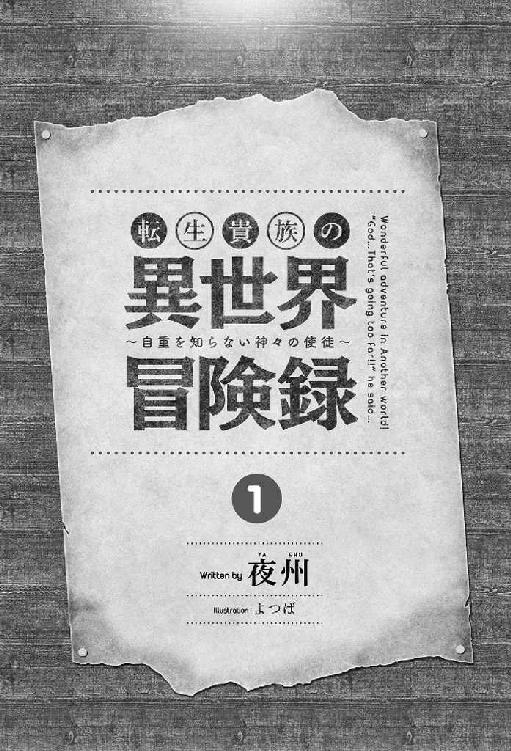
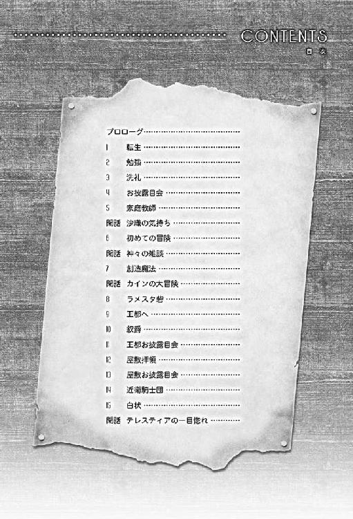
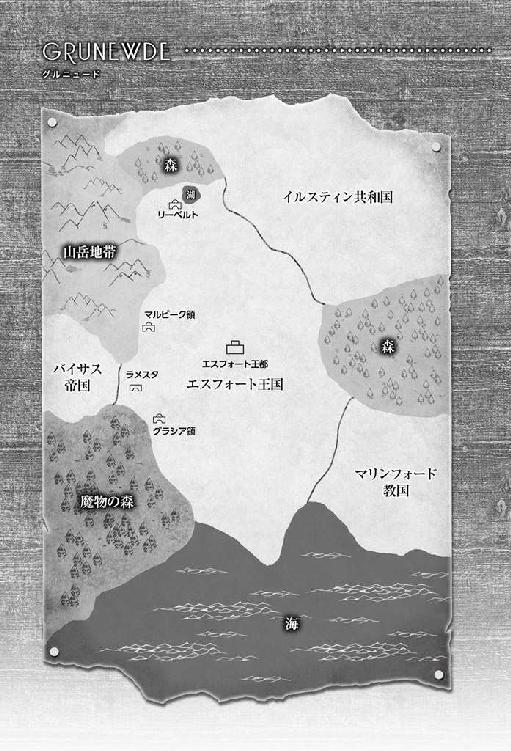
プロローグ
「何で誘いに乗らなかったんだろ。失敗したよな～、せっかく沙織が誘ってくれたのにな」
和也は自宅のベッドで横になりゴロゴロとしていた。手に持った携帯の画面には、女の子三人の浴衣姿の写真が映し出されていた。
『浴衣姿かわいいでしょ？ 見られなくて残念！』とメッセージがついている。
送られてきた写真の中央に写っているのは、高校のクラスメイトであり、小学生からの幼馴染でもある眞鍋沙織だ。誘われた花火大会を女の子三人と男一人では、なんとなく恥ずかしいからって断ってしまった。
椎名和也（高校二年生 十六歳）は遠くから聞こえる花火の音を、部屋で聞きながら、ベッドで転がっていた。
この家には和也一人しかいない。両親は小さいころに事故で亡くし、祖父に育てられた。そしてその祖父も去年亡くなってしまった。兄弟もおらず、両親と祖父の残してくれた遺産で、働かなくても大学卒業まで問題なく生活できるほど余裕があったことで、アルバイトなどはせず、学校と家を往復する毎日を送っていた。通っている高校でも中の上くらいの成績を維持し、顔立ちもごく普通だ。
網戸になっている窓の外からは、花火大会の最後を知らせる盛大な音が連続して聞こえてきた。
「今年の花火はこれで終わりか。まぁ今更考えても仕方ないし、アイスでも食べるかな」
和也は部屋を出て、階段を下りキッチンに向かう。
「今日はどのアイス食べようかな。気分的にはかき氷系でしょ」
冷凍庫を開けて中を見ると、アイスが一つも入っていなかった。
「まじかよっ。冷凍庫にアイス入ってないや。仕方ない、散歩に行くついでにアイス買いに行くかな」
階段を一気に駆け上がり部屋に戻ると、財布と携帯をもって、和也はコンビニに向かった。
空を見上げると、雲ひとつない綺麗な夜空となっていた。花火大会側から流れてくる煙が唯一、星達を遮っていた。
花火大会が終わったことで、浴衣姿の家族連れや、数人のグループが続々と駅に向かって歩いている。
一同に笑顔で、先ほどまでの花火大会について話し合っているのだろう。
「何か新しいアイス発売されていたりするかな？」
和也はすれ違う浴衣姿の人達に目もくれず、コンビニでどのアイスを買おうか悩みながら歩いていた。
コンビニがもうそこまで見える距離になったところで、いきなりコンビニの入り口から人が叫びながら出てくる。
「きゃあぁぁぁぁぁぁぁ!!」
「逃げろぉぉぉぉぉ!!」
逃げ惑う浴衣姿のカップルや、家族連れ。
そして、その後ろからは、男が出刃包丁を振り回しながらコンビニから出てきた。
「みんなしねぇぇぇぇぇぇ！！！！」
男の目は血走っており、逃げる人々のことを、首を左右に振りながら目で追っている。
叫びながら包丁を振り回す男は、直立不動で立ち尽くす和也と目が合った。そして男は和也に向かって走り出す。
「うわっ、まじかよっ！ 逃げなきゃ」
振り返り逃げようとすると、すぐ後ろに浴衣姿の中学生くらいの女の子二人組が、腰を抜かして尻餅をついていた。
「二人とも早く逃げろ!!」
和也は座り込んでいる女の子たちに向かって叫ぶが、こんな緊急事態に腰砕けになっている女の子は、すぐに逃げることが出来る状態ではなかった。
「──根性決めるか」
フゥ──、と一息ついた和也は包丁を持っている男に向き直った。
中段に腰を落とし、全身に力を入れ、タイミングを見計らった。
「いけぇぇぇぇ!!」
思いっきり包丁を持っている男の腰に、和也はタックルを決めた。
二人がもつれながら歩道を転がっていく。
和也は倒れ込んだ男に馬乗りになり抑えつける。
「誰かこいつの刃物を取り上げてくれ!!」
言った途端、和也の腹部のあたりから熱い感覚が全身に渡っていった。
「てめぇぇぇぇぇぇ！」
和也は男を殴りつける。
男は、殴られた勢いで包丁を手放した。
手放した包丁が勢い良く転がっていく。
近くにいた数人が、包丁を手放したことで、次々と集まり男を抑えつけた。
アドレナリンが出ていたおかげで腹部の熱さを気にしなかったが、ふと見ると包丁が刺さった場所から止めどなく出る血がＴシャツを赤く染めていた。
立ち上がろうとしたが、力が入らずそのまま和也は仰向けに転がった。
視界には夜空が映っていた。
和也はなんとか動く首を傾けると、近くからは警察や救急車を呼ぶために電話をしている人たちがいる。
通行人がコンビニから大量のタオルを持ち出してきて、和也の腹部からとめどなく流れ出る血を止めようと傷口を抑えつけた。
「すぐに救急車が来る！ 頑張れっ！」
腹部をタオルで抑えてくれている通行人が声を掛ける。皆、必死の形相だ。
そして先ほどまで尻餅をついていた浴衣姿の中学生に見える二人組の女の子たちが、和也の近くに寄ってきた。
「か、和也兄さんですよね!?」
うっすら化粧をした女の子に和也は見覚えがあった。
「あ、沙織の妹の愛美ちゃんか......久しぶり......」
「......はい......そうです......。愛美です......。助けてくれてありがとうございました。和也兄さんが庇ってくれなかったらと思うと......ひっく」
愛美は涙を流しながら、震える身体でお礼を伝える。
ただ、抑えつけている腹部から流れ出る血はまったく止まっていなかった。
次第に和也の意識が遠のいていき、先ほどまで熱く感じられた全身が、次第に熱が全て奪われ、凍ったような寒さに変わっていった。
和也はまだ微かに動く手を愛美の頭に乗せ軽く撫でた。
「──それにしても二人とも無事でよかった......。なんか意識が朦朧としてきたよ......もう眠い......」
大量の血を流している和也は青白い表情のまま、次第に瞼が閉じられていく。
「和也兄さん！ 目を瞑ったらだめですよ！」
愛美が和也の肩をゆすっている。だが、すでに全身に力が入らず、触れられている感覚すらなくなっていた。
「──ごめん......ちょっと無理っぽい」
その瞬間、愛美の頭から和也の手が力尽きたように落ちた。
「いやぁぁぁぁぁぁ！ 和也兄さぁぁぁぁぁん!!」
その一言を最後に和也は意識を失った。
１ 転生
うっすらと意識が冴えてくる。
窓から入る陽の光が、瞼を通り抜けて明るさを教えてくれる。
眩しさを感じながら目を開けると、視界には豪華な天井が入ってきた。
「知らない天井だ」
定番であるセリフを口にしながら、少し違和感のある身体を起こし、和也は周りを見渡した。
和也は寝ていたベッドの周りを見渡すが、自分の部屋のシングルベッドとは、比べ物にならないほど大きなベッドで寝ていたようで、その周りには机や家具などがセンスよく配置されていた。天井からはシャンデリアが吊り下がっており、窓から部屋の中に、明るい日差しがカーテンの隙間から差し込んでいる。
「それにしても、あの状態でよく助かったな、俺。いったいどこの病院だろ。ここまで豪華な個室に入院させてくれるなんて、どんな待遇だよ、まったく」
部屋を見渡していると、ベッドの隅で何かが動き出した。
良く見ると、椅子に座ったままベッドに伏せて寝ていた人が、起きたようだった。
起き上がった人は、まだ中学生くらいの少女に見える。しかもメイド服姿だ。
眠そうな目を擦りながら和也の事を見るとそのまま固まった。次第に少女の目元は、涙で溢れてきた。
「カインさまぁぁぁぁぁぁぁ!!」
突然、その少女が和也に向かって飛び掛った。
意味もわからずに受け止めたが、その少女は頭を胸に埋めながら泣いている。
「良かったですぅ。一週間も目を覚まさなかったのですよ」
少女はその一言だけいうと、和也に抱きつき身体を締め付けていく。
「ちょっと、いきなり何!?」
身体をバタバタさせながら、メイド服の少女を振りほどこうとするが、相手の身体が大きくてどうにもならない。
「あれ？ なんで、俺のほうが小さい？ その前になぜナースじゃなくてメイド？」
疑問に思い、和也は自分の手を、目の前にもってくる。
どうみても高校生の手に見えないほど小さく、まるで幼児の手と思える大きさだった。
放心状態で自分の手を眺めていると、メイド服の少女はいきなり立ち上がった。
「奥様にお知らせしてきますね！」
メイド服の少女はパタパタと扉を開け部屋から走り去っていった。
いきなりの展開で呆然となった和也は、また自分の手に視線を送る。
「俺、いったいどうしたんだろう」
手を握ったり開いたりしながら、感触を確かめる。
「あの時、コンビニから出てきた通り魔に刺されて、愛美ちゃんと会って、そのまま意識を失って......今病院？ その前にさっきの子が『カイン』って呼んでいたよな......。俺、和也だし」
混乱した頭の中を順番に整理していると、廊下から慌しい音がして部屋の入口の扉が勢いよく開かれた。
「カイン！ 目が覚めたのね！ 本当によかったわ！」
部屋に入ってきた女性は、腰まで伸びた銀髪で、二十代に見える美人だった。
スタイルも良く仕立ての良いドレスを着ている。普段の生活で見ることのないような人を見て、和也は唖然とした。
そして、その美人が、いきなり和也を抱きしめて涙を流しながら喜んでいる。
柔らかいものに顔がはさまれて、なんともうれしいような恥ずかしいような気分になった。
「カイン！ 私のことわかる？ あなたの母よ？ 忘れてないわよね？ 高熱を出して意識を失ってから、一週間も目を覚まさなかったのよ」
和也は銀髪の美人の言っていることが理解できなかった。
両親はすでに亡くなっており、いきなり目の前に現れた二十代に見える美人が『母親』だと言われても納得できるはずもない。
思考が纏まらず和也は、目の前に立つ自称母という美人をただ呆然と眺めていた。
「奥様、まだカイン様は目覚めたばかりで、思考が働いていないかもしれません」
「一週間も眠り続けたのだから、今は仕方ないわね。今日はゆっくり休みなさい。またあとで顔を出すわ。レイネも心配していたから」
同行したメイドの意見に同調し、自称母の銀髪美女は、メイド服の少女に向かい、続けて話しかける。
「シルビア、今日はカインのこと見ていてあげて。あと、スープなら平気だと思うから用意してもらえるかしら」
「かしこまりました。奥様」
自称母の銀髪美女と、メイド達は食事を用意するために、部屋を出て行った。
部屋で一人になったことで、和也はもう一度、視線を落とし自分の手を握ったり開いたりしてみた。
どこから見てもやはり幼児の手だった。
「これってラノベとかである転生なのかな。やっぱりあの時、助からなかったかぁ。──でも愛美ちゃん助けられたから良しとするか......。沙織の悲しい顔を見ないで済んだし......」
ベッドに寝転がり天井を見上げ、沙織の顔を思い浮かべながら和也は呟いた。
学校の会話の中で、ラノベの話題もあり、和也は実際に、本や携帯で転生モノのラノベをよく読んでいた。特に仲の良い沙織もラノベが好きだったことで、お互いに本の貸し借りもしていた。
「まず、今の状態を確認しないとな......。一週間眠っていたらしいし」
ずっと寝ていたらしく、身体を動かすと節々に痛みが走るので、ベッドの周りを確認しながら時間を潰していた。
少しの時間が経ち、扉がノックされ、先ほどのメイド服の少女が、スープを乗せたカートを押しながら部屋に入ってきた。
「カイン様、スープの用意ができました」
和也はだるい身体をベッドから起こした。ベッドの横にテーブルを置いてもらい、用意してもらったスープを口に含んだ。
「──美味しい」
味は薄いものの、肉と野菜の旨味がじっくりと出ていて優しい味だった。
スープを飲みながら和也は自分が転生したことを理解していった。
そして一番気になることを思い浮かべた。転生したからこそ、
（えーっと、確かさっきシルビアって呼ばれていたよな）
「シルビア、鏡ってあるかな？」
「ございますよ。ただ、寝たきりで何も食べてなかったので、少し痩せられましたが、お変わりはないと思いますよ」
シルビアは、手鏡を机の引き出しから取り出し和也に手渡した。
渡された手鏡は、銀で装飾され豪華に仕上がっているものだった。両手で持ち、覚悟を決めて和也は顔を覗いた。
鏡の中の男の子は、銀髪に少しだけ青のメッシュが入った髪色で、クリっとした蒼い目の可愛らしい三歳くらいの男の子だった。
顔のつくりは、さっき見た母親と言っていた美人によく似ていた。
ブサメンだったらどうしようかと思っていたが、母似ならば将来イケメンになりそうだったので、和也は安心して思わず安堵の吐息を漏らした。
顔を左右に振り、鏡を見ながら顔を確認していると、いきなり横からシルビアが鏡を覗き込んできた。
「カイン様は、将来有望なお顔立ちをしているので安心ですよ。今でもこんなに可愛いのですから」
シルビアが、笑顔でそっと声を掛ける。
シルビアが隣にいたことをすっかり忘れ、鏡の中の自分に夢中になっていたことに、少し照れながら手鏡をシルビアに手渡した。
「鏡ありがとう」
シルビアは手鏡を受け取ると、引き出しに仕舞う。
そして和也は、スープの残りをゆっくりと食べた。美味しかったことで、思わずお代わりをしてしまったのは、寝ている間、何も食べていなかったから仕方のない事であった。
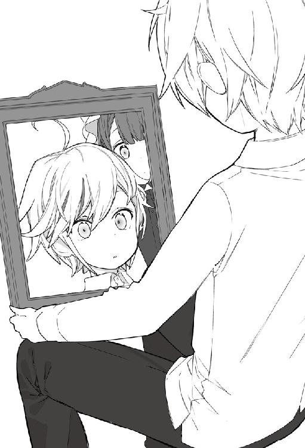
その後、三日間ほど、ベッドでのんびりと過ごしていた。
もう体調は万全だったが、シルビアを含め家族から、安静にしているように言いつけられていたからだ。
これからの生活を送るにあたって、問題がひとつあった。
和也はこの数日で、カインとして転生して生きていくことに自分自身で納得出来ていた。
ただ、カインとして産まれてから、今までの記憶が何もない状態だった。
シルビアに聞いて三歳ということは確認できたが、転生する前の記憶は何一つない。
前世でも三歳の時の記憶を思い出せと言われたら無理だろう。でも今は三歳だが、元は高校生ということで、最低限の知識はある。
この世界の情報、いや、まだ出たことのない部屋の外の情報が一番欲しいと思っていた。現代日本に住んでいた和也は、スマートフォン片手に世界中の情報を見ることができていた。
今は部屋の外の事さえ知らず何も情報が入ってこない。
そして、会話は普通に出来ているけど、文字はまったくわからなかった。
部屋にある机の棚に置いてあった絵本は、日本語でないのは確かだ。英語でもなく見たこともない文字の羅列が並んでいた。
和也はベッドで安静にしながら、自分の家の事など色々とシルビアから聞いて情報を集めることにした。
今世の名前はカイン・フォン・シルフォード。
エスフォート王国内のグラシア領を治める辺境伯家の三男。
エスフォート王国は、グルニュード大陸の中央に位置し、周囲を色々な国に囲まれており、過去に何度か他国から戦争を仕掛けられることもあったが、ここ数年は落ち着いているということだった。
エスフォート王国で辺境伯とは、他国と隣接した場所に領地を持ち、独自に軍を指揮して、他国から自領を守ることができる権限を持った爵位になる。
辺境伯は上級貴族にあたるとシルビアから聞いて少し安心できた。
父の名前は、ガルム・フォン・シルフォード・グラシア。
領主だけが領地の名前を最後につけることになっている。フォンが途中で入るのは貴族だけで、平民は名前だけとなる。この前、意識が戻ってから初めて顔を合わせたが、青い髪でしっかりとした体つきをしており、三十代半ばに見える美男子だった。
ガルムには妻が二人いて、母は第二夫人だそうだ。二人目の妻だから少し年が離れているのだろう。
母の名前はサラ・フォン・シルフォード。目を覚ました時にすぐに駆けつけてくれた銀髪の美人だ。そして姉の名前はレイネ・フォン・シルフォード。
カインと二歳離れた姉だ。
目が覚めてから、毎日カインの顔を見に来てくれていた。カインと同じ青が少し入った銀髪で顔立ちも似ていた。いつも「カインくん～」って言いながら擦り寄ってくる可愛い姉だ。
第一夫人はマリア・フォン・シルフォード。第一夫人には息子が二人いて、それぞれジン・フォン・シルフォードとアレク・フォン・シルフォードという。二人の兄は王都の学園に通うため、第一夫人のマリアを含めこの屋敷にはおらず、王都の別邸で暮らしているとのことだった。
学園は十二歳から十五歳までの三年間通い、成人は十五歳となっている。
グラシア領は王都から東南に位置し、馬車で一週間の距離がある。領主邸があるこのグラシアの街を中心に、いくつかの街や村があり、そして、隣接するバイサス帝国との砦を東に持ち、南には魔物の森という魔物が徘徊する森を自領に持っている。
なんとなくだが、領地と家族のことが理解できたので、カインはこれからについて考えてみた。
この世界では、五歳のときに教会の洗礼を受け、その時に司祭が神の声を届けてくれる。
国教はマリンフォード教といい、多神教で、七柱の神がいる。マリンフォード教国という国があり、そこから各国の王都や主要な街に教会を建て司教や司祭を派遣している。そして、教会を建設した国からの補助金や住民からのお布施を募り運営をまかなっている。
この世界の七柱の神は、次の通りだ。
創造神 ゼノム
武神 サーノス
大地神 ベラ
魔法神 レノ
技能神 グリム
商業神 パナム
生命神 ライム
創造神ゼノムを筆頭に六柱が各自役割を持っている。
そしてこの世界には魔法があることを知った。
現代日本では、空想でしかなかったものが、使えるかもしれないという期待で胸を躍らせた。
カインは長男ではないので、この領地は引き継げない。長兄であるジンがグラシア領を継ぐことになっている。
なんらかの功績を立てると国より叙爵され、新たに独立した貴族の家を興すこともあるそうだが、一般的には当主の手助けをするか、軍に入って騎士になるか、商会で勤めることや冒険者になることが多いそうだ。
「やっぱり冒険者だよな」
簡単に貴族の当主になれることはないとわかっていたからこそ、冒険者となり、色々と世界を見て回りたいとカインは思っていた。この世界には人間族だけでなく、エルフやドワーフ、獣人族など多数の種族がいることをシルビアから聞いたから余計にそう思うようになっていた。
前世でのラノベ知識を持っているからこそ、その意欲は止まらない。
「まずは、この世界のこと、文字や歴史、地理とかもっと知らないとな。まだ三歳だし時間はたっぷりある」
心にそう決めたカインであった。
２ 勉強
シルビアはカイン付のメイド兼教育係となっており、文字も読めるということで色々と教えてもらった。
「カイン様、絵本をお読みいたしますね」
精神的には高校生だが、文字がわからないので仕方なかった。
前世の高校生だった頃の記憶を持ちながら、少女から絵本を読んでもらうという屈辱を味わいながらも、真剣に文字を覚えていった。
文字を指差しながら読み方を聞いて、書き方を教わりながら、自分でも練習をしていた。
この世界には、まだ綺麗な紙というものはなく、羊皮紙や布地、木板に書き込むのが主流になっている。その中でこの絵本は紙に書かれていることで、高級品だということが伺える。
やはり精神と知識は高校生。しかも脳は三歳児ということで、勉強すればどんどんと頭に入っていく。一ヶ月を経過した頃には、文字については問題なくなっていた。
「カイン様、もう文字の読み書きは大丈夫ですね。三歳で完璧に覚えるなんて天才です！ まだレイネ様もここまではできておりませんよ」
「シルビアのお陰だよ。上手に教えてくれたからすぐにわかったし」
本命の本を探してもらうために、カインはシルビアをまずはおだてた。
シルビアはカインにおだてられて、頬に両手を当て照れている。
そしてここからが本番だとカインは気を引き締める。
「そういえばシルビア。この国の歴史とか、魔法の本ってこの家にあるのかな？」
「この屋敷の書庫に、両方ともございますよ」
「両方ともあるの？ それ読ませて欲しい。何冊か持ってきてくれないかな？」
「わかりました。昼食後にお持ちいたしますね。でもそんなに難しい本を読んでもわかりませんよ？」
一般的に、魔法と歴史を読みたがる三歳児がいるわけがない。シルビアは疑問に思いながらも頷いた。
この世界に転生して、一ヵ月。やっと魔法の本が読めることで気持ちが高ぶってきた。
あれから体調も万全で特に問題もなく、母親であるサラからも屋敷の庭内だけという条件で自由行動の許可をもらっていた。
「魔法が早く使いたい。その前に、俺に魔法が使えるのかが心配だけどな......」
昼食後、部屋に置いてある絵本を読んでいると、シルビアが魔法と歴史の本を持ってきてくれた。
「カイン様、この国の歴史と、簡単な魔法の本をお持ちいたしました」
「ありがとう。シルビア」
「歴史も魔法も難しいですよ。ステータス魔法はまだ使えませんし」
「いいんだ、シルビア。そのうち使えるようになった時のための知識だからね」
シルビアから本を受け取り、さっそく題名を見る。
『エスフォート王国の歴史』
『魔法の手ほどき初級編』
エスフォート王国とは、今、カインが住んでいる国の名前だ。
王国が出来て約三百年、今の国王は十五代目になる。
初代国王は、冒険者の身分から偉業を成し遂げ勇者となり、村を興し、そこから街、国へと一代で築いたと書かれている。ただ、どこの出身かは不明となっている。
初代国王の名前が、ユウヤ・テラ・ヒラサワ・エスフォート。
初めから日本人と思われる名前を見てカインは思わず吹いた。
「これって、確実に日本人だよな」
現在の国王はレックス・テラ・エスフォート。名前の間にある「テラ」は王族を表している。
何代か前にヒラサワは抜いたそうだ。
この国は貴族制をとっており、王族、大公、公爵、侯爵、辺境伯、伯爵、子爵、男爵、騎士爵に分類されている。大公は国王の兄弟のみとなっており、公爵から伯爵までが上級貴族、子爵から騎士爵までが下級貴族と大まかに分かれている。
基本的に貴族は世襲制だ。但し、当主の家族は準爵という扱いになり、準爵の家族は平民となる。
また、名誉貴族職と騎士爵は当代限りとなっており、家族は平民の扱いになる。これは貴族の家が増え過ぎるのを抑制するための政策となっている。貴族当主には国から給金が支給されることになっており、当主が増え過ぎたら国は破綻してしまうので仕方ないことだ。
シルフォード家は辺境伯家となっており、上級貴族に分類されている。
住んでいる屋敷も小さな城と言う程大きいことで、なんとなくカインも自覚していた。
歴史についての本を閉じ、隣に置いてある魔法の本に手をかけた。
「やっぱり魔法はファンタジーだよな」
本をめくり最初に書いてあるのは、一文だけだった。
『五歳の洗礼を受けて、ステータスに素養があれば読むべし』
それまで魔法の使用が出来ないのかと思いつつもページをめくっていく。
『体内の魔力を感じること』
この世界の人間にある魔力袋は、へその近くにある丹田あたりにあるみたいだ。
生き物の種類によって異なるそうだが。
「ものは試しだ。やってみようか」
カインは床に座り込み座禅を組む。そして目を閉じて瞑想を始めた。
深呼吸を繰り返し、体の中を感じていると、丹田あたりが熱くなっていく。
「これかな」
魔力の流れを意識してみると、ゆっくりだが、体内のあちこちを巡っているのがわかる。
「なんか血管みたいな感じだよな」
体の中をぐるぐると動くように意識していると、思いのまま動くことがわかった。体内の魔力を動かしながら、さらにページをめくっていく。
『指先に魔力を集めて、詠唱せよ』
「うーん。こんな感じかな」
指先に魔力を集めるように集中し、ロウソクみたいなイメージで『火よ』と唱えた。
五センチくらいのイメージのつもりだったが、いきなり指先から五十センチくらいの火柱があがった。
「うおっ！ びっくりしたぁ」
指先に集めた魔力を拡散させると火が消えた。
「魔法は使えることがわかったけど、部屋の中で火の魔法の練習は危ないな。今日のところは、魔法の本を読むだけにしておこう」
本を読みながらわかったことは、魔法属性の基本として火水風土の四元素があり、他にも無闇光空などがある。イメージに魔力をのせて発現するので、基本属性から応用したオリジナル魔法などがある。
「日本のラノベ知識のある俺としてはたまらんな」
魔法が使えたことに思わず笑みを浮かべた。
先程使った魔法で、魔力減少の怠さを感じながら、また魔法の本に目を向ける。
「魔力操作と魔力量増加を伸ばすのは、どこかに載っているのかな」
ページをめくりながら目的の箇所を探していく。
『体内魔力循環を日々使うことによって魔力操作が上達する』
『体内魔力を使い切り、休息することで、魔力量の上限が増える。但し、上限は人により異なる』
「まずはこの二つがメインだな。まだ三歳だし伸び代は結構あるだろ。これからは魔力量を増やすこと、あと実験だな」
ニヤニヤしながら目的のものを見つけられたことに満足する。
「カイン様、そろそろ夕食のお時間です」
シルビアの声だ。窓を見ると夕焼けの光が差し込んでおり、いつのまにか夕暮れ時になっていた。
魔法の本に集中しすぎたらしい。
「今いくよ」
机に魔法の本を仕舞い部屋をでる。
ダイニングに向かうと、すでにサラとレイネが待っていた。
席につき二人と雑談していると、最後に父のガルムが入ってきて席に座る。
「それではマリンフォード七神に感謝をしていただこう」
ガルムが最初にスープに口をつけたあとに、みなも食事を始める。
「カイン、最近は絵本を読みながら、文字の勉強ばかりしているとシルビアから聞いているぞ。本は楽しいか」
「はい、父上。まだ外出できる年ではありませんので、外の知識を今から勉強するのは楽しいです」
「カインったらまだ三歳なのに、もう文字の読み書きを完璧にこなせるのよ」
サラが笑顔で答える。やはり自分の子供の頭がいいと思っているからであろう。
いくら文字は違うとはいえ、実際、高校生の集中力はあるから頭には結構入っていく。
「早く洗礼を受けて、魔法を使ってみたいです」
もちろん先ほど実際に魔法が使えたことを伝えたりはしない。
「そうか、将来宮廷魔術師かな。カインは」
ガルムもワインを飲みながら有望な自分の息子に対して喜んでいる。
「私だってもっとすごい宮廷魔術師になっているわよ。カインくんの先輩になって待っているわね！」
姉のレイネは魔法の素質があったようで、早く学園に入学して勉強したいようだ。
この世界では十二歳から十五歳の間を学園で過ごす。各領都に学園は設けられているが、平民が通うための学園であり、特別な事情がなければ、貴族の子息は王都にあるエスフォート王立学園に通うことなる。平民も試験に合格すれば入学でき、王立学園を卒業すると、領都に戻って仕事を探しても、歓迎されるほど教育水準が高くなっている。
こうして和やかな雰囲気の中、食事を終えて部屋に戻ったカインは、すぐさま引き出しから魔法の本を取り出し没頭するのであった。
そして二年が経ち、五歳の洗礼の時期を迎えた。
魔法を知ってからの二年間、勉強に鍛錬、魔法の訓練を秘密裏に行っていた。
散歩と言いながら、邸宅の裏に隠れて魔法の実験を繰り返す日々を過ごしていたが、さすがに環境破壊のような上級魔法を使うと、バレてしまうと思い自重している。しかし空に向かって風属性の魔法を放つなど、自己訓練には自重という言葉を忘れていた。
「うん。俺は魔法使いになれる」
自重を知らない自己訓練を繰り返すうちに、あっという間に日数は過ぎ去り、洗礼を受ける日を迎えた。
３ 洗礼
この世界では、前世の日本のように治安は良くない。病気に対しても教会で回復魔法に頼るだけしかなく、教会に対してお布施ができない家庭では、病気になっても治す手立てがない。
子供が産まれても、亡くなることが多い世界である。
だからこそ五歳まで無事に育ち、これまでの成長を祝い、そしてどのように成長していくかを、神に祈る習慣として洗礼があるのだそうだ。
ステータス魔法が使えるようになるのも、神に祈った結果受与される。
「そういえば今まで、誕生日とか祝ってもらったことなかったな」
一般的には五歳、十歳、十五歳でお祝いをし、十五歳で成人となる。
カインはこの世界のことを考えながら、洗礼用に用意した服に袖を通していく。
「カイン様、そろそろお出かけの準備できていますか？」
扉がノックされ、シルビアが部屋に入ってきた。
「シルビアか、もう用意できているよ」
いつものメイド服姿で呼びに来たシルビアと一緒に部屋を出る。
すでに扉の外では、ガルム、サラ、レイネが待っていた。
「父上、お待たせしてすいません」
カインは遅れたことを、ガルムに頭を下げて謝罪する。
ガルムは笑いながらそれに手を振って返す。
「かまわん。それにしても正装すると見違えるな。やはりサラに似ているぞ」
「カインくん、かわいい！」
カインの姿を見て、レイネが擦り寄っていく。
少しブラコンが入っているが、よく世話をやいてくれる優しい姉だった。
魔法の練習をするために部屋を空けると、屋敷中を探し回っていることが良くある。
カインは練習の時は、いつも見つからないように隠れていたからだ。
「レイネ姉さまありがとう」
カインは満面の笑みで、素直に答えた。
馬車の準備も整い、執事のセバスが呼びにきた。
「皆様、お待たせいたしました。用意ができましたのでお乗りください」
馬車の扉を開き、隣で待機する。
家族全員で馬車に乗っていく。一番奥にはガルム、その隣にサラ。レイネとカインはその対面に座った。
「それでは出発します」
セバスの合図の後、馬車はゆっくりと進み始めた。
「そういえば、ステータス魔法を授けられるって、どんな形で見えるようになるんですか？」
カインはステータス魔法を見たことがなかったので、レイネに聞いてみた。
「カインくんは見たことなかったのね！ 私のを見せてあげる」
そう言いながらレイネが唱えた。
『ステータスオープン』
レイネの前には、半透明なガラス画面のようなものが浮かび上がる。
「『ステータス』と唱えると、自分だけ見られるようになって、『ステータスオープン』で、人に見せることが出来るようになるのよ」
「すごいね、レイネ姉さま」
半透明なガラスのような画面を見せてくれる。
「カインくん！ もっと近くにきて。見せてあげる」
レイネに密着するように近づいて、半透明な画面を見た。
【ステータス】
【名前】レイネ・フォン・シルフォード
【種族】人間族 【性別】女性 【年齢】七歳
【レベル】１
【体力】１３０／１３０
【魔力】２２０／２２０
【能力】Ｄ
【称号】辺境伯家長女 カイン大好きっ子
【魔法】
風属性レベル１ 水魔法レベル１ 火魔法レベル１ 生活魔法
【スキル】
礼儀作法レベル２
【加護】
魔法神の加護レベル２
「......」
見てはいけない称号が出ている。
「あっ！ 称号出しっぱなしだった。カインくん、見ちゃった？」
少し照れた顔をしながらカインを上目遣いで見つめる。
「レイネ姉さまって三属性も魔法が使えるんだね！」
カインは称号については見なかったことにした。
「──見えなかったならよかった」
隣で胸を撫で下ろしているレイネは、安心したようで笑顔で答えた。
「レイネは三属性の魔法適正もあり、加護もレベル２あるから、将来、宮廷魔術師になれるかもな」
ガルムも笑顔だ。やはりレイネも優秀なステータスだということが読み取れる。
「魔法と加護はな、レベル１から５まであり多い方が強くなれる可能性がある。鍛えれば魔法のレベルが上がるし、神々に認められれば、加護のレベルもあがるのだ」
宮廷魔術師くらいになると、魔法レベルと加護レベルが３から５はあり、５までいくと歴史に名を残す偉人のような存在が多い。
馬車の窓から街並みを眺めていたが、このグラシアの街は、商店や屋台が立ち並び、多くの人が行き交い賑やかに見える。
馬車に揺られて三十分ほどで教会につくと、正門前で馬車を降り、受付に向かう。
「ガルム・フォン・シルフォード・グラシアだ。今日はうちの息子が五歳になったので洗礼を受けに来た。司祭には伝えてあるはずだが」
ガルムが受付嬢のシスターに話しかけた。
「はい、司祭より伺っております。こちらへどうぞ領主様」
シスターは領主ということで、姿勢を正し礼儀正しく一礼した後、先頭に立ち、家族一同を誘導していく。廊下を進んだあと、扉を開けその横に立ち一礼をした。
「今、祭壇の準備をしております。こちらの部屋でお待ちください」
案内された部屋は、教会だけに豪華ではないものの、落ち着いた応接室だった。
ガルムが一番奥へ、その隣にサラ。レイネとカインはその対面に座った。
シスターが人数分の紅茶を用意し各自の前に置いていく。
「準備が整いましたらお迎えにあがりますので、もう少しお待ちください」
シスターが退出して、家族だけとなったことでガルムが口を開いた。
「いよいよだなカイン。そこまで緊張しなくても平気だぞ。司祭がその都度、説明してくれるからな。今日は洗礼が終わったら、身内だけでお祝いだ。カインのお披露目会は、また別にあるからな」
「カインくんも、魔法の適正や加護を、いっぱいもらえるといいね！」
レイネは一緒にいるときは常にニコニコしている。
「私の子供だもん。魔法の適性はあると思うよ。レイネと同じくらいだといいね」
サラはガルムと結婚する前は、冒険者として生活していたと昔話で聞いたことがある。その時は魔術師として攻撃魔法や回復魔法が使えると話していた。冒険者ランクもＣランクまで上がったそうだ。
カインは隠れて魔法の練習をしており、自覚できている範囲でも四元素の魔法は全てできていたので、適性については問題ないと思っている。
四元素の適性を見せたら、家族は喜んでくれるかなと思いながら、紅茶を飲んで一息ついた。
家族で雑談をしていると、扉がノックされシスターが部屋に入ってきた。
「皆様、準備が整いましたのでご案内いたします。こちらへどうぞ」
シスターの案内で廊下を進むと、祭壇の部屋についた。
祭壇の前には、金糸で縁どられた白いローブを着た司祭と思われる壮年の男性が待っており、奥には少し大きい像を中心に、七柱の神の像が佇んでいた。陽光がステンドグラスの窓から差し込んで幻想的に光り輝いている。
「領主様、お待たせいたしました。それでは、これよりカイン・フォン・シルフォード様の、五歳の洗礼を開始したいと思います。カイン様は前にお進みください」
ガルムに促され、カインは司祭の前に片膝をついて顔の前で手を組む。
「カイン・フォン・シルフォードよ。マリンフォード教が讃える七柱の神が、そなたの五歳の洗礼を祝う。今後も七神を讃えよ」
司祭はそのまま神々の像へ向かい、膝をつき手を合わせる。
「この世界を創造し見守る神々よ。カイン・フォン・シルフォードが無事に五歳になったことをご報告いたします。そして彼の者に、神々が創りしこの世界で進むべき道を照らしたまえ」
その瞬間、七柱の像からは祭壇の部屋を埋め尽くすほどの眩しい光が放たれ、カインの視界は真っ白に染まった。
目が慣れてくると、カインは辺りを見渡した。そこは先ほどまでいた教会の洗礼の祭壇とはまったく違っていた。
辺り一面真っ白で、何もない世界。
「なんだこれっ！」
「フォッフォッフォッ。ここは神の世界じゃよ。やっと五歳になったか。待ちわびたぞカイン・フォン・シルフォード。いや、椎名和也君と呼んだほうがいいのかな？」
急に声を掛けられ、驚いて振り向くと、そこには十人くらいが座れる楕円形のテーブルと椅子があり、声を掛けた白いローブを着た老人を筆頭に数名が座っていた。
「和也の名前を知っているってことは、俺が転生したのも知っているってことですよね？」
カインは真ん中に座っている老人に問いかけた。
「まぁ、そのことも含めて、ゆっくり話そうか。まずはそこに立っていても仕方ない。こちらに座るとよい」
真ん中に座っている老人に勧められて、空いている椅子にカインは座った。
ちょうど正面に老人、左右に男女が三人ずつ座っている。
「あらためて自己紹介としようか。わしはゼノムという。この世界を創った創造神といったほうがよいかな」
変な老人だと思っていたら、創造神だったことにカインは驚いた。
「ちなみに神なだけに、お主の心の声もだだ漏れだからな」
ゼノムが胸元まで伸びたヒゲを撫でながら笑っている。
ゼノムの言葉に冷や汗をかきながらも答える。
「私は転生して、今はカインと名乗っています。父と母にカインと名づけられました。この世界ではカイン・フォン・シルフォードとなります。あらためてよろしくお願いします」
椅子から立ち上がり、丁寧に頭を下げて挨拶をする。
さすがに主神とも言われている創造神にタメ口きけるほど、カインの度胸は据わってなかった。
「うむ、まずはお主の転生のことではあるがな、ライム！ 話してやれ」
左側に座っている、腰まで伸びた長い白髪の女性がビクっと肩をゆらした。
なぜか申し訳なさそうな表情をして下を向いていたが、ゼノムから声が掛かったことで顔を上げる。
「──私はライムです。生命の輪廻や死を司っている神になります。まず、あなたの転生についてですが、地球の神より依頼を受けて、この世界に転生させました。実はあなたの死は想定外なので、地球の輪廻に乗せられないそうです」
いきなり『死は想定外』との核心に迫った言葉を告げられ、カインは動揺する。
「えっ、あの時女の子をかばったけど──いけなかったのですか？」
「地球の神から話を聞いたのですが、あなたに向けて走ってきたところ、途中躓いて転び、周りにいた人で抑えつけるのが本当の予定だったとのことです」
「──もしかして、無駄死にということですか」
あれだけ勇気を振りしぼって立ち向かったのに無駄だったと言われ、カインは肩を落とす。
「──はい。犯人もまだ誰も傷つけていない状態でしたので、そこまで罪が重くなかった予定でしたが、あなたが亡くなったことにより、殺人罪になってしまいました」
「自分が死んだだけでなく、犯人の罪も重くしたと......」
「地球の神も、面倒なことをしてくれたって言っておりました」
「......ライム。もうちょっとオブラートに包んであげたほうが......」
創造神ゼノムがカインの顔色を伺いながらフォローをする。
神から衝撃的な真相を聞かされ、カインとしては後悔というより、悲しかった。まさか他人まで不幸にしながら死んだと聞いたら、誰でもそう思うだろう。
「地球で転生することはできないので、私があなたの魂をお預かりしたということです。その時に、一応、善行によってお亡くなりになりましたので、地球の神と相談して、記憶を残したままにしたら、こちらの世界も発展するかもよと言われて、記憶を残したまま転生させたのです。ただ、産まれてすぐに、記憶を目覚めさせてしまうと、授乳やオシメの交換など精神的に混乱を及ぼすと思いましたので、五歳の洗礼の時に記憶が蘇るように封印しておきましたが、三歳でなぜか、記憶が戻ってしまったのです」
頭を下げながら謝ってくるライムを眺めながら、カインはライムに伝えた。
「ライム様、私はこの世界に生を受けて五年、記憶を取り戻してから二年経ちましたが、今は楽しくて仕方ありません。あちらの世界には、未練はありますがすでに死んでしまいましたし、ちょっとショックなこともありますが、今更戻ることもできません。それに、前世では小さい頃に家族をなくし、最後の家族であった祖父も亡くなりました。今は家族がおり幸せに暮らしています。それに、この世界には魔法があり、とても充実した生活を送っているので、謝らないで下さい。逆に記憶を残してくれてありがとうございます。三歳で記憶が戻ったことについても、文字や魔法など、色々と勉強できたので問題ありません」
逆に神々に頭を下げて感謝を示した。
本当に今の生活は魔法の勉強や好きな事が色々と出来る。外には出ることはなかったが。そして一番は家族がいることに感謝をしていた。
「うん、君いいね。あたしは気に入ったよ」
長い黒髪で黒いローブを着た女性が、話に入ってきた。
「あたしは魔法神のレノよ。カインくん、三歳からずっと魔法の練習をしていたでしょう。たまに見ていたよ。私からは君に加護を与えるから、これからも修行がんばりなさい」
「うむ、わしらからも加護を与えよう。これからまた会うことになると思うしな。フォッフォッフォッ」
創造神の「また会う」って意味はわからなかったが、レイネも魔法神様の加護をもっていたしありがたいと思った。
「まずはここにいる者たちを紹介しないとな。ライムとレノはいいな。その隣に座っているのは大地神のベラだ。反対側のごついのは、武神サーノス。その隣が技能神グリム。そして太ったのが商業神のパナムじゃ」
武神のサーノスが最初に声を掛けてきた。
「カインよぉ。魔法ばっかりしてないで剣技とか体術も鍛えておけよっ。俺の加護もやるから鍛えれば強くなるぜ？ 見ろよこの筋肉を」
サーノスのはちきれんばかりに盛り上がった筋肉を見せつける。
「技能神のグリムじゃ。わしも加護をやろう。この世界にはないものが多い。娯楽もあまりない世界だからな。やりすぎなければ前世の世界にあった知識を持ち込んでも構わん」
続いて隣に座っている商業神が、声をかけてくる。
「私も加護を渡そう。私の加護があれば、鑑定とアイテムボックスが使えるようになるぞ。鑑定は意識すれば詳細がわかるようになる。自分のステータスも、詳細がわかるようになるぞ。アイテムボックスの入れられる数は、加護の度合いで変わるけどな」
「私もあげるわねぇ。ちょっと特殊だから戻ってから色々と試してみてね」
最後に大地神ベラがのんびりとした口調で話しかける。
全ての神々から加護を与えられることに恐縮しながら、神々の話を聞き続けた。
最後は創造神だ。
「ワシの加護は、元の世界に戻ってから確認すると良いぞ。そろそろ時間じゃな。カインよ、また会おうぞ。達者でな」
創造神がそう言うと、次第に意識が遠くなっていく。
視界が一瞬で切り替わり、ふと気づくと、カインの目の前にはレイネの顔があった。
「カインくん！ 平気？」
周りを見渡すと、先ほどまでの白い世界とは違い、教会の祭壇の部屋だった。
戻ってきたことをカインは安堵の息を漏らす。
そして見上げると、目の前に立っていた司祭が、口を震わせながら驚いている。
「おぉ、神々の像がこんなに光り輝くなんて......」
司祭が神の像に膝をつき祈り始めた。
後ろで待機していた家族を見ても、唖然としている。
少し待っていると、やっと司祭の祈りが終わった。
「これにて洗礼を終わります。先程の光は神々が加護を与えたものだと思われます。カイン様、今後も神々に感謝を行いながら成長していくように祈っております」
「ありがとうございました」
司祭と神々の像に、頭を下げてからシスターの案内で祭壇の部屋を退出する。
皆、無言で馬車に乗る。
最初に言葉を発したのは、ガルムだった。
「──あの光はなんだったのだ。レイネの時は光ることはなかったよな。カインよ、何かわかるか？」
「父上、私にもわかりません」
さすがに神々の世界に呼ばれ七柱の神と会っていたなんて言えるはずもなかった。
「そうか......。もしかしたら神の加護を頂いたのかもしれないな。屋敷に戻ったら、自分のステータスを確認すると良い。最初は一人で見て、何か相談があれば私に言えば良い」
「父上、ありがとうございます。屋敷に帰ったら確認してみます」
「カインくん！ 私のも見せたんだから、あとでカインくんのも見せてね！」
笑顔のレイネに癒されながらカインは頷いた。
「うん！ わかったよ。レイネ姉さま、加護もらえているといいなっ」
実際には神々にも会って、加護を与えられたことはわかってはいたが、ステータスを確認するまでは話すつもりはなかった。
馬車に揺られながら、来た道を戻り、屋敷に到着した。
カインは早々に馬車を降り自分の部屋に戻ってきて一息つく。
「たしかステータスだったな」
『ステータス』
半透明な板が目の前に表示された。
【名前】カイン・フォン・シルフォード
【種族】人間族 【性別】男性 【年齢】五歳
【称号】辺境伯家三男 転生者 神の使徒 神童
【レベル】１
【体力】１８０／１８０
【魔力】３４，５６０／３４，５６０
【能力】Ｓ＋
【魔法】
創造魔法レベル10 火魔法レベル10 風魔法レベル10 水魔法レベル10
土魔法レベル10 光魔法レベル10 闇魔法レベル10 時空魔法レベル10
生活魔法
【スキル】
鑑定レベル10 アイテムボックスレベル10 武術レベル10 体術レベル10
物理耐性レベル10 魔法耐性レベル10
【加護】
創造神の加護レベル10 生命神の加護レベル10 魔法神の加護レベル10
大地神の加護レベル10 武神の加護レベル10 技能神の加護レベル10
商業神の加護レベル10
「..................」
ステータスを見たカインは愕然とした。
座っていた椅子から崩れ落ち床に手を付き、立ち上がれない状態となった。
（つっこみどころ満載すぎだろ！）
「神様たち、加護はありがたいけど、やりすぎだよね......。神の加護ってレベル１から５までの五段階じゃないのかよ。なんだよレベル10って!! そんなの父上だって言ってなかったよ!!」
三歳から今になるまで、魔法の修行に対して、自重を忘れていたけど、神様たちも自重を忘れていたとしか思えなかった。神々から加護を与えると聞いたとき、レベル１か２がつけばいいなと思っていたからだ。
「このまま家族にステータス見せたら、どうなるかわからねぇ。しかもなんだよ！ 神の使徒って。教会とかに知られたら家に帰してもらえねぇよ！ なんとかこのステータスを見せなくていい方法は......」
カインは頭を抱えるしかなかった。
夕方から家族だけでパーティーがあり、その時にステータスを家族に見せる必要があるだろう。
「こんなステータス、家族にだって見せられる訳ないよっ」
立ち上がった後、ベッドに寝転がりゴロゴロと頭を抱えながら転がった。そして、もう一回ステータスを見てみる。先ほどのステータスが間違いだったということに期待をして『ステータス』と唱えた。
しかし表示されたステータスはどう見ても先ほどまでと同じであり、淡い期待はすぐに崩れ去った。
見れば見るほど、家族に見せられないと実感が湧く。
「なんとかしてステータスごまかす方法を考えないと......」
半透明で表示されている文字に、指先で触れてみる。最初に出ている創造魔法だ。
創造魔法レベル10
▽イメージにて魔法を創造できる。実現するイメージにより、魔力消費量が異なる。
魔法を創れるようにしておいたぞ。ステータスの隠蔽もこれでつくるとよい byゼノム
「これだっ!! 創造神様ありがとう！」
天に向かってカインは感謝を告げる。もしかしたら聞こえているかもしれないことを願って。
さっそく魔法を試してみる。
半透明なガラス画面を、ステータス改ざんをイメージして魔力を流した指先で触れる。
『創造魔法：ステータス隠蔽』
ステータス表記がカインの思った通りの数字に変更されて表示されていく。
「これで見せても問題ない程度に、修正しておくか」
夕方のパーティーが始まるまでの数時間、部屋に篭ってひらすらステータスの改ざんを行った。
「カイン様、そろそろパーティーのお時間です」
ノックのあと、シルビアが部屋に入ってきた。
「カイン様、緊張しているようですが、本日は身内だけですし、どんなステータスでも問題ありませんよ。カイン様はカイン様ですしね」
笑顔でシルビアは言ってくれるが、そんなに簡単に見せることが出来るステータスではなかったことに顔を曇らせる。
「......うん、そうだね。そろそろ行こうか」
部屋を出て、シルビアの先導で、カインはダイニングに向かった。
「おまたせしました」
すでに、ガルム以外は席についており、カインも自分の席に座る。
そして最後にガルムがダイニングに現れ、中央の席に座り全員が揃ったことで、ガルムが乾杯の挨拶をする。
「それでは、カインの五歳の誕生日を祝うこととする。カインおめでとう」
「「カインおめでとう」」
和やかに食事が始まった。
「それにしても、今日の洗礼の光はなんだったんでしょうね。私が子供の時はなかったし、レイネの時も──」
サラは不思議に思ったことを口にしながら、食事をしている。
さすがに、「神々と会っていました」なんて言えるはずはなく、カインは黙々と食事を進めていく。
食事が終わりに近づくにつれ、カインの緊張は高まっていく。
「カイン、ステータスは確認できたか」
ガルムが尋ねてきたことにより、カインの緊張が最高潮に達した。
「──部屋で確認させてもらいました」
「そうか、それでは見せてみるといい」
額から汗が流れてくる。
改ざんはしたが、ある程度のステータスは表示している。加護や適正がなければその科目の勉強をさせてもらえない可能性があったからだ。
ただ、今日初めてみるステータスにカインは常識的なレベルがわかるはずもなかった。
「わかりました」
『ステータスオープン』
半透明なガラス画面が浮き上がってくる。
【名前】カイン・フォン・シルフォード
【種族】人間族 【性別】男性 【年齢】五歳
【称号】辺境伯家三男 神童
【レベル】１
【体力】１８０／１８０
【魔力】３４，５６０／３４，５６０
【能力】Ｃ＋
【魔法】
火魔法レベル２ 風魔法レベル２ 水魔法レベル２
土魔法レベル２ 光魔法レベル２ 生活魔法
【スキル】
鑑定レベル１ アイテムボックスレベル２ 武術レベル１
体術レベル１ 物理耐性レベル１ 魔法耐性レベル１
【加護】
創造神の加護レベル２ 生命神の加護レベル２ 魔法神の加護レベル３
大地神の加護レベル２ 武神の加護レベル２ 技能神の加護レベル２
商業神の加護レベル２
「これが僕のステータスです。神々よりたくさんの加護をいただきました」
五歳らしく、知らない振りで通すことにした。
「「「........................」」」
カインのステータスを確認した家族全員、いや、部屋にいたセバスを含めて誰も言葉を発することなく時間が止まったような感覚となる。
家族の顔を見るが、絶句しており目を見開き口が半開きになっている状態だ。
（レベル５以上のものはないから、問題ないよね？ 多少加護が多いくらいにしておいたから）
「父上、どうかしましたか。もしかして僕のステータスは、何かおかしいのでしょうか」
カインの言葉に固まっていたガルムがやっと動き始めた。
「創造神様のご加護ももらっているぞ......。他六神の加護まで。魔法神にいたってはレベル３になっている。しかもなんだその魔力量は！」
（あ、加護を気にしていて魔力量直してなかった!!）
「宮廷魔術師クラスでも、レベル五十程度で、魔力は一万程だぞ。カインのはすでに三万以上だ。しかもレベル１でまだ五歳だ。これからもまだまだ伸びるはずだ。今でさえ筆頭宮廷魔術師が約束されているステータスだぞ。しかもアイテムボックスに鑑定もだ。どの職業についても、成功が約束されている」
サラは未だに固まっている。
レイネにいたっては、じっくりと見て手を叩いて喜んでいる。
「カインくんすごーい！ 魔法も加護もいっぱいもっているね！」
ガルムは眉間に皺を寄せ、頭を抱えている。
かなり抑えたステータスだけど、これでもまずかったのかと思った。
「とりあえずわかった。そのステータスは絶対に家族以外には見せるな。わかったなカイン」
ガルムは真剣な顔をし念押しをする。
「......わかりました」
「セバスもこのことは他言無用だ」
後ろに控えている執事のセバスにも伝えた。
「かしこまりましたガルム様。このステータスは......、さすがに他言できるものではございません」
「周りにステータスが知られたら、私は陛下に説明する必要がでてくる。そうしたらカインは王都で、国の管理下におかれるかもしれないぞ」
国の管理下になるのは本当に困る。将来、自由な冒険者になり色々な国や街を旅する予定だからだ。
「父上、気を付けます」
固まっていたサラも同様に頷いている。
「私とガルムの子だから、優秀かなって思っていたけど、想像以上すぎてびっくりしたわよ」
サラがそう言うが一番驚いたのはカイン本人だったのは言うまでもない。実際に神の世界へ行き神々とも会い、そして──本当のステータスを確認しているからだ。
「来週はカインの誕生日を、グラシア領の有力者たちが祝いにくる。ステータスのことは、口外禁止だぞ」
以前に説明を受けていたが、やはりお披露目会をすることにカインはため息をつきながらも頷いた。
堅苦しい雰囲気のままの食事が済み、部屋に戻ったカインは今日起こった出来事を思い出した。
「やっぱりステータスは隠していかないとダメだよね......」
緊張した気疲れしたことで、ベッドに入ると早々にカインは意識を手放した。
４ お披露目会
家族へのお披露目が済んでから、一週間が経ち、グラシア領内の貴族や有力者に、お披露目をする日となった。
あれから魔法の創造はしていないが、魔力操作や魔力量増強の訓練は毎日欠かさずに行っている。さらに武神サーノスから言われていたので、庭で木剣を振っている。ガルムにお願いしたら加護もあるおかげか、すぐに許可が出て子供用の木剣を与えられた。
「カイン様、いよいよお披露目ですね！」
シルビアからお披露目用の刺繍が施された貴族服を受け取り袖を通していく。
「そうだね。今まではこの屋敷の人たちや教会の人しか会ってないし、外についても、庭内くらいしか出ていないから、いろいろな人に会うのは緊張するよ」
「カイン様なら大丈夫ですよ。なんせ天才ですから」
「天才は言い過ぎだよ。でも......ありがとう」
服も髪もセットが終わり、あとはお披露目だけだ。
夕暮れ時になり、屋敷のホールには、すでに数十人の招待客が集まっている。
主催者でこのグラシア領の領主でもあるガルムが演台に立ち、第一声をかける。
「今日は忙しい中、集まってくれて感謝する。三男のカインが無事に五歳を迎えられ、こうしてお披露目することになった。先週、洗礼も済ませ、神の加護もありがたくいただくことができた。では、紹介しよう。カイン入ってこい」
扉が開かれ、その中をカインが進む。
ガルムの横に立ち、一段高くなった演台から周りを見渡す。
（うわっ、人いっぱいじゃん）
前世でもこの人数を相手に話すことがなかったため、カインに緊張がはしる。一度、深呼吸して、息を整え挨拶をする。
「ご紹介に与りました、カイン・フォン・シルフォードでございます。皆さまのおかげで、無事に五歳を迎えられました。まだ若輩者ですので、これから皆さまのご指導によって、成長していきたいと思っております。これからもよろしくお願いいたします」
挨拶を終え深々と頭を下げた。
事前に前世の知識を駆使して思い浮かべた、脳内台本通りに言い切った挨拶に対し、来客からは何も反応がなかった。
ホールがシーンと静まり返っている。
隣を見ると、ガルムもカインを見ながら苦笑いしている。
数秒経ち、ポツポツと拍手が出始め、次第に大きくなっていき、盛大な拍手となった。
「五歳らしくない挨拶ではあったが、皆もよろしく頼む。では乾杯」
ガルムが最後を締めた。
「「「「「「「「乾杯」」」」」」」」
各自が手にもったグラスを高々とあげた。
前世の知識を駆使した挨拶だったが、幼稚園児に高校生の挨拶を真似ることは出来るはずもない。
失敗したと思ったが済んだことは気にしても仕方ないので、そのまま通すことにした。
次々と挨拶のために人が並んでいる。
「カイン、覚えておくといい。こいつがトリスだ」
ガルムが紹介していく。
「トリス・フォン・サラバス子爵だ。初めましてカイン君。グラシア領の東にある隣国、バイサス帝国との国境の砦の街、ラメスタの領主をしているよ」
金髪で貴族服を着ているが、日に焼けた肌、鍛え上げられた身体が服を押し上げている。まさに武人の雰囲気を出していた。
「トリス子爵とは昔馴染みだ。トリス子爵がラメスタを守っているから、グラシア領は帝国と接していても安全なのだ、よく覚えておけ」
ガルムが説明してくれる。
「ガルム辺境伯が色々と補助してくれるお陰で兵士も揃えられているし、助かっているよ。それにしても先ほどの挨拶といい、カイン君は神童かな」
豪快に笑いながらトリスがカインの肩を二度叩く。
「カインは本ばっかり読んでいたからなぁ。もう文字の読み書きも計算もできるみたいだ」
「それは素晴らしい、三男だし、婿の貰い手はいくらでもつきそうだね。うちに娘がいたら、婿にもらいたいくらいだよ」
褒めてくれるのはうれしいが、五歳に婿の話をされてもカインは困った顔しかできなかった。
「ありがとうございます。まだまだ勉強が足りません。学園に入るまでは、家の書庫の本を読んで楽しんでいます」
「そのうちラメスタにも来るといいよ。色々と勉強になると思うし」
「わかりました。父と相談して、お伺いできるようにしてもらいます。その時はよろしくお願いします」
「ますます五歳らしくない。でも将来楽しみだね。あ、次の人が待っているからまた後で」
そう言ってトリスは人混みに戻っていった。
次は文官タイプの人だ。ほっそりとしており、知性的に見える。しかも屋敷で何度か見かけていた人だった。
「サライ・フォン・マクレーン男爵です。このグラシア領にて代官をしており、ガルム様が王都に向かわれる時に、この街の留守を任されております。カイン君とはたまに屋敷で会ったね」
「そうそう。サライはいつも書類の山を持ってきて、なかなか逃げさせてもらえないんだよ。印を渡すから適当に押してもらっていいのに」
ガルムがそう言っているが、それはそれでダメだと思う。
サライもガルムの言葉に口元が引きつっている。
「書類はガルム様に目を通していただかないといけません。これも領主の仕事ですから」
サライの言葉に思わず同調して頷く。
「わかったわかった。カイン、この領都のことは、サライに聞くのが一番だ。わからないことがあったら教えてもらえ」
「サライ男爵、グラシア領のこと色々と教えてください。よろしくお願いします」
素直に頭を下げる。
「カイン君なら喜んで。文官になれる教育もいたしますよ」
サライはかなり乗り気になっている。先ほどの演説を聞き、文官としての才を見出したのかもしれない。
「待て待て。まだカインは五歳だ。成人してから自分で職を選ばせる。その時に文官希望だったら、その時は頼む」
「ガルム様、承りました。では私はこれにて失礼いたします」
その後もグラシア領周辺の貴族や、その家族がカインの元に来て挨拶をしていく。挨拶をするのにも順序があるとのことだ。
貴族の番が終わり、次に来たのは、額の汗を拭きながら重そうな身体を揺らして近づいてきた男だ。商人のようで、宝石の腕輪や指輪を両手につけていた。
「カイン様ご機嫌うるわしゅう。わしは王都に本店があるナルニス商会で、グラシア領支店長をしているマティアスと言いますわ。言ってくれれば奴隷でもなんでも用意しまっせ。ご用命はわしに頼んますわ」
揉み手をしながら、いきなり『奴隷』を勧めてくるマティアスにカインは目を細める。
「奴隷はわかりませんが、お願いすることもあるかと思います。その時はよろしくお願いいたします」
カインは嫌悪を感じたが、それを見せないように言葉を返す。
「これは知的な坊ちゃんですわ。ではよろしゅう」
マティアスが付けているコロンの匂いにカインは少し具合が悪くなった。
その後、数人の挨拶を聞いたところで、挨拶を待っている人の列が落ち着いた。
カインはガルムに告げる。
「申し訳ありません。一度席をはずします。父上よろしくお願いします」
「わかった。ここにいるから早めに戻ってくるんだぞ」
人の合間をぬってホールを出た。
トイレを済ませ、ホールに戻るために向かっていると、同じ年くらいの女の子が迷っているようで右往左往していた。
「君、迷ったの？」
振り向いた女の子は、同じ年くらいであったが、人族の頭にないものがついていた。
猫耳である。
（猫耳きたぁぁぁぁぁぁぁぁ！！！！ しかも顔も目がくりくりして可愛い!!）
色々な本を読んでいて、獣人がいるとは聞いていたけど、屋敷に勤めているのは全て人族であり、まだ会ったことがなかった。
街の外にも洗礼の時以外、出たこともなく、初めて会うことができたのだ。
「うん......。父さんと一緒に来たんだけど、お手洗いに行ったら、戻れなくなっちゃったの」
不安そうな顔をし答える。
「僕、カインって言うんだ。君の名前は？」
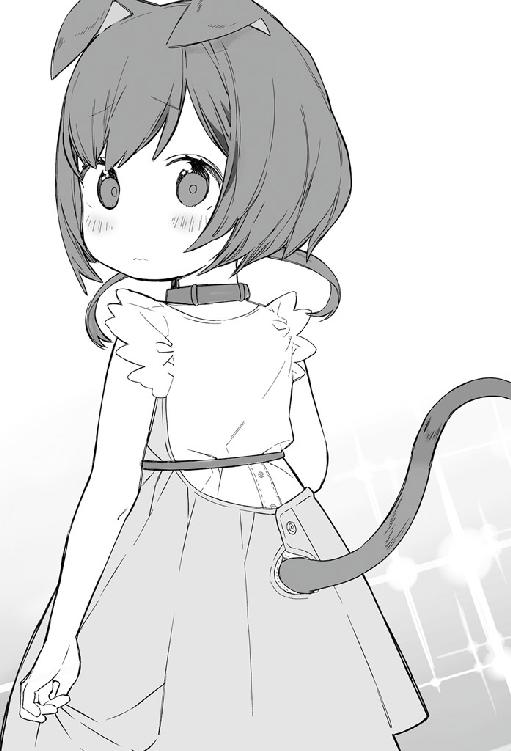
「私、パルマ......」
「じゃあパルマ、一緒にホールに戻ろうか。あんまり戻るのが遅いと、お父さんも心配しちゃうしね」
「うんっ」
パルマが笑顔で大きく頷く。
「ホールに戻ったら、一緒にお父さん探してあげるよ」
「ありがとうカインくん」
（やばい。可愛すぎる。猫耳撫でたい）
カインは頭に伸ばしたい手を、必死にこらえながらパルマの横を歩く。
視線はパルマの猫耳に夢中になりながら。
パルマを案内しながら一緒にホールに戻ると、人々がグラスを傾けながら雑談に花をさかせていた。
「お父さん、どこらへんにいるかなー？」
一緒に歩いていると後ろから声を掛けられた。
「あ、パルマ。戻ってこないから心配したんだよ」
振り向くと、同じ猫耳をした優しそうな男性が立っていた。
「あ、お父さん。迷っちゃってカインくんに案内してもらったの」
「それはどうも、ありが──」
お礼の途中で、パルマの父親が止まった。
父親の額からは冷や汗が流れる。
「──もしかして、カイン様ですよね」
「はい、そうです。初めまして。カイン・フォン・シルフォードです。今日はお祝いに来てくれてありがとうございます」
カインは丁寧に頭を下げる。
「いえいえ。こちらこそ申し訳ありません。うちのパルマが、お世話になってしまって」
隣でパルマは、理解できてないようで首を傾げている。
（うわ。めっちゃ可愛い......）
「パルマ！ この方は今日の主役のカイン様だぞ。失礼はなかったか？？」
「えっ、カインくんって貴族様だったの？ そういえば、豪華な服着ているなって思っていたけど。今日来ている人は、みんな豪華な服を着ているからわからなかった」
「パルマ！ カインくんなんて呼んだらいけません。辺境伯の御子息様なんだからカイン様とお呼びしなさい」
「いやいや、気にしないでください。まだ、お互い子供ですから。今まで屋敷に籠っていたせいで、同年代の人と話す機会がなかったもので。よかったらパルマ、友達になってくれるかな？」
「うん！ カインく......様なら喜んで」
「ありがとう」
（いつかその猫耳を、撫でさせてほしいです）
パルマの笑顔に癒されるが、カインの視線はピクピクと動く猫耳に釘付けだったのは言うまでもない。
「そういえばご挨拶がまだでした。私はこのグラシア領にてサラカーン商会を営んでおります、サビノスと申します。パルマ共々、よろしくお願いいたします」
サビノスは丁寧に頭を下げる。
先ほどの宝石を散りばめた商人より、ずっといい感じの人だとカインは感じた。
「こちらこそ。まだ子供で何もできませんが、何かありましたらよろしくお願いしますね。そろそろ戻らないといけないので。サビノスさん、パルマまたよろしくね」
パルマに手を振ってから、ガルムのもとに戻る。
そのあとも何人か紹介されたが、そこまで記憶に残っていない。
高校生だったとしても、これだけの人数は一気に憶えることはできないだろう。五歳に紹介しても、当然そこまでわかるはずもなかった。
お披露目会も無事に終わり、来賓もすでに帰った後。
家族用のリビングで、のんびりと紅茶を飲んでいたら、ガルムが入ってきた。
「今日はお疲れだったな。楽しいことでもあったか？ 顔がにやけているぞ」
ガルムはカインの対面のソファーに座った。
「はい、父上。今日初めて、猫の獣人の方と会いました。女の子がいたのですが可愛かったです」
「五歳で色気づきやがって、まったく」
ガルムもカインの神童ぶりが発揮され、今日来た来客からの評判もよく上機嫌の様子だ。
「色気づくなら、成人してからにしろよ。カインは三男だからうちを継ぐことはできんからな、成人したら自分の道を見つけるといい。何かするなら手助けはしてやる」
カインのステータスを知っているガルムとすれば、どの職種に就こうとも成功すると思っている。
「はい、わかっています。僕は冒険者になりたいと思っていますから」
ガルムを見て真剣に答えた。
ガルムは少し悩んだ顔を見せたが、すぐに笑顔になった。
「宮廷魔術師や騎士や商人ではなく、冒険者か。それもいいかもな。サラも元々は冒険者だったしな」
「はい、冒険者になって、この国の王都や他の地域、できれば、他の国も巡ってみたいです」
「わかった。冒険者になれるのは十二歳からだが、十歳になったら貴族の役目として一度、王都に行く必要がある。それまで剣と魔法の家庭教師が必要だな。こちらで人は探しておこう」
「父上、ありがとうございます」
時間も遅くなったことで、ガルムに挨拶をしてから部屋に戻った。
服を脱いでシルビアに渡していき、寝間着に着替えてからベッドに潜り込んだ。
「カイン様、本日はお疲れさまでした。やはりカイン様は天才です！ 将来が楽しみです」
シルビアも今日の挨拶を聞いていたようで、未だに興奮している。
「シルビア、そんなに乗せないでよ。それにしても疲れたよ。今日はゆっくり休むね。おやすみ」
「おやすみなさいませ、カイン様」
シルビアは脱いだ服を、まとめて持ち、部屋を出て行った。
（それにしてもやはり猫耳サイコー！）
今日会ったパルマの猫耳を考えながら、ベッドの中で眠りについたのだった。
５ 家庭教師
家庭教師が来る日となった。
お披露目会から一か月が経ち、ガルムが手配していた家庭教師がついに見つかったのだ。
昼になり、カインはわくわくして待っていると、シルビアが呼びに来た。
「カイン様、家庭教師になる冒険者がお見えになられています。応接室にご案内しております」
「ありがとうシルビア、今からいくよ」
応接室の扉をノックしてから、シルビアが扉を開ける。
部屋に入ると赤髪をポニーテールのように後ろで縛った革鎧の軽装をした二十代前半に見える女性剣士と、頭までフードをかぶったローブを着た女性魔術師が座っていた。
カインは対面に座り挨拶をする。
「初めまして、カイン・フォン・シルフォードです。先日五歳になりました。よろしくお願いします」
カインの挨拶に、女性剣士のほうが、最初に答えてくれた。
「初めまして。私はこのグラシア領で冒険者をしているミリィでしゅ。あ、です。片手剣と盾を持って前衛をしています。Ｄランクです。隣にいるのはニーナです」
ミリィは慣れない敬語を使い、所々噛みながらも挨拶をする。
「ん......ニーナ、よろしく」
「こら！ ニーナ！ 貴族様のところに来たら敬語使えって言っておいたでしょ！」
ミリィに責められるがニーナは敬語を使う気はないらしく、フードを被ったまま挨拶をする。
「ミリィ先生と、ニーナ先生ですね。僕の先生になるのですから、敬語は使わなくていいですよ。これからよろしくお願いします」
カインの言葉に、ミリィは緊張した顔つきから笑顔になる。
「ふぅ、そう言ってもらえると助かるわ。ニーナは人見知りだから、いつもこんな感じ。ニーナも同じＤランクよ。ニーナ！ こんな時くらいフード取りなさい」
ミリィがニーナのフードを後ろに下げる。
肩につく位の緑髪の美女だ。しかも耳が長い。
（おぉ、エルフだ。初めて見た）
しかし、すぐにニーナはフードを被ってしまう。
「まったくニーナは仕方ないわね！ それにしても、領主様のご子息の家庭教師って言ったけど、まだ五歳でしょ？ 必要あるの？」
ミリィからの質問に、カインは真剣な顔をして、ミリィを見つめる。
「僕は三男ですから、この家を継ぐわけではありません。父には将来、冒険者になりたいと伝えてあります」
「ふーん。だから冒険者ギルドに依頼がきたのね。まぁわかったわ。契約では週に二回、剣術と魔術が各一回ね。宿題も出すからやっておくのよ」
「わかりました」
ミリィの話にカインは頷いた。
「さっそく訓練場に行きましょうか。ニーナ行くわよ」
「ん。わかった」
シルビアに案内され、三人は裏庭にある訓練場にきた。辺境伯の領都なだけあり、兵士が常駐しているため訓練場が併設されている。訓練用の剣は用意してあるが、大人用なので、カインは自分専用の木剣を持っていく。
「まずは剣術からね。見てあげるから素振りをやってごらん。悪いところはその都度注意するから」
剣道のような構えで木剣を正面に持つ、スキルに武術があるので木剣が自然と動く。
振り下ろし、切り上げ、払い、他にも色々とイメージのまま木剣を振っていく。
一通り終わらせて、ミリィのほうを向くと、ミリィは口を開いて愕然としていた。
「なんなのカイン君！ すごすぎて注意することなんて何もないわよ！」
「ミリィより強いかも......」
ボソッと言うニーナにミリィが鋭く反応する。
「五歳にはまだ負けないわよっ！ カイン君！ そこまで出来るなら、模擬戦をメインに教えるわ」
「はい、わかりました。ミリィ先生」
お互いに五メートルほど距離を取り、向き合って木剣を構えた。
初めての対人戦で、武神の加護レベル10を全開で発揮したらまずいと思ったカインは、二割程度の力で攻めていくことにし、問題なければ少しずつ上げていくつもりでいた。
「まずは見てあげるから、かかっておいで」
ミリィは余裕をもって木剣を構える。
「いきます！」
足に力を込めて飛び出し、五メートルの距離を一瞬で詰める。
木剣を振り下ろすが、ギリギリのところでミリィが持っている木剣で抑えた。
「カイン君、本当に五歳？ ありえないんだけど」
「本当ですよ。つい先日洗礼を受けたばかりですから」
「今でも、十分に冒険者としてやっていけるくらい強いわよ」
カインはひたすら剣を振り続ける。
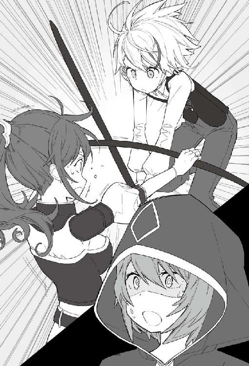
ミリィは躱したり木剣で受けたりするが、結構ギリギリの状態が続いた。
「ちょっと待って、一度休憩。このままやっていたら私が持たないわ」
「はいっ！ わかりました」
お互い一度距離をとる。カインは特に問題はなかったが、ミリィはすでに肩で息をしていた。
「カイン君、武神の加護持ちね。こんな鋭い剣術が出来るなんて五歳ではありえないわ」
「本当は、あまりステータスのことは父上に言うなと言われていますが、先生なら問題ないと思います。たしかに武神の加護をもっています」
「やっぱりね、一日剣術だけで私が付き合うのは無理だわ。方針を変えましょう」
肩で息をしていたミリィは呼吸を整えながら答える。
「毎回、私とニーナが半分ずつね。前半が私で、終わってからニーナに魔法を教えてもらいなさい。ちょっと休憩したいから、ニーナ任せた」
「ん。任された」
ニーナは常にフードを被っており、表情がいまいちわからない。エルフは魔法に適正が強いと本で読んだことがあった。
「私は、魔法神の加護レベル３がある。まかせて。まずは魔法の基礎を教える」
カインはその場で座って、休憩しながらニーナの話を聞く。
「まずは、魔力を感じるところから始める」
ニーナは、魔法の本に出ている最初の基礎から教えていくつもりでいた。
「あ、基礎はもうできます」
「......もうできるの？ 洗礼を受けたばかりなのに？ もしかして魔法ももう使える？」
「本で勉強したので、初級編はすぐに使えるようになりました」
「属性は何？ 私は風、土、水、光の四属性。火はエルフと相性が悪いの。カイン君の属性に合わせて教えるわ」
基本の四属性と光魔法について教えてもらいたいと思っていたカインは正直に答える。
「──全属性です」
「「......」」
ミリィもニーナも固まっている。
「先生？？」
「──ありえない。全属性なんて賢者クラスよ。今の宮廷魔術師だって全属性使える人なんていない。ちょっと見せてみて。初級の『水球』は使える？ 使えるなら見せて」
「出来ます。やってみますね」
カインは訓練場の的に向かい右手を上に向ける。
『水球』
魔法を唱えると、右手の上には、一メートルの水の塊ができあがる。
カインはそのまま的に向けて放った。水の塊は勢いよく飛んでいき的を破壊する。
「こんな感じでいいですか？」
振り向くと、先ほどと同じように固まっている二人がいる。
「ニーナ先生？」
愕然として固まっているニーナが動きはじめた。
「......無詠唱。属性魔法のレベルが高い。しかもその規模なら加護も持っている。天才？ 五歳ではありえない」
カインは知らないが、無詠唱を使用するのには長い間修行をし、詠唱を短縮していって辿り着く魔法の境地でもある。それを目の前で洗礼を受けたばかりの五歳児が行えば驚かないはずはない。
「私たち、教えることないかもしれないわ。剣技も魔法もすでに一流に近いし。訓練場でできることなんて限られている」
汗を手でぬぐいながらミリィが答える。
「あ、先生、タオルあります」
アイテムボックスからタオルを二枚取り出しミリィとニーナに手渡す。
「「えっ」」
「ん？」
カインはなんで驚いているのかわからずに首をかしげる。
「......アイテムボックス」
「あっ！！！」
つい流れでやってしまったが、アイテムボックスのスキルもレアだったことをすっかり忘れていた。
「もう何があっても驚かないわ。いちいち驚いていたらキリがない」
「ん。そう。カイン君天才」
二人は呆れるしかなかった。
「先生たちにお願いがあります。僕のステータスは父からは、他言無用と言われていますので、内緒でお願いします。あと、生まれてから五年間ずっと領都の屋敷の中で生活していていました。初めて外に出たのは、先日の洗礼のために教会に行っただけで、まだ外に出たことないのです。魔法の練習と説明して、領都の外に連れて行って欲しいです」
「カイン君、まだ外に出たことないのね。たしかにこの訓練場で中級以上の魔法を使ったら、大変なことになる。領主様に説明して、許可がもらえたら連れて行ってあげるわ」
「ほんとですか!? うれしい!! 街も見てみたいし、冒険者ギルドも行ってみたいです!!」
カインは目を輝かせて喜んだ。
「これは領主様に説明するしかないわね」
呆れた顔で溜息をつくミリィだった。
訓練を一時中断し、三人は今、応接室にいる。両隣にはガルムとサラがいて、対面にはミリィとニーナが座っている。
「領主様、カイン様は剣技もベテラン冒険者クラスで、魔法も初級すべてが使えます。五歳として考えてみれば天才としか言いようがありません。これから中級を教えるためには、訓練場では出来ません。領都の外の草原地帯で、練習をしたいと思っております。許可をいただけますか」
ミリィが説明をしていく。
ニーナは相変わらずフードを被ったまま無言だ。
ミリィの説明にガルムは頭を抱えた。
ステータスを見たときから、そうなるとは思っていた。
ただ、家庭教師をつけた初日から、そこまで言われるとは思っていなかった。
そんなガルムとは対照的にサラは自分の子供が天才と呼ばれて、喜んでカインの頭を撫でている。
「──わかった。領都の外に出ることを許す。但し、外泊は認めん。必ず日が沈む前に屋敷まで戻すことが条件だ。領都の外でも森の入口までとする。奥まで連れて行くことは禁止だ」
ガルムに認められて、カインは笑顔を浮かべる。
「カインが外に出るなら、一応武器と防具も用意しないとね！ さすが私の息子なだけあるわ」
サラはご機嫌である。
やっと領都の外に出られる許可が出て、喜んでいたカインであった。
閑話 沙織の気持ち
せっかく和也誘ったのに、来てくれなかったし。
本当は女の子三人だけど、和也が来てくれたなら途中で別れて、二人でデートするつもりだったのに。
和也とは、小学生から高校までずっと一緒に育った。
小学生のときは、よく遊んでいたけど、最近遊んでくれなくなった。私としては、昔と同じように居たかっただけなのに。
ずっと好きだったけど、告白は出来ていなかったりする。
仕方ないから、友達と三人で浴衣を着て花火を見にいった。隣に和也がいてくれたならもっと楽しかったのに。
三人で浴衣姿の写真をとって和也に送っておいた。
『浴衣姿見られなくて残念！ かわいいだろ』ってメッセージをつけて。
来年こそは一緒に行ってやる！
花火が終わって、友達とも別れて家に帰ると、家の前になぜかパトカーが停まっていた。
何かあったの!?
浴衣姿だったけど、急いで駆けていき玄関の扉を開ける。
玄関には、浴衣姿で泣いている愛美と、警察官がいて両親に説明をしていた。
「愛美！ 何があったの??」
愛美が気づいてこちらを向く。
「──和也兄さんが」
そのまま、また泣き崩れた。
代わりに、警察官が説明を始める。
「実は、二丁目のコンビニで通り魔が発生しまして、眞鍋愛美さんが友人といるところを襲われそうになった時、男性が庇ってくれ代わりに負傷されたのですが、その男性が、知り合いだったという話でして」
「その知り合いっていうのは？ もしかして......」
「沙織、よく聞きなさい。和也君よ。愛美と友達を庇って、犯人に立ち向かったの」
お母さんが代わりに答えてくれる。すでにお母さんの顔も涙でボロボロになっている。
「そ、そ、それで和也は？ 椎名和也は無事なのですか!?」
ひと呼吸おきながら、警察官が言いにくそうな顔をして話し始めた。
「──残念ですが、病院に運ばれたときには、すでに──心停止状態でした」
目の前が真っ白になった。
今日、さっきまでメッセージのやりとりをしていたのに。
「お姉ちゃん......ごめんなさい。和也兄さんに『逃げろ！』って言われたけど、怖くて動けなかったの。そしたらわたしたちを庇うために、一人で犯人に向かっていって......」
愛美は泣きながら謝ってくる。
思わず愛美を抱きしめた。
「和也が助けてくれたんだね。愛美、無事でよかったよ......」
警察官が帰ったあとの記憶はない。
そのままベッドに倒れ、泣き疲れて眠ってしまったようだ。
学校は夏休み中だったが、臨時集会があり生徒が集められ詳細が報告されていた。
もちろんテレビのニュースでも大々的に取り上げられた。
椎名和也君は、通り魔から女子中学生を守るために、自ら犯人に立ち向かったとか。
壇上で校長は、ハンカチで涙を拭きながら説明している。
教室に戻ると、和也の机には花瓶が置かれ花が飾られていた。
和也がもういないことを実感し、教室でも友達と泣いた。
そして数日が経ち、病院から戻ってきた和也の葬儀が行われた。
棺の中で眠っている和也の顔は、まるで生きているかのように綺麗だった。
棺に抱き着いて泣いてしまったが、お母さんに肩を借りてなんとか帰ってこれた。
愛美も葬儀の間、ずっと隣で泣いていた。
沙織はベッドに寝ころびながら、天井を眺める。
「和也、愛美を救ってくれてありがとう。花火に来ていたなら、もしかしたら愛美が危なかったかもしれない。──告白できなかったけど和也のことずっと好きだよ」
教室で和也を隠し撮りした写真を眺めながら一人だけの部屋で呟いた。
６ 初めての冒険
初めて、教会以外で外に出る許可が出た。
もちろん、ミリィとニーナの護衛付きという条件となっているが。
領都の街壁の外に出るということで、サラからは子供用の革鎧とローブ、武器としてショートソードを与えられた。
部屋で貰った装備を身に着けていく。
「カイン様、とっても素敵ですよ」
いつでも褒めてくれるのは、メイドのシルビアだ。
「だけど街壁周りでも危ないですから、十分注意してくださいね」
「うん、わかっているよ。ケガでもしたら、外に出してもらえなくなりそうだし気を付けるよ」
装備を調えて外にでると、すでにサラとレイネが待っていた。
「カイン、よく似合っているわ。魔法の練習とはいえ外には魔物がいるのよ。気をつけなさい」
「カインくん、外に出たときの話聞かせてね！」
「母上、それでは行ってきます。夕方までには戻りますから」
二人に挨拶をし、ミリィとニーナの後を歩いていく。
敷地の門を潜り、二人に連れられて領都を歩くと、大通りは石畳で舗装され、商店や屋台が並んでいる。
外にいる人は賑やかで、この街が繁栄しているのが良くわかる。グラシア領は安定した領地経営が行われていると納得しつつ、カインは目新しいものばかりに目がいきキョロキョロと見回していた。
「そんなに周りをキョロキョロしていたら、田舎からきた人みたいだぞ。親が領主様なのだから、堂々としていればいいのに」
「いえ、領主の息子といっても三男ですからね。成人したら冒険者になるつもりですし」
「まだ五歳なのに、何か子供らしくないな。その位の年で、親が領主様ならば、もっといばっているイメージしかないのだが」
「両親にも、領民あっての貴族だからと教育を受けていましたからね。領民が栄えるからこそ税収があがる。それで僕たち貴族は食べさせてもらっているのだと」
「ここの領主様は、善政を敷いていることで有名だからな。私たちも他の街からここに移って来たのよ。治安もいいし、森も近くにあるから、ギルドの依頼も多いし」
「うん。ここ住みやすい。食事も美味しいし」
二人ともこの街が良いと思っている。ガルムの政策が上手く回っているという証拠だろう。
カインは二人の答えに満足しながら歩いていく。
「あ、街の外に出るなら一度ギルドに寄ってからでいいかしら。もしかしたら外の情報もあるかもしれないし」
「ギルド行ってみたいです！」
ギルドと聞きカインは目を輝かせ即答する。
街を歩いていくと、盾に剣が交差している看板が見えた。木造だが三階建てとなっており、それなりに大きな建物だ。
三人は扉を開けて中に入っていく。
正面には受付があり、右側には依頼と思われる用紙が掲示板に貼られていた。
左側には、待合スペースと食事処みたいなところがあり、朝からすでに飲んでいる冒険者たちもいる。
そのまま三人で正面の受付まで進む。
「ルディ、ちょっと聞きたいけどいいかしら」
犬耳の獣人、受付嬢のルディが、顔を上げ笑顔で答えてくる。
（犬耳だ......フワフワとしてそう......）
カインのそんな気持ちを他所に、ミリィは気にした様子もなくルディに話しかける。
「あら、ミリィじゃない。今日はどうしたの？」
「街壁の外で訓練でもしようと思っていてね、魔物が出ているのか確認にきただけよ」
「それならホーンラビットと、たまにウルフが出ているだけで、目新しい情報はないわよ。それにしても今日は可愛らしい子を連れているのね。弟子でもとったの？」
ミリィは受付嬢のルディの近くまで寄り小声で話す。
「今、依頼を受けている、領主様の御子息だ。訓練のために、これから外にでるつもりだ」
ルディは慌てて立ち上がり、カインに向かって頭を下げる。
冒険者の恰好した子供なのだ、まさか領主の子供だとは思っていなかったようだ。
「あ、これは失礼しました。ご子息様とは知らずに、私は冒険者ギルドで受付をしております、ルディといいます」
「カイン・フォン・シルフォードです。まだ五歳で冒険者登録はできませんが、十二歳になったら冒険者になる予定です。その時はよろしくお願いしますね」
カインの笑顔でルディも緊張を緩めて笑顔で答える。
「あら、礼儀正しいのね。気軽にルディって呼んでくださいね」
「それじゃ、行ってくるわ」
ミリィたちは、そのままギルドの出口に向かうところを、食事処で飲んでいる冒険者たちの一人から呼び止められた。
「おい！ ミリィじゃねぇか。なんだよ、ガキなんて連れて。子守なんてしてないで、こっちで一緒に飲もうぜ」
「そうそう。ガキなんて放っておいてこっちで飲もうぜ！ そのまま夜も付き合えよ。満足させてやっからよ」
「「ギャッハッハッハッハッ」」
一緒に飲んでいる冒険者たちも悪ノリして笑う。
ミリィとニーナは酔った冒険者たちに嫌な顔を向けた。
「私たちは今、依頼中なの。酌相手が欲しいなら娼館でもいったら」
興味がなさそうに言葉を返し、そのまま出ようとすると、一人の男がニーナの腕を掴んできた。
「俺たちの言うこと聞けねぇのかよ？」
「あなたたち離しないよ」
ミリィが酔った男に食って掛かる。
「あ？ Ｃランクのクロス様に文句あるのかよ？ お前らはＤランクだろ？ 上の言うことを聞いて酌すればいいんだよ！」
（なんかテンプレみたいのがきたぁぁぁ!!）
いかにもテンプレ的な絡みに、カインは思わずウキウキと心が躍ってしまった。
だが、このままではいつまで経っても外に出ることが出来ない。もしかしたら訓練が中止になる可能性もあった。
「すいません。これから一緒に外に出るので、離してもらえますか」
カインは、すっと前に出て、ニーナを掴んでいる男の腕を叩く。
武神の加護に、体術スキルももっている。とても五歳児とは思えない力で叩かれた腕はニーナの腕を手放した。
「いてぇぇ、てめぇガキのくせになにしやがる!! てめぇは許さねぇ。生意気なガキは教育してやるよ！」
腕を叩かれたクロスは顔を真っ赤にし、カインに殴りかかった。
カインは体術を駆使し、寸前で一歩横に避け、そのまま相手の懐に入り込み、膝の内側に蹴りを入れる。子供に拳を躱されたことと、蹴りによる痛みに苦痛の顔をしたクロスが激昂した。
「このガキ絶対許さん！ 死ねやっ!!」
鞘から剣を抜き、カインに切りかかった。
「あぶないっ！！！！」
ミリィが叫ぶが、飲んでいるせいか、剣筋も遅い。カインは簡単に避けた。
鞘についたままのショートソードを引き抜き、鞘で相手の顎を打つ。
顎を打たれて意識の飛んだクロスは、白目を剥いてそのまま仰向けに倒れた。
周りは茫然である。飲んでいるとはいえ、Ｃランクの冒険者が、まだ幼い子供に倒されたのだ。
「何をしている！！！」
突然の大声で、そこにいる全員が声を出したほうに顔を向けた。
そこには、倒れている冒険者たちとはまったく違う四十代くらいで坊主頭の男が立っていた。
熟練度が滲みでるほどのオーラを放っている。
「ギルドマスター！」
受付嬢のルディが声を上げた。
「ルディ、何があった？ 説明しろ」
ルディは、今までにあったことをギルドマスターに説明していく。
「なるほど、とりあえずそこに寝ているやつを運んでおけ。あとで性根を鍛え直してやる」
そして、カインの方を向きにやりと笑う。
「領主の三男坊か、将来、冒険者になるなら歓迎してやる。五歳でそれだけ強ければ、Ｓランクにもなれるかもしれんな」
カインの頭を撫でたあと、豪快に笑いながら、奥に消えて行った。
気絶している冒険者は奥から職員が来て留置所へ運んでいった。
「カイン様、申し訳ありません。うちのギルマスはいつもあんな感じなので」
申し訳なさそうに、受付嬢のルディが頭を下げる。
「いいですよ。気さくなギルドマスターでいいですね。私はケガもありませんし、それに早く外に出たかっただけですし」
「カイン君ありがとう」
ニーナが膝をついてカインを抱きしめた。
急に抱きしめられたことに驚き、そしてちょっといい匂いに、カインは思わずにやけてしまう。
エルフだけに、ちょっとスレンダーで、胸のボリュームが足りないのが残念だが。
「話は終わったし、とりあえず外に行こう」
ミリィの言葉に二人は頷いた。ギルドを出て、三人で門に向かって歩く。
「それにしてもカイン、剣も魔法も使えるのに体術もできるんだね」
「カイン君。強い」
「家で本を読みながら特訓しました！」
「本読んで特訓したくらいで、Ｃランクの冒険者が簡単に負けるもんか。ただ、外に出たら何が出るかわからないから注意するんだよ」
「ミリィ先生、わかりました」
「私がカイン君を守る。安心して」
ニーナは先ほど庇ってくれたことが嬉しかったらしく、カインを守ると断言している。ミリィと違って、あまり余計な事は話さないけど優しさをカインは感じた。
「ニーナ先生ありがとう！」
満面の笑みをニーナに返すと、少し赤くなった顔を隠すようにフードを被りなおした。
外についての注意点を話しながら門を潜っていく。門番の衛兵が子供を連れていることを咎めようとするが、ミリィが話をつけてくれた。話を聞いた衛兵はカインの素性を知り、姿勢を正し敬礼をする。
さすがに、衛兵が領主の息子を止めることなど出来ない。
領都の門はかなり立派な造りになっていて、街壁は五メートル位の高さで街が一周囲われている。
これはすぐ近くに魔物の森があり、氾濫した際に領民を守るためだ。
領門を潜ると、街道がまっすぐに整備され、左右には膝までの高さの草原が広がっている。
産まれて五年、カインとしての記憶を持ってから二年経ち、初めての冒険に胸を躍らせる。
三人は、街道をのんびりと進んでいく。
カインは初めての外ということで、周りをキョロキョロと見渡しながら歩いていく。
一時間ほど歩いただろうか、先頭を歩くミリィが急に止まる。
「これくらい距離があれば、魔法の訓練もできるわね」
ミリィを先頭に街道を外れ、草原地帯に入っていく。
「ここで練習しましょう」
「ミリィその前に、ごはん......」
冒険者ギルドで余計な事があったおかげで太陽はすでに高くまで上がっていた。
「そうね、食事を済ませてから訓練しましょうか」
ミリィが背中に背負っていたリュックから弁当箱を三つ取り出す。
「いつも泊まっている宿で、弁当を作ってもらったのよ。ここのご飯は美味しいから」
「うん。青銀の鷲亭の料理は最高」
ニーナも同調している。
「それは楽しみですねっ！」
「あんまり満腹まで食べて、動けなくならないようにね」
ミリィがそう言いながら、カインに弁当を手渡した。
受け取った弁当箱を開けると、そこにはサンドウィッチが数種類入っていた。
カインはベーコンと野菜が挟まれた一つを取り出し口に運ぶ。
「これ本当に美味しいですね」
勢いよく食べ始めたカインに、ニーナがコップに魔法で水を注いで渡した。
「急いで食べると詰まらせる」
「ニーナ先生ありがとう」
コップを受け取り、口に入れていたものを水で流し込む。
「ニーナが水魔法使えるから便利よね。私は火魔法と身体強化くらいしか魔法使えないからなぁ。だから剣術がメインになっているし」
「......ミリィは脳筋」
「うるさいっ！」
二人のことをいいコンビだと思い、カインは笑みを浮かべた。
食事を済ませ、空になった弁当箱をリュックに仕舞いなおす。
「そろそろ訓練をしましょうか。ニーナ任せたわよ」
「任された。カイン君、最初は水魔法から。あそこにある岩を狙って放ってみて」
二十メートルほど離れたところにある突き出した二メートルほどの岩を指す。
「わかりました。ニーナ先生」
カインは構えて右手を前に出す。
『水球』
一メートルくらいの水球が打ち出される。
「次は火魔法で」
『火球』
また一メートルくらいの火玉が打ち出される。
「次は土魔法」
『岩弾』
小さい岩がカインの手の先に現れ、岩に向かって飛んでいき、岩に当たって弾ける。
続けて風魔法も岩に向かって放つ。
「初級魔法は特に問題ない。次は中級魔法が見てみたい。好きなのを出してみて」
本では読んでいたが、初めて放つ中級魔法にカインは意気込んだ。
「火魔法を使ってみますね」
『火壁』
高さ五メートル、横幅十メートルの炎の壁が立ち上がり、波のように岩に向かって着弾する。尋常ではない威力にカインも驚きを隠せない。
「......とても五歳とは思えない。初級の威力もそうだけど、中級でも威力がまったく違う」
「まったくよ。五歳で中級まで魔法が使えるだけでもどうかしているのに。しかも威力も桁違いときた」
「魔力量が少なくなっただるさはない？」
「まったく問題ありません」
「......魔力量も一流」
「そうみたいね......」
カインの放つ魔法の威力と魔力量に二人も呆れるしかなかった。
その時、近くの草がガサガサと揺れた。
「ニーナ!!」
「わかってる」
「カイン、何か近くにいるわ。注意しなさい」
カインはミリィの声に思わず身構えた。
草むらから顔を出したのは、角の生えたうさぎだ。膝丈程度の大きさで、顔を出し辺りを見回している。
「ホーンラビットね。一匹しかいないみたいだし、カイン、魔法で仕留めてみる？」
「はい！ ぜひともやりたいです」
「革も肉も売れるから、火魔法はだめよ」
「わかりました」
ホーンラビットが顔を出している方に構える。
どの魔法にしようか悩んだ後、風魔法を選択し威力を加減しながら魔法を放つ。
『真空弾』
勢いよく空気の弾丸が飛んでいき、ホーンラビットの体に直撃し貫通していく。
そのままホーンラビットは倒れ痙攣した後、息絶えた。
「やったっ！」
「初めてにしては上出来。ただ威力は桁違い」
「カイン、ホーンラビットそのまま持って帰るといいわ」
「いいのですか？ 母上とレイネ姉さまに是非見せたいです」
ホーンラビットに近づきアイテムボックスに仕舞う。
「アイテムボックスあるといいわね。私も欲しいわ。もうちょっと貯金できたら、魔法袋を買いたいのよね」
「魔法袋なんてあるんですね。初めて聞きました」
「レアな空間魔法特性もっている魔法具屋で売っているのよ。収納できる量によって値段はまったく違うけどね」
カインはいいことを聞いたと思った。アイテムボックスのスキルは商業神の加護が必要になり、冒険者にとってはレアだが、魔法袋はお金さえあれば持てる。目立たないようにするために、カモフラージュできそうだと、心のメモに書き込んだ。
「あと数匹探して狩っていこうか。ニーナ、探査できる？」
「ん。やってみる」
ニーナが杖を持ち呪文を唱える。
『我求める。我近くの敵を探し出せ、探査』
ニーナが杖を掲げ魔物がいる方向を差す。
「ここから三百メートルくらいのところに数匹いるみたい」
「ニーナ先生！ 今の魔法はなんですか？」
カインは知らない魔法に興味を示した。
「魔力を持っている魔物を探した。自分の魔力を薄く広げる感じ。ただ強さとかははっきりわらかない」
言われた通りに魔力を薄く広げるように伸ばしていく。
『我求める。我近くの敵を探し出せ。探査』
ニーナの言った方角から、魔物の存在が認識できた。
「ニーナ先生！ できました！ 魔物が五匹いたのがわかりました」
「......普通一回で出来ない。しかも方向的な感覚はわかるけど、何匹いるかまでは普通はわからない。本当に五歳？」
カインの常識外の魔法に溜息をつくニーナだった。
「カインのことは諦めが必要よ。それより狩りにいくよ」
ミリィはすでに剣を構え狩る気満々だ。
音を立てないよう静かに魔物に近寄っていく。
「五匹いるから、私とニーナで二匹ずつやるわ。カインは一匹受け持ちできる？」
「大丈夫です！」
ミリィは身体強化を自分自身に掛けて一気に走り出した。
身体強化を掛けたミリィはオリンピックの短距離選手より速いスピードでホーンラビットに近づき剣を一閃した。
ホーンラビットは、反応することも出来ずに首を刎ねられた。
「私も倒す」
『我求む。一閃する風の刃よ駆け抜けろ。真空刃』
ニーナの魔法も、ホーンラビットに一直線へ飛んでいき、首を刎ねる。
カインも受け持った一匹に向かう。
頭の中で真空の刃のイメージを思い浮かべる。
『真空刃』
手から離れた真空の刃が、ホーンラビットに向かっていく。
首に当たらなかったが、胴から真っ二つになった。
そして、勢いは止まらず数十メートルほど草木を刈り取りながら進んでから消えていった。
戦闘は一瞬のうちに終わった。
「ホーンラビットくらいなら特に問題ないわね。それにしても酷い威力よね。あそこの場所まで草が刈り取られているし......。それよりも早く血抜きしましょう。匂いにつられてウルフが寄ってくる前に処理しないと」
ニーナは魔法で地面に穴を開け、そこにホーンラビットを置き血抜きをする。
血が抜けたところで、カインがアイテムボックスに仕舞っていった。
「そろそろ帰りましょうか。遅くなると領主様に責められるわ」
「そうですね、ただでさえ初めての街の外なので両親も心配しているかもしれませんし」
荷物をまとめて帰り支度をし、三人でまた同じ道を戻っていく。
道中から見えるグラシア領都は、左右数キロに渡って高い街壁に囲まれており、初めて外から見る街をカインは感心しながら眺めた。
「外から見ると、領都は大きいですね。壁も高いし」
「帝国から砦の街を過ぎたら、次はこの街だからね。しかも隣にある魔物の森には魔物が沢山いるのよ。数十年前にも大氾濫が起きて、数百匹の魔物が出てきたと言われているわ」
カインは両親から話は聞いたことがあったが、そこまで詳しくは教えてもらえなかった。
「帰ったら書庫でも調べてみます」
三人で話しながら、門に着いた。
二人は門番にカードを見せながら門を潜っていく。
「入るときはギルドカードの提示か、住民タグを見せる必要があるのよ」
「僕、証明するの何も持ってないですよ？」
「いいのよ。出るときに領主様のご子息と説明してあるから」
「それならよかったです」
一人だけ止められたらどうしようかと考えていたが杞憂だった。三人は街中を歩き、領主の館に到着する。
「今日はこれで終わりね。また次も草原に出ましょうか」
「はいっ！ 外にでるの楽しいです」
「カインまたねっ！」
「カイン君また」
「またよろしくお願いします。今日はありがとうございました」
手を振りながら二人を見送ったカインは、顔を確認し門を開けてくれた門番にお礼を言い、屋敷に戻っていった。部屋に戻ってから防具を外し生活魔法で綺麗にしたあとに着替える。
「今日楽しかったな。ホーンラビット二匹しか倒せなかったからレベルなんて上がらないと思うけど」
魔法を使って魔物を倒したことにより変化があるかもしれないと思い、カインは軽い気持ちでステータスを開いた。
『ステータス』
【名前】カイン・フォン・シルフォード
【種族】人間族 【性別】男性 【年齢】五歳
【称号】辺境伯家三男 転生者 神の使徒 神童
【レベル】８
【体力】３，１８０／３，１８０
【魔力】２５４，８９０／２５４，８９０
【能力】ＳＳ
【魔法】
創造魔法レベル10 火魔法レベル10 風魔法レベル10
水魔法レベル10 土魔法レベル10 光魔法レベル10
闇魔法レベル10 時空魔法レベル10 生活魔法
【スキル】
鑑定レベル10 アイテムボックスレベル10 武術レベル10
体術レベル10 物理耐性レベル10 魔法耐性レベル10
【加護】
創造神の加護レベル10 生命神の加護レベル10 魔法神の加護レベル10
大地神の加護レベル10 武神の加護レベル10 技能神の加護レベル10
商業神の加護レベル10
朝までレベル１だったはずが、すでに８まで上がっていた。ホーンラビットを二匹しか倒してないはずなのに。
しかも体力も魔力も常識では考えられないほど上昇していた。
以前、ガルムから説明を受けたのは、魔力量が一万程度で宮廷魔術師が務まると聞いていが、表示されている魔力はすでに二十万を超えている。
（ますます人外認定されちゃうよっ！！！）
またステータスを見つめながら、崩れ落ちるカインであった。
家庭教師の授業は週に二度と決まっているので、カインは日々の勉強を早々に済ませ、部屋でステータスの確認と魔法の訓練に充てることにした。
「創造魔法って言ってもどんなことができるのだろ」
『ステータス』
再度唱えて表示されたステータスは、人外と言えるほどのステータスとなっており、やはり何度確認しても、ありえない体力と魔力の増加量にカインは焦燥感を感じる。
すでに能力に関してもSSになっていた。
確かに草原で戦闘は行ったが、常識的に考えてそこまでレベルが上がるのはおかしいと感じたカインは自分のステータスを一つ一つ確認していった。
目の前に表示されている、ステータス画面の称号部分を指先で触れてみた。
【称号】
辺境伯家三男
▽グラシア領ガルム・フォン・シルフォード・グラシアの三男
「おっ、解説が出ている。次だ」
転生者
▽異世界の記憶を持っている者。知力にプラスされる。
神の使徒
▽経験値取得が百倍になる。レベルアップ時のステータス上昇率が百倍になる。教会で神の声が聴ける。
神童
▽幼少期に驚異的なほど優秀な能力を持つ者。
【能力】
筋力・体力・知力・敏速・器用・魔法行使力の平均値
▽筋力 Ｓ
▽体力 Ｓ
▽知力 SS
▽敏速 SS
▽器用 SS
▽魔法行使力 ＳＳＳ
「......神の使徒が異常なレベルの上がり方をした原因か......。って何、百倍って。しかも神の声が聴けるって。それに百倍×百倍って──一万倍!? そんな馬鹿な......」
創造神たちの顔が脳裏に浮かぶ。カインは頭を左右に振り、脳裏から神々の顔を消しステータスを確認していくことにした。
【魔法】
創造魔法レベル10
▽イメージすることにより、魔法を創造できる。創造の規模により魔力消費量が異なる。加護のランクにより消費量が削減される。レベル２（10％削減）レベル10（90％削減）
火魔法レベル10
▽全ての火魔法を行使することができる。
風魔法レベル10
▽全ての風魔法を行使することができる。
（全ての魔法が使えるってことだよね。属性魔法についてはわかった）
光魔法レベル10
▽死者の蘇生が可能。欠損部位の回復ができる。全ての異常を回復できる。
（便利だけど、蘇生なんかしたら、教会に連れて行かれるわ！）
闇魔法レベル10
▽精神魔法・召喚魔法を行使することができる。召喚したものは影に潜むことができる。
（おぉ！ 召喚魔法！ これは是非やってみたい。ペットみたいなのが欲しい！）
時空魔法レベル10
▽瞬間移動ができる。アイテムボックスの付与ができる。
（あ、これなら魔法袋つくれるかも！ しかも瞬間移動！）
生活魔法
▽清潔清掃が使える。四元素の基礎魔法が使える。
解説を読んでカインは魔法の属性について理解した。
そして次にスキルを確認する。
鑑定レベル10
▽対象の物・人問わず詳細な情報が得られる。レベルにより鑑定できる範囲が変わる。
アイテムボックスレベル10
▽物を収容できる。但し生き物は不可。レベルによって入る量は異なる。レベル10（無制限）
武術レベル10
▽剣術・槍術など武器全般を統括したもの。持った武器の使い方が全て理解できる。
体術レベル10
▽素手の場合、体が自然に反応する。
物理耐性レベル10
▽物理攻撃を軽減する。
魔法耐性レベル10
▽魔法攻撃を軽減する。
加護については、本当は見たくなかった。レベル10というこの世界ではありえない加護を与えられているからだ。
カインは転生して適度な強さで冒険者をしながら生活が出来ればいいと思っていた。
一息つき、そして覚悟を決めて加護の欄に指先で触れた。
【加護】
創造神の加護
▽鑑定結果を表示できません。
生命神の加護
▽自然回復力強化・回復魔法強化。レベルにより強度が異なる。
魔法神の加護
▽魔法威力強化・継続時間強化・詠唱短縮強化・無詠唱・魔力消費軽減。レベルにより強度が異なる。
大地神の加護
▽植物魔法強化・地盤性質変化。レベルにより強度が異なる。
武神の加護
▽武技スキルの強化・スキル取得簡易化。レベルにより強度が異なる。
技能神の加護
▽器用度強化・作成順序鑑定。レベルにより強度が異なる。
商業神の加護
▽鑑定・アイテムボックス使用可能・契約魔法使用可能。レベルにより内容量が異なる。
創造神以外の加護については詳細が表示された。
創造神だけは何度触れても同じ表示がされる。
カインはすぐに諦め、教会でまた神と会うことになった時に聞くことにした。
ステータスについては理解ができた。そして一番納得したくないと思っていたことも理解した。
「どう考えても人外だよな、俺......」
このステータスは他の人には見せてはいけないと固く心に誓いステータス表示を閉じた。
カインは気持ちを切り替えた後、創造魔法による新しい魔法の創造を行うことにした。
「どんな魔法を作れるんだろ。うーーん、何ができる？ 何を知りたい？ そうだ、知りたいことを調べる魔法だ」
カインは頭の中でイメージを膨らませていく。
前世の記憶を辿り検索サイトを思い出す。
深呼吸して体の中にある魔力を循環させていく。
今世ではまだ外の世界を知らない。前世では趣味で読んでいたラノベの影響で色々と調べていたので、ファンタジー世界の事はそれなりに知っている。
『創造魔法：我求む。今世と前世の知識の全てを示せ。世界事典』
魔力が身体から消失すると同時に、視界の端に検索サイトに近い欄が表示された。
「おぉ、何か出た。これで出来たのかな？ 試してみるか」
検索欄に言葉をイメージしていく。
『検索：シルフォード家』
『検索結果：シルフォード家の生い立ち』
▽シルフォード家は現在のガルム・フォン・シルフォード・グラシアで八代目となる。初代は冒険者として街を襲ったドラゴンを倒し、名を馳せ男爵に叙爵された。五代目より辺境伯となりグラシア領を統治している。
「おぉ！ すげぇ！！！」
魔法が成功したことにより、カインは飛び上がった。そしてその瞬間に目眩が起きた。
（あ、ダメだ。魔力消費しすぎた）
身体のだるさを感じながらステータスを開いてみると、魔力量が二十万ほど減っていた。
新しい魔法を作るには相応な魔力が必要だとカインは理解し、そしてそのままベッドに倒れこみ、プッツリと意識を失った。
身体を揺すられたことで、意識が次第に戻っていき、瞼を開くと目の前にはシルビアの顔があった。
「カイン様、お休みになられていたようで。そろそろ夕食の準備が整います」
窓からは夕焼けの日差しが差し込んでおり、すでに夕方となっていたことを理解する。
創造魔法を完成させた為に、魔力を一気に消費したことが原因で意識を失ったようだった。
新しく魔法を創る時は気を付けないとな、とカインは心に刻んだ。
閑話 神々の雑談
カインが元の世界に戻ったあと、その場で神々の話が始まった。
テーブルの真ん中にはスクリーンが映し出され、その中にはカインが映っている。
「みんな見てみよ。カインが驚いておるわ！ フォッフォッフォ......グフォッ」
気管を詰まらせながらも、ゼノムが爆笑で腹を抱えている。
先ほどの威厳がある雰囲気とはまったく違う。
洗礼を終え、家に帰ってきて部屋に篭り自分のステータスを確認して頭を抱えているところが映し出されている。
「ゼノム様、全員が加護レベル10を与えてしまっていますけど、いいのですか？ この世界にはレベル５以上の加護があるとは知られていませんよ。他に誰もいませんし」
ライムが心配そうな声で話しかける。
「ライムよ、いいのじゃ。カインは今後、色々な災難に立ち向かうこととなる。我々の使徒としてな。今はワシの創造魔法で、隠蔽ができるように教えておいたから問題はないじゃろ。それにな......見ていると面白いしなっ！」
「そっちが本当の理由な気がします」
ライムがため息をつきながら呆れている。
「ユウヤのときは召喚魔法で来たんじゃったか。最後は王になったがカインの場合はどうなるかな」
ゼノムが呟く。
「カインも魔法バカのレノみたく魔法ばっかりやってないで、剣術や体術やっておけばいいのにな。やっぱり筋肉が大事だろ」
サーノスも笑いながらスクリーンを見ている。
「何言っているのよ。だからあんたは脳筋神とか言われているのよ」
レノがサーノスに向かって拳大の水球を放つ。
「そんな軟弱な魔法は効かん！ 筋肉は最高の防具だ！」
サーノスの体に当たった途端、水球は弾け飛んだ。
「これだから脳筋はイヤなのよ......」
レノは頬杖をつきながらため息をつく。
「まぁカインは魔法が好きみたいだし、隠蔽したステータスも私の加護だけレベル３にしているし、今後が楽しみだわ」
自分の加護だけレベル３と表示したことに、レノは優越感から笑みを浮かべた。
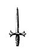
スクリーンに映し出されているのはギルドにいるカイン。
冒険者をノックダウンさせたとこだった。
「おぉ、カインがやりやがった。いいねぇ」
体術を使ったことで、満足そうな顔を浮かべるサーノス。
「あんなの魔法で一発なのに。みんなまとめて、吹き飛ばしちゃえばいいのに」
魔法を使ってくれなくて、不貞腐れているレノ。
「あそこで魔法つかったらまずいでしょぉ」
のんびりとしているベラが語りかける。
「まだまだ足りん。あやつが十六歳になるまでには国一番、いや、大陸一の強さになってないと困る。もちろんこの大陸に住む全ての生物の中でな......」
ゼノムが髭を触りながら話す。
「この先に何があるのですか？」
「この先カインの力が必要になるときがきっと来る......」
そう言いながらゼノムはカインが映っているスクリーンを見つめた。
「ついにカインがやりおった。大規模な創造魔法を使いおったわい」
「世界事典なんて無茶苦茶な魔法、創造させて良かったのですか？」
魔法神レノが焦ったように聞いてくる。魔法の内容を確認し、今世の事を全て調べられるともなれば、落ち着いてはいられない。それほどまでに信じられない魔法だからだ。
「いいのじゃ。少しくらいこの世界は発展してもいいと思うのじゃ。カインなら悪用はすまい」
「今回は、今世と前世の世界事典じゃからな。いくら加護の影響で消費量が軽減されるとはいえ、かなり魔力量を消費したみたいだな。そのまま倒れおった」
「カインの前世はかなり発展しているそうですしね。こっちに少しは娯楽を流通させて欲しいですよ」
パナムは商業神として、流通の発展を望んでいた。
「娯楽品が流行れば、その影響で色々な品が新しく作られることになるし、わしも賛成だ」
グリムもパナムの意見に賛同する。
「そのうち教会に祈りに来るだろう。その時に何か造るように指示しようかの」
「それはいいですねっ！ 来ないようなら神託を下ろしましょう」
カインがいない間に話はどんどん進んでいくのであった。
７ 創造魔法
カインは空いた時間を使い、四元素魔法以外の魔法を思索していた。創造魔法を使用したり、時空魔法も使用した。そして次第に使える魔法が増えていった。
『世界地図』
▽視界に地図を表示。
『思考行動加速』
▽思考能力が速くなる。
『並列思考』
▽脳内で違うことを並列に処理できる。
『転移』
▽頭で考えた箇所に瞬間移動できる。但し、一度行った場所にしか行けない。
『創造制作』
▽素材をイメージ通りの形に変化させる。素材がない場合は魔力を消費して創造する。
『複合魔法』
▽並列思考と同時使用により複数の元素魔法を複合できる。
三年を経過する頃には四元素魔法についても、すでにカインは超級まで習得していた。
但し、ミリィやニーナの前では上級までしか使ってはいない。
四元素魔法は初級・中級・上級・超級・帝級・神級に分かれており、帝級以上はこの世界で使える人は確認できていない。神級は神が使う魔法と分類されており、超級を使用できる魔術師はいるが、この世界では数える程しかいない。しかも魔力量の関係で一回使うのが限界だ。それでも各国がこぞって宮廷魔術師として囲い込みを行っている。
カインはすでに超級魔法を何度放ったとしても、魔力切れになることもない魔力量を持っていた。
ミリィとニーナが付き添い領都付近で一度、上級魔法を試した時は、加護による増幅が重なり轟音と火柱が領都の街壁の中からも見えるほどに立ち上がったことで、領都内が大騒ぎになり、ガルムを筆頭に騎士団が派遣される騒ぎとなった。いきなり騎士団の集団が怒涛の勢い迫って来た時は、三人で臨戦態勢をとってしまった。
その先頭にガルムがいたことにより、なんとか難を逃れたのだ。
騒ぎが元となりガルムやミリィ、ニーナからは「上級魔法は禁止」と言い渡されてしまった。
「カインの上級魔法は普通のレベルじゃない。注意しないと危険」
これがニーナの言い分だった。カインも確かに火柱の威力を確認した後では何も言えず素直に頷いた。天まで届きそうな火柱と轟音の報告を受けたガルムも、原因がカインだと知り「本当にお前は......限度を知らんのか」と、小言を残して去っていくほどだったのだ。
上級魔法の使用を禁止され、攻撃魔法を街壁の外で放てなくなったので、訓練がない日は、まだ話していない時空魔法の『転移』を使い、魔物の森の奥深くまで探検している。
魔物とは家族やミリィ達にわからない様こっそりと戦っている。冒険者登録をしていなくても、ギルドで素材の売買は出来るが、さすがに魔物の森の奥地にいる魔物を出してしまっては大騒ぎになる。しかも領主の息子が十歳に満たない年で狩っていると知れば尚更だ。すぐにガルムに連絡がいくという想像がつく。
仕方なく当面の間はアイテムボックスの中に死蔵予定になっていた。
今、カインが立っているのは魔物の森の奥、数十キロ進んだところにいる。
周りには木がない一面の焼け野原が数百メートルの円となって広がっている。
夜、寝静まる時間になってからカインは部屋を抜け出し、『転移』を使い拠点にきて魔法の訓練をしている。
以前、ここで超級魔法『獄炎地獄』を唱えたら、辺り一帯が吹き飛びこの状態となった。
この魔法を領都の近くでやってしまったら大変なことになるとカインは冷や汗をかいた。
ニーナからも人前で上級魔法を使ったら大騒ぎになるから、中級魔法までに抑えるように言われている。
「あと二年したら王都に行かないといけないから、魔法の訓練はここでするしかないか。ミリィ先生とニーナ先生の依頼の期限もあと少しだから寂しくなるなぁ」
カインの家庭教師の契約期間は三年だった。すでにカインは八歳になり、あと少しで契約が切れる予定だ。
一度、延長をお願いしたが「私たちより強いから、もう教えられることはない」と断られてしまった。
冒険者として、カインが街の外に出るためだけの家庭教師はプライドが許さないそうだ。
カインは色々とお世話になったことから、何かプレゼントを贈りたいと思っていた
「そういえばミリィ先生が魔法袋が欲しいって言っていたよな。時空魔法使えるし創ってみようか」
カインはアイテムボックスから、赤と緑の魔物の革を二枚取り出した。
「ミリィ先生は赤で、ニーナ先生が緑ってイメージだな。使い勝手がいいから、ウエストポーチみたいなのがいいかな」
二つの魔物の革を手に持ち魔力を込める。
『創造制作』
素材がカインの魔力に包まれ光り輝きはじめる。
次第に光りが小さくなり消えた時には、手に二つのポーチが出来上がっていた。
「思った通りに出来た。次は時空魔法か。アイテムボックスをイメージすればできるかな」
アイテムボックスをイメージしながら魔力を込めていく。
二つのポーチは、また同じように光り輝き始めた。光りが消えたあと、中を広げると真っ暗な亜空間が広がっていた。
「よっし！ 成功だ！ 魔法袋の容量がわからないけど、これくらいあれば十分だろ」
一般的な魔法袋は二メートル四方くらいのスペースが基本となっており、十メートルの大きさがあればＳ級冒険者でも泣いて欲しがる程、貴重なものだ。
カインは一般的な事情を知るはずもない。
カインが創った魔法ポーチは三十メートル四方のスペースを持つ、国宝級となっていた。
「これで二人とも喜んでもらえるかな」
喜んでいる二人を想像しながら、『転移』を使い部屋に戻った。
今日は訓練最後の日だ。三年間はあっという間だった。
実際にもう教えてもらうことは何もないので、保護者同伴ということで、領都の外に来ている。
カイン一人で、ウルフの群れを狩っているのを、二人は後ろで眺めるだけの仕事となっていた。
「カインがまだ八歳って思えない。私たちより強いし」
「今日で最後。少し寂しい......」
後ろでそう呟いている二人だった。
二十匹ほどの狼の群れを殲滅したあとに、二人のところに戻る。
「今日はこれでおしまいよ。三年間よく頑張ったわね。まぁすぐに私たちを抜かして、教えることなんて、ほとんどなかったけど」
ミリィは自虐的な事をいいながら苦笑いする。
「そういえば、今までのお礼と思って、先生たちにプレゼントがあるんです。僕が創りました」
アイテムボックスから、二つのポーチを取り出す。赤のポーチをミリィに、緑のポーチをニーナに渡した。
「カイン、ありがと......って、この革の素材はっ!?」
「カイン君、この素材って？」
二人が恐る恐る聞いてくる。
「あ、実はこっそり魔物の森に行って狩った素材です。赤いのはブラッドオーガで、緑のが地竜かな」
「「......」」
二人とも絶句した。
なぜならブラッドオーガも地竜も魔物ランクでいうとＡランクに分類される。
冒険者のＡランクパーティで、一匹を仕留めるのが適正とされている魔物なのだ。
それを軽く八歳児が「狩ってきました～」なんて言われても誰も信じられない。
カインが規格外なのは近くで見ていたことで誰よりも知っていたが、一人で魔物と戦っていたことを初めて知り、その相手がＡランクと言われる魔物であることに呆れるしかなかった。
「そのポーチ、一応、時空魔法で拡張しているので、是非、使ってください。前にミリィ先生が魔法袋欲しいって言っていたのを思い出して創ってみたんです」
二人にポーチを手渡す。恐る恐る受け取り二人は中を開いて確認する。
「カイン......ちょっといいかしら。このポーチの容量って......」
「あ、そこらへんはセーブしましたよ。あんまり大きすぎると、また常識がないって言われると思ったので、両方とも三十メートル四方くらいにしてありますよ？」
「「......」」
二人共硬直した。カインは軽く言うが三十メートル四方の空間がある魔法袋なら国宝クラスだと二人は理解できているからだ。
「──カインくん......。私が買おうか悩んでいた魔法袋は、二メートル四方で金貨五枚なのよ」
この世界のお金は銅貨、大銅貨、銀貨、大銀貨、金貨、白金貨の六種類となっている。
銅貨十枚＝大銅貨一枚
大銅貨十枚＝銀貨一枚
銀貨十枚＝大銀貨一枚
大銀貨十枚＝金貨一枚
金貨十枚＝白金貨一枚
各十進法だ。日本の金額に換算すると次のようになる。
銅貨一枚＝１００円
大銅貨一枚＝１，０００円
銀貨一枚＝１０，０００円
大銀貨一枚＝１００，０００円
金貨一枚＝１，０００，０００円
白金貨一枚＝１０，０００，０００円
カインは脳内で金貨五枚が五百万円と換算する。
自分が仕出かしたことに冷や汗をかく。
「──もしかしてこのサイズの魔法ポーチって......」
「「間違いなく国宝クラスね」」
二人が口を揃えて答える。
（またやっちまったっ！！！！！）
さすがに国宝クラスとわかっているので、二人は貰うことに躊躇いを見せる。
「こんな高価なものを持っていたら、いつ襲われるか......」
「確かにこのサイズの魔法ポーチなら相手を襲ってでも欲しがるわ」
流石にこのポーチが原因で狙われることを二人は心配した。
「ニーナ先生、それは大丈夫です。その二つのポーチは、ミリィ先生とニーナ先生と僕の三人しか、使えないようにしてありますから。他の人が持とうとすると中身の重さが、全て加わるようになっています。防犯対策ですよ」
「「まさかの国宝クラス以上!?」」
二人は見事にハモった。
「これは、絶対に人には言えないわね。いいわねニーナ！」
「ん。わかってる。さすがにこれはね......」
二人は視線を合わせ頷き合う。
「カイン、本当にありがとう、一生大事にするわ。そこまで教えることなかったのによかったの？」
「いいんです。お二人のおかげで外にも出ることが出来ましたし。勉強もさせてもらいました」
「「じゃぁ、これは私たちからのお礼ね」」
そう言って、カインの前に二人とも膝をついて同じ目線になった。
二人が抱きしめてくれたあと、同時にカインの両頬にキスをした。
カインの顔が一瞬で熱くなっていく。
「な、な、なにを......」
動揺するカイン。
「二人からのプレゼント。大人になって冒険者になったら、手助けしてもらいたい時は言いなさい。いつでも駆けつけるから」
そして二人との契約期間が終わった。
閑話 カインの大冒険
家庭教師がない日には部屋は本を読んでいることが多かった。
この前ホーンラビットを二匹倒しただけでレベル８まで上がったことで、ステータスが上がり、力強くなったことを実感できた。
まだ六歳ということで、一人で街に外出する許可は出るはずもなく、カインは部屋でどうにか外に出る方法について悩んでいた。そして閃く。
「そうだ！ すぐに戻ってくることが出来れば、森にも行けるかもしれない」
その一言で、転移魔法の練習を一番に行った。時空魔法の適性があり、上級以上で、尚且つ大量に魔力を消費する転移魔法は、この世界でカインしか使えない。
書物に書かれていた説明では、すでに伝説として伝えられているほど希少な魔法となっていた。
カインは目を瞑り魔力を高めていく。そして脳内でイメージを創りあげていく。
最初は部屋の端から端へ転移する練習を行った。何度も何度も同じことを繰り返し、二日ほどで思ったところに行けるようになった。ただ、一度も行ったことがない場所に転移することは不可能だった。
もちろん前世の和也だった頃の部屋を思い浮かべても、転移魔法は発動することはなかった。
「当たり前だよな......」
沙織と愛美の事を思い浮かべながらため息をつく。
決行の日、部屋で装備を調えて転移魔法を唱える。
『転移』
視界は一瞬で変わり、いつもミリィとニーナと訓練をしている街壁外の草むらにカインは立っていた。
「よし、成功だ。これで森まではすぐに来られるな」
剣を構えて、探査を唱える。
身体から放出された魔力は薄く全体に広がっていく。人外とも言える大量の魔力量を持っているせいか一キロ程度先までの魔物の位置について把握できるようになった。
慎重に森を一歩一歩進んでいく。たとえ探査に反応がないとしても、攻撃を受ける可能性もある。
それはミリィ達からの受け売りだった。カインはミリィ達に言われた言葉を思い出す。
「探査があるからって気を抜いたらだめよ？ 魔物が物を投げてきたら魔力は感じられないの。だからどんな時も油断したらだめよ」
この森には道具を使う魔物もいる。魔物が弓矢を射た場合、探査に頼っていては気づかずに攻撃を受けてしまうからだ。
特にこの魔物の森は、エスフォート王国内でも屈指の魔素が濃い場所のため、普通の森に比べると魔物の数も多く強いのが多い。
だからこそグラシア領には冒険者が多く賑わっているのだ。冒険者が狩ってきた獲物が流通し、商人たちによって王都へと運ばれていく。その量が多ければ売上税によって領地も潤うのだ。
「おっ、反応が......。北の方向か、数はかなりいるな」
反応があった方向へカインは音を立てずに慎重に向かっていく。向かった先はゴブリンの集落だった。
木の陰から覗いてみると五十程度集まっていた。革鎧を着て剣を持っている上位種も確認できる。
カインは戦闘準備をし、自分自身に身体強化をかけ剣に魔力を流していく。魔力が流された剣は薄く光りはじめた。そして一気に集落の中を駆け抜けていく。剣を一閃するごとにゴブリンの頭が体から別れていく。中央の大きな建物付近にいる上位種が気づいたようで剣をカインに向けてきた。
ゴブリンは大きく剣を振りかぶる。体術を駆使し一瞬で体を横にずらし剣を躱す、そしてそのまま剣を下から斬り上げるように一閃した。ゴブリンの右腕が持っていた剣と一緒に体から離れていく。
「グモォォォォォォォ！」
痛みに顔を歪めたゴブリンの上位種が、叫んで右腕を抑えた瞬間に剣で一閃し首を斬り離す。
そのあとも向かってくるゴブリン達を次々と切り裂いていく。無我夢中で剣を振り、気がついた時には集落のゴブリン達に動く者はおらず全滅していた。
全滅したゴブリンの死体の山を見て少し具合が悪くなった。ゴブリンは子供くらいの人型の魔物なのだ。さすがに内臓が飛び散っている状態を見ていると吐き気を催す。
『気分鎮静化』
カインは自分に魔法をかけて落ち着きを取り戻す。
「ふぅ、ゴブリンなら特に問題はないか」
血塗られた剣を振り、血を落としてから鞘に戻す。アイテムボックスから解体用の小さな剣を取り出し、次々と胸から魔石を取り出す。魔物の胸には魔石が埋め込まれており、魔物の強さによって魔石の大きさや種類が違うのだ。ゴブリンの魔石は小指の爪ほどの大きさで、ギルドに納めると一つ銅貨五枚となる。死体から集めた魔石を次々とアイテムボックスに入れていく。
魔石の取り出しが済んだ死体は、土魔法で地面に穴を開け、そこにゴブリン達の死体を入れてから魔法で一気に燃やした。
「これなら、まだいけるな。もうちょっと奥へ行こう」
一息ついてカインはさらに森の奥へ進む。
そのあともオークやオーガの集落を探査で見つけ、次々と殲滅しながらさらに奥へと進んでいく。
各集落には上位種がおり、オークジェネラルやブラッドオーガがいたがカインに敵う訳がなかった。
カインは戦う度、レベルが上がった時のように力が漲るのを感じていた。
森の奥へ進んでいくと、今までとは違う大きな魔力の塊を感じることができた。
「今までとは違った魔力だな。ちょっと覗きにいこうか」
大きな魔力に向かって歩みを進めていく。
そこにいたのは、翼のない緑色をした五メートルクラスの地竜だった。
「おぉ、ドラゴンだ。翼がないから地竜かぁ～」
地竜はドラゴンと言われる魔物の中では一番格下と言われている。トカゲを大きくしたような種類で、単体で移動することを好むため群れと遭遇することはないが、それでも冒険者Ａランクのパーティーが適正とされている。
そんなことを知らないカインは、一瞬にして転移をし、地竜の上に立つ。そのまま魔力を込めた剣で首を一閃した。何が起こったか理解する前に首を切り離された地竜は、力なく倒れ痙攣を起こした後、そのまま動かなくなった。
「やっぱり転移魔法を戦闘に取り入れると便利だよな。一瞬で隙をつくれるのが大きい」
首のない地竜に触れ、そのままアイテムボックスに仕舞う。そしてさらに森の奥に進んでいった。やはり魔物の森の奥は、Ａランクと指定されている魔物が多くいる。
カインにとっては簡単なレベルアップアイテムのような気軽さで、討伐を繰り返していた。
奥へ進んでいくと急に森が開け、その中央に岩山が聳えていた。岩山の周りは木がなぎ倒されており、何かが暴れたように見受けられる。そして岩山の一部が削れ洞窟が顔を出していた。
探査を使い洞窟の内部を探っていく。
最深部にはかなり強い魔力の反応があり、今まで倒してきた魔物よりはるかに強いと感じられた。
「お、一番奥に何かいるな。さっきの地竜より確実に強そうだ」
光球を唱え明るく照らした洞窟の奥へ慎重に進んでいくと、何やらわからない骨が数多く散らばっており、ここの住民が食い荒らしたように感じた。
魔力を感じながら奥へと更に進むが、強い魔物がいるため他の魔物は見受けられない。
光を頼りに慎重に進んでいくと大きな広場に出た。
──そしてこの洞窟の主と思われる魔物が広場の中央で丸まっている。周りには食い散らかされた魔物の死骸が転がっており、食事を終え睡眠をとっているように思える。
全身が赤く、強固と思われる綺麗な鱗に全身を覆われており、翼を畳んでいる状態でも十メートル近い大きさだ。
──まさに夢にまで見たドラゴンがそこにいたのだ。
ドラゴンはカインの存在に気づき顔を持ち上げてカインのほうを見つめた。新しい獲物を見つけた時の鋭い目がカインを突き刺す。
三メートルを超える長い首を持ち上げ、口を開くと圧縮された炎の球を飛ばしてきた。
「あぶねっ」
とっさに躱して剣を構える。そして一気に転移で詰め寄り、ドラゴンの上空から剣でドラゴンの首を一閃する。
ガキッ!!
今までの魔物なら一撃で済んだが、全身を強固な鱗で覆われた上位種とも言われるレッドドラゴンともあれば外皮の強度も並大抵ではなかった。
「かってぇー、やっぱりドラゴンを一撃で倒すのは無理か」
痺れた手を振りながら、再度、転移を使い一度距離を取る。
攻撃を与えられたことでカインを敵と見なし、立ち上がり翼をいっぱいに広げて威嚇する。
「グギャーー！」
地響きのような雄叫びを上げると、炎の球をカインに向けて連続して吐き続ける。
躱しながら伸び上がったドラゴンの足元に転移をする。
そして鱗に覆われていない顎の下に魔力を込めた剣を一気に突き刺した。
剣は抵抗を感じながらも突き刺さり、やがてドラゴンの脳にまで届いた。
脳を破壊されたドラゴンは、一瞬にして力尽きるように倒れこむ。
頭の奥深くまで刺し込んだ剣を手放し、少し離れた場所にカインは転移をした。
様子を見て警戒をしていたが、動かなくなったことでカインは安心してため息を一つついた。
「やっぱり地竜と違って本物のドラゴンは強かったな......。鱗に剣は弾かれるし。それにしても転移魔法と魔力を込めた剣のコンボは最強だな」
近くに寄り、すでに息絶えたドラゴンから剣を引き抜く。そして死骸をアイテムボックスに仕舞った。
水筒を取り出し渇いた喉を潤した後、大部屋を見渡すと奥に通路があった。
注意深くカインは進んでいく。
奥は行き止まりとなっており、そこには色とりどりの金銀財宝が置かれていた。
「ドラゴンは光り物が好きだとよく言うけど、本当だったんだな。僕の将来のためにありがたくもらっていくよ」
ドラゴンが長年掛けて貯めてきたと思われる財宝を、次々とアイテムボックスに仕舞っていく。
他に怪しいところを調べたが何もなかったので、早々に洞窟を後にした。外にでるとすでに日は傾きはじめていた。
「やばい。外に出かけたことがシルビアにバレる前に帰らないと」
返り血のついた鎧を脱ぎ魔法で綺麗にしアイテムボックスに仕舞う。同時に身体から発する汗の臭いを生活魔法で綺麗にした。服を着替えたあと、転移魔法を唱え、一瞬で自分の部屋に戻る。
「これでもう平気かな～。それにしても今日の冒険は大猟だったな。初めてドラゴンにも会えたし、他にも魔物をいっぱい倒せたからレベル上がってるかな？ 前に見たときは８だったよな」
軽い気持ちでカインはステータスを確認する。
『ステータス』
【名前】カイン・フォン・シルフォード
【種族】人間族 【性別】男性 【年齢】五歳
【称号】辺境伯家三男 転生者 神の使徒 神童 魔物の森の天敵 竜殺し
【レベル】２４８
【体力】３，６９２，２４０／３，６９２，２４０
【魔力】８２，２８７，９２０／８２，６３９，２４０
【能力】ＳＳＳ
【魔法】
創造魔法レベル10 火魔法レベル10 風魔法レベル10
水魔法レベル10 土魔法レベル10 光魔法レベル10
闇魔法レベル10 時空魔法レベル10 生活魔法
【スキル】
鑑定レベル10 アイテムボックスレベル10 武術レベル10
体術レベル10 物理耐性レベル10 魔法耐性レベル10
【加護】
創造神の加護レベル10 生命神の加護レベル10 魔法神の加護レベル10
大地神の加護レベル10 武神の加護レベル10 技能神の加護レベル10
商業神の加護レベル10
ステータスを見て、カインは驚愕する。一般人のレベルは知らないが、この数字は常識範囲には収まっていないことはすぐに理解できた。ガルムからは魔力量が一万を超えれば宮廷魔術師になれると言われていたが、すでに八千万を超えていた。あれだけ転移魔法を使い戦闘をしてきたが減った数字は微々たるものだった。
『魔物の森の天敵』の称号については魔物の森で探査を使い、見つけ次第、集落ごと殲滅していったことにより得たものとすぐに理解できた。そして『竜殺し』については最後に倒したレッドドラゴンのお陰だろう。
「......やりすぎたかもしれない。ますます見せられないステータスになったよ！」
頭を抱えて、調子に乗ったことを後悔したカインであった。
８ ラメスタ砦
ガルムがバイサス帝国との砦の街でもある、ラメスタに視察に行く事になった。
カインはお披露目会で紹介されたトリス子爵を思い出しながら、ガルムに同行を願い出た。
「父上、ラメスタに行かれるのでしたら、僕も一緒に連れて行ってもらえませんか？」
同行を申し出たカインにガルムは渋い顔をする。家庭教師の冒険者からお墨付きをもらってはいるが、何かあった時の事を考えればすぐに回答をできるはずもなかった。
ただ、お披露目会の時に連れて行くと言った手前、仕方ないと思いガルムは了承した。
「カインくんいいなっ！ 私も行きたいっ！」
一緒に行きたいと言ったレイネは、サラにすぐに止められた。
「レイネはやる事が沢山あるでしょう。あなたは学園の試験に向けて勉強です」
『勉強』と聞いてレイネは嫌そうな顔をし、カインのほうを向く。
「レイネ姉さま、お土産買ってきますから！」
「ほんとっ!? 絶対に忘れたら嫌よっ!?」
『お土産』と聞いて渋々ながらもレイネは同行を諦めた。
ラメスタの街はグラシア領都から、さらに東に馬車で二日ほどの距離がある。ガルムとカインはセバスが御者をしている馬車で街道を進んでいった。
公務の同行とはいえ、カインは初めて違う街に行けることに期待を膨らませた。馬車が進む街道は石畳で整備されており、左右を見渡すと広大な麦畑が見える。グラシア領はバイサス帝国からの侵略の阻止だけでなく、魔物の素材の流通、食料の生産、貿易など、エスフォート王国にとっては重要な都市である。
途中で寄った村では、村長宅で盛大なもてなしを受けた。
なぜか、村長の娘がカインに甲斐甲斐しく世話を焼いてくれる。まだ十歳にも満たない歳なのだが、後からガルムに話を聞いて納得できた。
「カイン、いくら次期領主を継げないとしても、お前は辺境伯の子供でもある。お前に好まれて嫁にでもなれれば、その村としては安泰だろうと考えるだろ？ これからも同じようなことが起こるかもしれないから考えて行動しろよ？ まあ、カインにはまだ早いか」
ガルムは盛大に笑いながらカインに説明していく。
サラやレイネがいるときとは違う表情をしながら、内政や外交などをカインに教えていった。やはり男同士だからこそ話せることなのかもしれないと、ガルムの話す内容に頷く。
馬車は街道をゆっくりと進んで行く。途中、狼の魔物の群れが出てきたが、護衛の騎士達が次々と殲滅していった。
辺境の騎士ではあるが、バイサス帝国といつ戦争になってもおかしくない場所ということで、常に鍛えているのが見て取れる。群れで向かってくる魔物に対し、隊長が的確に指示を出し騎士達が馬車を護りながら二人一組で危なげなく処理していく。
二十頭位の群れは五分も経たずに全て殲滅された。カインはアイテムボックスがあることで、魔物の死骸を次々と収容していく。街について売ることが出来れば、護衛の騎士達の飲み代の足しになると思い申し出たのだ。ガルムも渋々ながら了承してくれた。
カインの言葉を聞いた騎士達は、大喜びし意気揚々と始末した魔物をカインに渡していく。
騎士達は街の酒場が恋しいのか、すぐに準備を整え街道を進んでいく。
夕刻前には砦の街ラメスタが視界に入ってきた。
軍事基地とも言われており、街の反対側の大きな砦が見える。
「あそこがラメスタだ。バイサス帝国からの通り道はここを通るか、魔物の森を抜けるしかない。森は奥に行くと危険な魔物が多く出てくるし、馬車も通ることもできん。軍が進軍するためにはここを通るしかない。だからこれだけの規模の砦が出来ているのだ」
ガルムの説明にカインは頷く。
ラメスタの街はバイサス帝国との国境を分けているが、行き来がないわけではない。商人達は儲けがでるところなら死地へでも行くのが普通である。
バイサス帝国で売っている商品をラメスタの街経由でエスフォート王国内に流通させているし、その逆ももちろんある。但し、両国から通行証を発行された商会に限るという制約はあるが。
輸出入にはもちろん関税が掛かり、この街の税の一端を補っていることもあり、大々的に取引がされている。
「この街には専用の取引所があってな、帝国からの商品を仕入れて王国内に流通させる商会がある。また、帝国に運ぶ商品もその商会からしか買えないことになっている。帝国の商会はこの街には留まることは出来るが、王国内を通ることは許されていない。それを許したら間者が増えてしまうからな。その商会はこの街の領主が経営しているからグラシア領は安全なのだよ。まだカインには難しいと思うが......」
カインはそのシステムをガルムから聞き感心する。
確かに自由に通行を許せば値段が下がり経済は潤うかもしれないが、その分、安全が損なわれる。領主が経営する商会が一度、バイサス帝国の商品を買い上げて仲介役を行い、そこから王国内のいくつかの商会に振り分け運搬し王国内に流通させる。そうすることによって領の税制も潤い、防衛のための兵士の人件費にも予算が割けるということだ。
先行した騎士が街壁ですでに手続きを済ませており、止まることなく馬車は街壁を潜っていく。
街の中は他の街と同じように両側は宿屋や商店が並んでいるが、他とまったく違うところがあった。街の中にさらに堀と街壁があることだ。
橋を渡らないとその内側には入れないようになっている。戦争が起こり街へ侵入を許してしまった時に立て篭るための措置だとガルムが教えてくれた。
馬車はそのまま橋を渡り、内側の門を潜っていく。内側は騎士や衛兵などの宿舎や訓練場、そして領主邸がある。
カイン達を乗せた馬車は、一番大きい領主邸の前に止められた。
「お待たせいたしました。領主邸でございます」
セバスは先に降り、二人が乗っている馬車の扉を開ける。
快適な馬車とはいえ流石に同じ体勢でいたことで、固くなった身体を両手を空に掲げ背筋を伸ばす。
「はぁぁ～。気持ちいい」
「流石に二日も馬車に乗ると疲れただろう。今日はゆっくり出来るように手配しておこう」
そう言ったガルムの後を追い屋敷に向かう。
すでに屋敷の扉は開かれて、メイド達が並んで待っていた。
そしてその真ん中に見覚えのある人が両手を広げて出迎えてくれた。
「ガルム卿、良く来てくれた。久しぶりだな。今回はカイン君も一緒か、お披露目会以来だな。疲れていると思うから今日はゆっくり休むといい」
「トリス子爵、お久しぶりです。お世話になります」
カインは丁寧に頭を下げて挨拶する。
「相変わらずカイン君はすごいな。少しはうちの息子にも見習わせたいくらいだ」
トリスは笑いながら二人を案内する。屋敷に入る前に途中で討伐した魔物を騎士たちに渡した。
「これで今日は飲みにいってきますっ！」
意気揚々と役目を終えた騎士たちは、魔物を積んだ荷車を押し外に出て行った。多分、換金するためだろう。
カインは一度ガルムと別れ、メイドに部屋に案内された。案内された部屋は客室となっているが、上級貴族を迎えるための豪華な造りになっていた。
「こちらになります。もう少しで夕食の準備が整いますので、それまでこちらでお寛ぎください」
「ありがとう。少しゆっくりさせてもらうよ」
旅装から貴族服に着替えたカインは、ソファーに座りのんびりとしていた。
窓から夕焼けの日差しが入ってきて気持ちよく寛いでいたカインは、いつの間にか眠ってしまっていた。
「......カイン様、夕食の準備が整いました」
いつの間にか眠っていたカインはメイドの声で目を覚ました。
「寝ちゃったか、ありがとう。今向かいます」
カインは身だしなみを整え、メイドの後についてダイニングに向かった。
すでにダイニングには、トリスの家族と思われる人たちが座っていた。ガルムは主賓ということもあり最後に来ることになる。
「お待たせしました」
カインは軽く頭を下げて、案内された椅子に座る。
「ガルム卿が来る前に紹介しておこう。妻のレーシアだ。そしてその横が長男のハムル、その隣が次男のフィリオだ」
紹介された順に軽く頭を下げていく。すでに二人は成人し、街の統治に携わっているということだった。
「ガルムの三男になります、カイン・フォン・シルフォードです。よろしくお願いします」
カインも一度立ち上がり頭を下げてから座り直す。
「ほら見ろ。カイン君はまだ八歳なのにここまで挨拶できるのだぞ。お前たちの子供の頃といったら......」
「ま、待ってくれよっ!? そんな子供の頃の話をされても困るって。もう成人しているんだから！」
長男のハムルが反論をし、隣でフィリオは苦笑いしている。
そんな家族を見て、カインも笑顔になる。
挨拶が終わった時に、扉が開かれメイドに案内されたガルムが入ってきた。
ガルムはトリスの隣に座る。
「待たせたな」
トリスは用意できたことで後ろに控えている執事に視線を送る。
執事は無言で頷き、各自にドリンクを出していった。
セバスも優秀だと思うが、この執事も中々優秀だとカインは感心した。
ドリンクが各自に渡ったところで、トリスが立ち上がり乾杯の挨拶を始める。
「今日は、昔馴染みでもあるガルム卿とその息子であるカイン君が来てくれた。この街が平和でいられるのもガルム卿の手助けがあってこそだ。エスフォート王国に繁栄を！ 乾杯！」
「「「「乾杯」」」」
さすがにカインに用意されたのはジュースだが、一緒にグラスを掲げる。
和やかに食事が進みアルコールの助けもあってか雑談も盛り上がっていく。
「カイン、明日、私は打ち合わせがある。だから好きにするといい」
「わかりました父上」
ガルムからの許可をもらったことで、明日は街に出ようとカインは心に決めた。
「まだ八歳の子供を好きにさせていいのか？」
「いいのだ。カインならなんとかするだろう......多分な？」
ガルムはカインのステータスを知っているので、自由にしても問題は起こさないだろうと思っている。もちろん知っているのは改ざんされたステータスであったが。
食事も終わり、ガルムとトリスは違う部屋で飲みなおすため部屋を出て行った。
カインはメイドに案内され、先ほどの客間に通される。
客間の続きには小さいながらもシャワーがついており、身体を綺麗にしてから着替え、早々にベッドの中に入った。
朝食を食べ終えたあと、ガルムはトリスと早々に視察へと向かった。残されたカインは街を探索しようと使用人に声を掛ける。
「この後、街を歩いてみようと思っています」
さすがに八歳の子供を一人で歩かせて何かあったら問題になるとあって、すぐに護衛の騎士が二人同行することになった。
馬車を用意されたが、街を見て歩くのに不便だということで断りをいれた。
「そこまで遠くまで行くつもりもありませんから大丈夫です」
カインは他の街にはない仲介所が見たかったのだ。
護衛の案内で街中を散策する。街は商会と宿屋が多く見られる。各領からこの街に商会の一団を率いてくるのは、バイサス帝国からの輸入品を仕入れるためだ。
バイサス帝国は、金が豊富に採掘されるため金細工や豪華な食器などの趣向品が多い。商会はこれを仕入れ各領の貴族や富裕層に販売している。
そして、バイサス帝国は軍事国家で軍人が多いことで有名あり、農村では若手が軍に徴兵されるため人手が少ない。そのため毛皮や食材などを輸入しているのだ。
屋敷を出て街中を眺めながら歩いていくと、三十分ほどで仲介所についた。
仲介所は簡易的ではあるが、高さ三メートルほどの塀で囲まれている。入るためには許可証が必要となるからだ。
同行した騎士は屋敷から持ってきた許可証を門兵に見せ、カインたちは仲介所の中に入った。
「どうせだったら、ここでレイネ姉さまのお土産を買っていきたいな」
屋台が一同に並んでおり、見慣れない他国の商品を眺めながら仲介所を歩いていく。王国側の商店でも、王国南部で取れるパイナップル風のフルーツや、魔物の森で狩られた魔物の毛皮など、店によって品揃えが異なっていたが眺めているだけでも十分に楽しめた。
その中の一軒に、貴金属の店がありレイネのお土産のために覗いてみると、金や銀で装飾された宝石のネックレスや指輪が並んでいる。
「そこの坊ちゃん、是非見ていっておくれ。帝国で採れた宝石を装飾したものだよ。これなんかお薦めだよ」
商人は金のネックレスに赤い宝石が施された物を手に掲げて見せた。
確かに上品ではあるが、レイネには似合うものではなかった。成人した女性がつけたら似合うだろう。
商品を眺めていると、その中の一点気になるものがあった。銀細工のチェーンで先に小さいながらも綺麗な水色の宝石がついている。
上品に出来ているが、シンプルで子供でも似合いそうなネックレスだ。
カインは商品を手に取り商人に声を掛けた。
「おじさん、これくださ──」
「あぁっ！！！」
カインが商人にネックレスを渡そうとすると、横からいきなり悲鳴にも似た声がする。ふと横を見ると、年はカインと変わらない位の青い髪を胸まで伸ばしている美少女がいた。服は平民にしては上等に見え貴族が着ていてもおかしくないものに見える。
その美少女はカインの手にとった物をじっと見ている。
「それ、私も狙っていたのにっ！」
両手をプルプルとさせ少し上目遣いでカインを睨めつけた。
「これ、君も欲しいの？ うん、なら譲るよ。君なら髪の色と合ってよく似合うと思うよ」
カインは笑顔で思ったことをそのまま美少女に伝えた。
「なっ！ あっ！」
その美少女はカインの言葉に口をパクパクさせ、次第に顔を熟れたリンゴのように赤くなっていく。
「そっ、そんなこと言ったって私はなびかないわよっ！」
美少女は顔を赤くしながら、良くわからない言葉を発している。
「うん？ よくわからないけど、買うんでしょ？ おじさんこの子が買うって」
「ほいっ！ 毎度！ 銀貨二枚だよ」
商人は子供二人の駆け引きを楽しみながら声を掛ける。
顔が赤いままの美少女は、言われるままプルプルと震える手で小さい袋から銀貨二枚を取り出し商人に払う。ネックレスは小さな袋に入れられて美少女に渡された。
美少女は受け取った小袋を大事そうに抱える。
カインはそのやり取りを確認すると、また同じようなネックレスを、並んでいる商品から探していく。
並べられたネックレスを順番に眺めていると、隣からの視線が気になりカインは顔を上げた。
そこには先ほど商品を譲った美少女がまだ立っていた。
「どうしたの？ まだ買うものが？」
カインの言葉に美少女が返す。
「ネ、ネックレス譲ってくれたから、代わりに私があなたの選んであげるっ！」
美少女は、カインの横に並び、一緒に商品を手に取って確認する。
そしてその中から一つ手に取った。
「こ、これがあなたには似合うわっ！」
「えっ!?」
カインはレイネのお土産を選んでいたつもりだったが、美少女は自分自身の物を選んでいると勘違いしていた。
「なによっ!? 私が選んだのは気にいらないってわけ!?」
「い、いや......そんなことないけど......」
美少女が手にとったネックレスは、楕円形の濃い蒼色をした石を銀のチェーンで結んでいる物だ。
カインは美少女から押し付けられたネックレスを受け取った。
「二人とも熱いねぇ～。その商品でいいのかい？ それも銀貨二枚だよ。毎度あり～」
美少女は満足そうな顔をしているので、今更、姉のお土産を選んでいたとも言えず、懐から銀貨二枚出して商人に手渡した。
商品を入れた小袋を受け取ると、美少女がカインの傍に寄ってきた。
「私が選んだんだから絶対似合うわっ！ 今すぐつけてみなさい」
少し強気美少女に言われ、小袋から取り出したネックレスの金具を外し、カインはネックレスをつけようとするが上手くつけられない。
「仕方ないわね、私がつけてあげるわっ！」
カインの後ろに回った美少女は、カインの首元の留め金を止める。
「ほらっ！ できたわよ」
カインは自分で確認できないが、美少女の満足そうな顔を見て頷く。
「ありがとう......」
「うん、どういたしましてっ！ それで......私にもつけてくれる？」
「......うん」
カインは美少女からネックレスを受け取り、同じく後ろに周り留め金を付けてあげた。
「どうかな？ 似合ってる？」
振り返った美少女は満面の笑みを浮かべ、その笑顔にカインは顔を少し赤くしながらも頷いた。
「......うん、とっても似合っているよ。髪の色と合っていて本当に綺麗だ」
カインの率直な言葉に美少女は反応する。
「き、き、綺麗なんて......」
先ほどよりさらに赤い顔をした美少女は両手で頬を隠す。
「そういえば、僕はカイン。カイン・フォン・シルフォード。君は？」
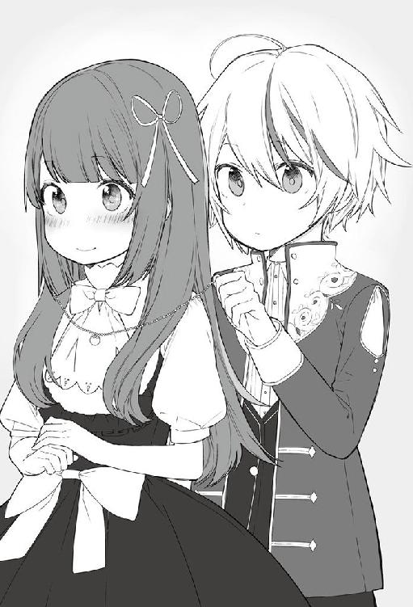
「カインね！ 私はリルターナ・ヴァ──、いや、『リル』でいい──」
「お嬢！ こんなところにっ!! みんなこっちにいたぞっ!!」
自己紹介の途中で、美少女を探していると思われる商人達がカイン達に向かって走ってくる。
「あ、まずいっ、見つかった！ カインね！ 憶えたわ！ いつかまたね！」
リルはカインに手を振り、その男たちから逃げるように風のように疾走し、あっと言う間に人波へ消えていった。
「なんだったんだろう、さっきの子は......。リルって言ったよな、確か」
カインはリルを追ってカインの横を通り過ぎていった商人達を見送りながらそう呟いた。
リルに付けてもらったネックレスの石を見ながら、満足したカインは歩き始める。
「あっ、レイネ姉さまのネックレス買わないと！」
先ほどの店に戻って、しっかりとレイネのお土産を選んだのだった。
仲介所での買い物を済ませカインは屋敷に戻った。
すでにガルムやトリスは戻ってきており、応接室で寛ぎながら雑談をしていた。
「お、カイン帰ったか。仲介所のほうはどうだった？」
「ただいま帰りました。仲介所はとても楽しかったです。レイネ姉さまのお土産も買いました」
「それはよかったな、おっ、いいネックレス付けているじゃないか？」
ガルムはカインの付けているネックレスに目がいったようだ。
「色々ありまして、自分の分も買うことになりました」
カインは胸元の石を見ながら、先ほどの出来事を思い出す。
「それにしてもリル可愛かったな......」
少しだけの時間だけだったが、インパクトのある女の子だった。
気品があり、貴族令嬢だとしてもおかしくなかった。少し行動的過ぎるようにも思えるが。
そんなリルのことを考えながら一日を過ごしていった。
次の日はガルムに同行し、この砦を守っている騎士や兵士の訓練の視察をすることになった。
辺境伯が見学をすることを知ってか、いつも以上に訓練に熱がこもる。
百人程が訓練しており、木剣や先が丸まった槍などを持ち、数人がひと組となり模擬戦をしている。離れたところでは弓兵が的に向かってひたすら矢を射る。また、魔法兵もおり、置かれた岩に向かって各自が詠唱をし魔法を放っていく。
「どうだ？ ガルム卿の視察を聞いたら、いつも以上に頑張っているみたいだな......」
トリスは説明しながら苦笑いをしている。
「うむ、これなら問題なさそうだな。どうだ？ カイン、一度訓練に入ってみるか？」
ガルムは冒険者の家庭教師が舌を巻くほどのカインの実力を見てみたかったこともあり、提案してみた。
横に並んでいるトリスはその言葉に驚いた。
「まだ八歳だろ？ 無茶言うな。これでもこの砦を守ってきた兵士たちだぞ。さすがに相手にならんぞ」
魔物の討伐は隠れて行っていたが、今まで模擬戦を行ったことがあるのはミリィだけであり、ドラゴンを倒したことによって大幅なステータスの増加がどの程度なのか確かめたかった。
「ぜひやらせてください」
カインは即答した。
「ガルム卿、本当にいいのか？ 回復魔法士は待機させておくが......」
「うむ、構わない。冒険者の家庭教師を三年もつけていたからな。どれくらい成長したか確かめたい」
許可を得られたカインは、更衣室を借りアイテムボックスから冒険者の軽装を出す。着替えると木剣を持ち訓練場に向かった。
すでに騎士たちには話が伝わっていたらしく、まだ八歳という子供が訓練に参加するということで皆、驚いている。
「本当にいいのですか？ いくら回復魔法士がいるとはいえ、辺境伯の子供に怪我させたら......」
やはり何かあったときにお咎めがある可能性を心配していた。
「問題ない。ガルム卿が言われたのだからな」
トリスの答えに兵士たちは安心した声を漏らす。
カインは軽く体操を行い、身体を解していく。準備ができたところで兵士たちに合流した。
「お待たせしました。準備は出来ています」
大柄な兵士たちの中で、その腰辺りまでの身長しかないカインが並んでいることに違和感がある。
ガルムとトリスは用意された椅子に座り見学するようだ。
「よし、では模擬戦を始める。誰か相手するものはいるか？」
一際大柄な隊長と思われる兵士が声を掛けるが誰も手を上げない。子供と模擬戦をしても何も得られないし、下手すれば罰せられる可能性もあると思っているからだ。
「誰も手を挙げぬか、それではスラッド、お前が出ろ」
スラッドと言われた兵士は、名指しされたことで嫌な顔をしながら前に出てくる。
「本当にいいのですか？ 手加減はしますけど、怪我させるかもしれませんよ？」
「うむ、ガルム辺境伯はいいと言っておられるのだ、問題はあるまい」
「わかりました、やればいいんでしょ、やれば......」
スラッドと言われた兵士は木剣を持ちカインの前に立つ。
身長は大柄とは言えないが、引き締まった身体をしているのはすぐにわかる。
「坊ちゃん、手加減はするけど気をつけてくれよ？ こんなことで罰せられたらたまったもんじゃない」
「大丈夫です。怪我することはありませんから」
二人は五メートルほど距離をとり、木剣を構えた。
「始めっ！」
隊長の声が掛かった。
一瞬にしてカインは全身に魔力を流し強化する。そしてスラッドに向けて飛び込んだ。
五メートルあった距離は一瞬で縮まり、カインは木剣を横に一閃する。
あまりの速さに周りで見学していた兵士も、隊長も、そしてガルムやトリスも一同に驚いた。
もちろんカインの相手をしているスラッドは言うまでもない。
思わず木剣を出したスラッドにカインの木剣が接触した。
スパッ！
カインは全身を魔力強化しただけでなく、木剣も強化していた。何もしていない木剣で受け止められるわけもなかった。カインの一振りでスラッドの木剣は途中から斬られていた。
「「「......」」」
そこにいた全員が言葉を失う。
それだけカインの剣技に衝撃を受けたのだ。
剣を受けたスラッドももちろんだ。持っていた木剣は既に半分の長さになっており、これ以上模擬戦をしても無駄だと悟る。
「──参りました」
その一言を振り絞るのが限界だった。
「それまで、カイン殿の勝ちとする！」
隊長の言葉でやっと兵士たちの思考が動き始める。
「「「「「うぉぉぉぉぉぉ！！！！！！」」」」」
周りを囲んでいた兵士達の声援があがった。
「ガルム卿......何かおかしな事が起こった気がしたのだが......」
「トリスよ、私も同感だ。冒険者の家庭教師をつけ訓練させはしたが、さすがにここまでとは......」
「八歳でここまでとは......将来の騎士団長でも育てるつもりか？」
「本人は冒険者になりたいと言っていた。この実力を見たら誰もが欲しがるかもしれんな......陛下の耳にはいったらそれこそ......」
椅子に座って見学をしていたガルムとトリスも想像以上のカインの強さに驚きを隠せない。
その中でカインは木剣に魔力を流すと、相手の木剣の耐久力がもたないことがわかり少し失敗したと思った。
「もっと模擬戦楽しみたかったのに......」
カインはそっと呟く。
「カイン殿はまだ平気か。次、誰かいないか？」
隊長が兵士に声を掛ける。
実力が上の者と模擬戦をすれば、自分も強くなれることを皆知っている。
先ほどまでの消極的な姿はなかった。周りを囲んでいた兵士たちは我先にと言わんばかりに挙手をする。
「よし、次はデルト、前に出ろ」
次の兵士が木剣を構えて出てくる。
「坊ちゃん強いな。楽しみだぜ」
そういいながら木剣を構える。
「始め！」
再び身体強化を掛けて飛びかかる。但し、今回は木剣に魔力は流してない。相手の剣を破壊したらそこで勝負が決まってしまうからだ。もし身体に直接当たってしまったら上半身と下半身が別れてしまう可能性もあり、カインは手加減をしながら戦うことにした。
カインは知らないが、剣に魔力を流すことが出来るのはベテランの上級冒険者や、騎士でも上級と言われている者たちだけだ。八歳の子供が出来るとは誰も思わなかった。
カインと兵士の模擬戦は続いていくが、多くても五合程度で終わり対等に打ち合える兵士は誰もいなかった。
二時間近く経過した時には周りに立っている兵士はすでにいない。カインはまだ体力に余裕はあったが兵士たちは皆、肩で息をし座り込んでいた。
「──カイン殿、まだ余裕なのか......」
「まだ平気ですよ？」
隊長の問いにカインは笑顔で返した。
「申し訳ない......もう兵士たちは相手するのは無理だ」
隊長がカインに頭を下げ模擬戦は終了することを伝えた。
「こちらこそありがとうございました。いい訓練になりました」
カインも隊長に頭を下げる。
軽く汗をかいたので、タオルで顔を拭きながらガルムの元に向かった。
「お待たせしました。いい訓練になりました」
カインはトリスに頭を下げた。
「──いいんだ。まだまだ兵士が実力不足だということが良くわかった......。それにしてもカイン君、どんな訓練をしたらそこまで強くなれるのだ？」
「普通に冒険者の先生に訓練をつけてもらっただけです。あとは、魔物を少し倒してレベルはあげましたけど......」
「──そうか、ありがとう。兵士たちも勉強になっただろう」
トリスは苦笑いしながら頷く。
「父上、模擬戦終わりました」
「──うむ、想像以上でさすがに驚いたぞ、ただ──人前でその武力は余り見せるべきではないな」
「それは同感だ、すぐに王都に話がいってしまうはずだ。うちの兵士たちにも他言無用と厳命しておく。まぁ、八歳にコテンパンにやられたと吹聴する者もおるまい」
「わかりました。気をつけます」
二人の言葉にカインは頷いた。
訓練が終わり、兵士たちにお礼を伝え、ガルムたちの後について屋敷に戻っていった。
次の日、この日もガルムと同行予定だったが、屋敷に隊長が訪れ、カインに稽古をつけて欲しいとトリスに懇願があったことで別行動となった。
ガルムからは「やりすぎるなよ」と釘を刺されたのは言うまでもない。
隊長の案内で訓練場に向かうと、昨日の倍はいようかと思えるほどの兵士たちがいた。
カインが来たことがわかると、兵士たちは一気に盛り上がる。
「「「「「うぉぉぉぉぉぉ！！！！！！」」」」」
叫んでいる中には、昨日も模擬戦をした兵士たちもいる。
昨日と同じように一対一での対戦をしていく。兵士たちは、次はまだかと期待を膨らませて順番を待っている。
カインは身体強化を使いながら、向かってくる兵士たちと順番に戦っていく。
昨日参加していた兵士たちは、カインの強さを知っていることもあり驚きはしないが、初めて参加した兵士は、まだ八歳の少年がオーガのような強さで迫ってくることに驚く。半信半疑で参加した者も多かったからであろう。昼食の休憩以外は午前、午後とひたすら模擬戦をしていたことでカインも満足した。最終的には複数人対カイン一人という構図になっていた。あまりにも人数が多かったので一人で対応するのは無理があったからだ。
ガルムとトリスが訓練場にカインを迎えに来たときには、屍のように横たわる兵士達の姿がいたるところに転がっている状態だった。
「「......」」
その中で木剣を肩に乗せ、立ち尽くしているカインを見て絶句する。
「──ガルム卿、どんなバケモノに育てるつもりなんだ？ 見てみろよ、まともに動ける兵士が誰もいないぞ」
転がっている兵士たちは、意識はないものの、皆一様に満足した表情をしていた。
トリスの言葉にガルムは額に汗を流しながら何も言い返すことは出来なかった。
後から聞いた話だが、カインと模擬戦をすると何かしらのスキルレベルが上昇したということだった。だから二日目もわざわざ兵士が懇願してきたということだ。
数年後、カインが知らぬところで、このラメスタの兵士がエスフォート王国最強の兵士と言われるようになったのはいうまでもなかった。
滞在予定の三日が過ぎ、ガルムと共にグラシア領都に戻ることになった。
「トリス子爵、お世話になりました。ありがとうございます」
カインは見送りにきたトリスに頭を下げる。トリスは満足した顔だ。
「また遊びにくるといい、ガルムがいない時でも構わないぞ？ 兵士たちも喜ぶ」
「はいっ！ ぜひまた遊びにきます！」
トリスの言葉にカインは笑顔で返す。
「ガルム様、馬車の用意ができました」
セバスが馬車の用意が終えたことを伝えに来た。
「それではトリス、達者でな。また近いうちに来る」
「おう！ この地の防衛は任せておけ。兵士たちも勉強になっただろう」
トリスは自分の胸を叩いて、ガルムに笑顔を向けた。
二人は馬車に乗り込み、セバスの合図で馬車は動きだす。
馬車の中から外の風景を眺めながら、ネックレスの石を見つめる。
そんなカインに気がついたガルムはカインに問いかける。
「なんだ、そのネックレス、そんなに気に入っているのか？ それとも何かあったか？」
ニヤニヤと聞いてくるガルムに、視線を窓の外へ向けカインは誤魔化した。
「なんでもないですよ......ちょっと少しだけ知り合った人の事を考えていただけです」
カインは一言だけ返し、ネックレスを服の中へ仕舞った。
そうしてまた二日かけてグラシア領都に戻った。
門を潜り街中を屋敷に向かって馬車は進んでいき、屋敷に到着すると、勢いよく扉が開きレイネが出てきた。
「カインくんっ！ おかえり!! 一週間も会えなかったから寂しかったわ」
レイネはカインに抱きつきクンクンとカインの匂いを嗅ぐ。
そしてカインが付けているネックレスに気がついた。
「カインくん！ 何このネックレス！ もしかしてラメスタの街で他に女が！」
見当違いな勘違いをしているレイネを抑える。
「レイネ姉さま、レイネ姉さまにお土産を買ってきたのです。その時に一緒に買っただけですよ。ほら、お揃いですね」
カインは懐からレイネに買ったお土産の入った小袋を取り出す。
そしてその小袋からネックレスを取り出した。
「レイネ姉さまに似合うと思って......」
「──カインくん、つけてくれる？」
先ほどまでの表情と違い、レイネは目をウルウルとさせながら上目遣いでカインを見る。
「もちろんです」
カインはレイネの後ろに回りネックレスをつけてあげた。
レイネは胸元の輝いている金細工で出来たネックレスを見て満面の笑みを浮かべる。
「カインくん！ ありがとう！ 大好き！」
またレイネはカインに抱きついた。
カインに抱きついていると、いつの間にか出てきたサラが、後ろからレイネの首元を掴む。
「レイネ、まだ勉強の途中でしょう？ さぁ行くわよ」
「いやぁぁぁぁぁぁ！！！」
レイネはサラに首根っこを掴まれそのまま屋敷へと消えていった。
こうしてカインの初めての泊りがけの視察は終わった。
９ 王都へ
あれから二年が経ちカインは十歳となった。
貴族の子息は十歳になると、国王への謁見が行われるお披露目会がある。
もちろん二年前にはレイネのお披露目会ということで、レイネも王都に向かった。
まだ家庭教師がついていた時期であり、カインはグラシア領に残ったことを思い出す。
今回は、レイネが学園の試験を受けるために王都に向かうため、サラを含め王都で生活するために全員で移動することになった。
国営である王都の学園は国内では一番難易度は高い。
貴族の子息は試験には必ず合格するとされているが、成績の順位で決められるクラス分けは完全に実力主義とされている。そこには貴族も平民もないのだ。ただ、平民と違い、貴族は小さい頃から教育を受けており、一般的な平民より高い知識を持っている。
レイネも嫌々ながらも勉強を行い、今では問題がない程度の学力はついていた。
「カインくんと今度は王都で暮らすの楽しみだわ。もうカインくんも学園の試験受けて入学すればずっと一緒にいれるのに」
まだ十歳のカインはいくら勉強が出来ていても学園に入れるはずもない。
レイネの言葉に苦笑いするしかなかった。
「王都の生活は、マリアやジン、アレクと一緒になる。言うことを聞くようにするのだぞ」
ガルムはレイネを諭すが、カインに抱きつき離さない。
「レイネ姉様、姉様が学校で活躍しているのを楽しみにしていますね」
やっとカインを開放し目を輝かせ胸を張るが、十二歳では少ししか膨らみはなかった。
「カインくん。見ていてね！ カインくんのお姉さんとして頑張っちゃうから！」
やはりレイネはカインの言葉には弱かった。
数日が経ち王都に行く日となった。
王都までは馬車で七日間の距離にあるが、今回は十日間かけて行くことになっている。途中の街や村に寄る必要があるからだ。上級貴族ともなれば、各街や村に泊まる必要がある。それなりの規模の街なら、街の領主への挨拶、村ならば十数人が滞在することによる金銭が村に入る。
それは貴族の義務だとガルムがカインに説明していく。
今回、同行するのは、領主のガルム、サラ、レイネ、カイン、執事のセバスとカイン専属のメイドのシルビアだ。護衛として騎士が十名同行している。
「初めての王都だから楽しみです」
ラメスタの街には行くことはあったが、グラシア領からは出たことがなかった。
初めての王都にカインの気持ちが高ぶっていた。
街道を進む馬車の中で『探査』を使い、三キロ先までの状況を確認していく。
大幅なレベルアップにより、以前より格段に広範囲を探すことができるようになっていた。
魔物の襲撃など何もなく順調に馬車は進んでいく。
「ガルム様、レノマの街が見えてきました。もう少しで到着となります」
馬車の窓から前を覗くと、街の外壁が見えた。グラシア領都と比べるとやはり小さく感じる。
騎士の二人が入場の手続きをとるために馬で先行する。
街の門には、衛兵が両脇に並んでおり、先行した騎士と話をすると慌ただしく門が大きく開かれた。
そのまま止まることなく馬車は街に入り、領主館まで一直線に進んでいく。今日泊まるのは領主館の隣の迎賓館だ。王都に向かう途中の街には、迎賓館が用意されており領主がその運営を任されている。
迎賓館の入口には、この街の領主であるサファル・フォン・タルマール子爵が待っていた。
「ガルム辺境伯、この度はこの街へ寄っていただきありがとうございます」
「サファル卿、この度は世話になる。紹介しよう、妻のサラに子のレイネとカインだ。今回、レイネの学園受験とカインのお披露目で向かうこととなる」
「レイネ・フォン・シルフォードです。本日はお世話になります」
レイネはスカートを両手で軽く摘み、腰を少し下げ挨拶をする。
「カイン・フォン・シルフォードです。本日はお世話になります」
カインも姿勢を正し一礼し挨拶をする。
「これはレイネ殿、カイン殿、ご丁寧に。本日はゆっくりお寛ぎください」
ガルムとサファルが軽く雑談をしたあと、メイドに案内され客室に向かう。
迎賓館の廊下には、絵画や工芸品が廊下に並んで飾られていた。
案内された客室に入り置かれていたソファーで寛ぐ。
シルビアが客室の端に用意されていた紅茶を淹れはじめた。
「馬車とはいえやはり疲れるなぁ」
「カイン様、紅茶の準備ができました。今日はゆっくりとお休みください」
「ありがとうシルビア」
テーブルに置かれた紅茶を飲むと、グラシア領で飲む味とまた違う。
シルビアが退出したので、日々日課にしている魔力循環を行う。床に座り瞑想し体内に魔力を巡らせていく。
もう常識を超えた魔力量を持っていたが、数年間の日課になっているため、やらないと落ち着かなかった。
十分に魔力循環を終わらせたあとにカインはベッドに入る。
馬車で一日揺れた疲れもあり、すぐに意識を手放した。
いくつかの街や村を過ぎ、王都まで残り三日となった。
魔物や盗賊などの襲撃もなく順調に馬車は進んでいく。
探査は常に使うようにしている。
膨大な魔力量のおかげで一日中使っていても魔力が切れることはないため、起動したままにしている。
馬車は丘を越え下り坂へ差し掛かった時、急に探査に戦闘中の反応を感じた。
前方三キロで戦いが起こっていることがわかった。
多くの魔物の気配があり、囲まれている人の魔力が次第に減っていく。
「父上、大変です。三キロ先で戦闘が起こっています」
カインが慌ててガルム伝える。
「なにっ！ そんな先のことまでわかるようになったのか！」
『探査』はよく知られている魔法だが、カインの感知範囲にガルムが驚く。
「はい、父上に優秀な冒険者の先生をつけてもらいましたからね。そんなことより早く！ 十人くらいに魔物が数十匹群がっているみたいです。早く行かないと!!」
「そうだな、まずは数人応援に行けっ！」
ガルムが馬車から指示を出し、四人の騎士が先行して馬で駆けていく。
探査でずっと様子を伺っているが、さらに人の魔力が消えていく。
（このままでは間に合わない）
「父上、このままでは間に合いません。僕も先行します」
「カイン、いくら訓練したとはいえ危険だ!!」
「父上、僕なら負けません。それなりにレベルもあがりましたから。ラメスタで見ましたよね？ 間に合わなくなりそうなのでもう行きます」
帯剣し、走っている馬車の扉を開け飛び降りた。
（あまり見せたくはなかったけど、緊急事態だし仕方ないか）
飛び降りたカインは身体強化と風魔法を使い、風を身体に纏い一気に加速していく。
時速百キロを超えるスピードで草原を駆け抜けていく。
あっという間に馬車からはカインの姿が消えていった。
周りの護衛もあまりのスピードに唖然とした。もちろんガルムを含め家族たちもだ。
途中で先行した騎乗した騎士を追い抜き、そのままの速度で駆け抜けていく。
騎士たちは突風が過ぎ去った程度にしかカインのことを感じることができなかった。
そして先行した四人より先に到着すると、視界にはオークの群れが、馬車を守る騎士たちを襲っていた。
オークの中には鎧を着た上位種も数体見受けられ、騎士たちが奮闘しているが、多勢に無勢ですでに三人しか立っている者がいなかった。
他の騎士はオークの攻撃により力尽き倒れており、すでに気配が感じられない者や、少しだけ手足が動いている者もいた。
上位種がいることにより、オークたちの連携が取れているように見受けられる。
カインはオークの群れの後ろから叫ぶ。
「加勢いたします!!」
カインの声に反応した騎士が顔を向けるが、子供がいることに驚く。
「子供がこんなとこにきてはいけない！ 逃げろ!!」
騎士はカインに逃げるように大声を張り上げた。
「見ていてください。大丈夫です」
『真空弾』
手を向けた先から十発の圧縮された空気の弾がオークに向かって飛んでいく。オークの額に吸い込まれていくと頭を爆散させた。
カインの放った魔法一回で十体のオークが倒れた。
残っているのはあと二十体。
鎧を着たオークの上位種が新しい敵を発見したことで、配下のオークに伝える。
「ブモォォォーー」
騎士を攻撃していたオークが一度動きを止め、周りを見渡す。
そこにカインは魔法を放っていく。
『真空刃』
十枚の真空の刃がオークの群れに向かっていく。オークの集団に着弾すると、一体は上半身と下半身が別れ、また、他のオークは腕が吹き飛び、次々とオーク達が倒れていく。
残っているオークはあと十体だった。まだ上位種も残っており騎士と戦っているものもまだいた。
騎士に当たってしまう可能性もあり、魔法を放つのをやめ、鞘から剣を引き抜く。
「次は剣だ！ いくぞっ!!」
剣を持ちオークに襲いかかる。身体強化した身体は弾丸のようにオークの群れに向かって飛んでいく。
一歩踏み込むだけで十メートルは進んだだろうか。
次々と剣技を振るいオークを切り裂いていく。オークの振り回す棍棒を避けながら剣をひたすら振るう。
「これで終わりだっ！」
護衛の周りにいたオーク達は全て倒し、残り三体の上位種のほうを向き剣を構える。
鎧を着てハルバードを持っている上位種は、配下のオークが全滅したことで、怒りで息巻いている。
「「「ブモォォォーー！」」」
最後の三体がそれぞれの武器を持ちカインに向かっていく。カインは左手で魔法を放ちながら右手で剣を振るう。
一体は頭に魔法が直撃し、頭を爆散させて倒れる。もう一体はカインが振るった剣で首から先が落ちた。そして最後の一体に向き直る。
「──あと、お前だけだ」
身体強化された身体で一直線にオークに向かい、すれ違いで剣を一閃する。
最後まで残ったオークの上位種は動きが止まり、次第に首が横にずれ落ちていく。首のない最後の一体が倒れた。
カインは剣に付いた血を払い鞘に納め、騎士たちに声をかけた。
「大丈夫ですか？」
状況を確認しようと倒れている騎士に向かう。
残っている騎士は一様にカインに剣を向けた。
「馬車に寄るな。そこで止まれ」
騎士の言葉でカインはその場に止まる。騎士が守る馬車は貴族の紋章が飾られており、シルフォード家の馬車よりも豪華に見受けられる。
カインはその場で姿勢を正し一礼する。
「申し遅れました。カイン・フォン・シルフォードと申します。辺境伯ガルム・フォン・シルフォード・グラシアの三男になります」
その時、カインの後ろから騎士が馬で駆ける音が聞こえてくる。
先行して向かった四人の騎士が到着した。
「グラシア辺境伯領の騎士である。加勢に参った──って、あれ？ なんでカイン様がいるのですか？」
すでに四肢が欠損した状態で息絶えているオークの死骸を見渡す。
「しかも全部倒してしまっているし......」
「ラメスタの時よりひでぇ......」
加勢にきた騎士たちは各々に小言を言い呆れていた。
今回護衛についた騎士たちは、以前、ラメスタの街にも同行したことで、カインの強さを目の当たりにしている。
「それよりも、負傷している騎士の治療をさせてください。回復魔法が使えます」
グラシア領の騎士が到着したことによって、護衛の騎士たちは警戒を緩め剣を収めた。
カインは倒れている騎士に走り寄り、倒れている騎士の具合を確認する。
数人はすでに事切れていたが、まだ息がある者もいた。近くによりすぐに回復魔法を掛ける。
『エリアハイヒール』
近くにいたわずかに息のある騎士たちが一瞬にして白い光に包まれていき、光が消えた時には怪我も一瞬にして治っていた。まだ意識はないがすでに外傷は見受けられない。
「なんだこれはっ!?」
目の当たりにした騎士たちはその異様さに驚いている。
「さすがに流した血までは戻りません。安静にして血になるものを食べるといいでしょう」
前世の知識から、カインは騎士たちに伝えた。
「もう少しで父も来るはずです。そしたら安心していただけるかと」
数分で馬車と護衛の一団がカイン達に向かって駆けてきた。
近くで止まると、馬車からガルムを筆頭にサラやレイネが降りてくる。
ガルムに気づいたのか、相手の騎士たちが整列し一礼する。
「──まったく、いきなり馬車を飛び降りるとは......。今は聞かん、あとで状況を話せ」
ガルムがカインに一言だけ言い、そして馬車のほうを向く。
「ガルム・フォン・シルフォード・グラシアだ。その馬車の紋章はサンタナ公爵家のものと見受けられる。ご無事か」
貴族の馬車だとはわかっていたが、最上級とも言われる公爵家だと知るとカインも驚いた。
不審者がいきなり現れオークを切り刻み、馬車に寄ってくれば、護衛の騎士としてカインを近づけたくなかったのが良くわかった。
ガルムが声を掛けたことで、護衛の騎士により馬車の扉が開かれた。
馬車から降りてきたのは、侍女に支えられ震えた手を取り合っているカインと同じ年くらいの女の子二人だった。
二人とも震えていて、お互いに手を繋いでいる状態だ。侍女も震えながらも貴族令嬢と思われる二人を支えている。
二人は騎士やオークの死骸に囲まれた周りの惨状を見渡し青ざめている。
一人は金色の髪で腰の辺りで綺麗に揃えられていて、貴族令嬢に見受けられる。
もう一人は薄紫色の髪を横で束ねられており、同じく貴族令嬢だと思われた。
降りてきた二人はどちらも絶世の美少女だった。
二人の顔を見た瞬間、ガルムは一瞬驚きの表情を見せると、金髪の美少女に向かって、膝をつき貴族の最上級の姿勢をとった。
その姿に慌ててカインも同じ姿勢をとる。サラとレイネもガルムに習い腰を下げる。
「──これはテレスティア王女殿下、シルク嬢ご無事で何よりです」
カインも貴族の令嬢とは思っていたが、金髪美少女は王女殿下であることに、心の中で驚愕していた。
「ガルム様、危ないところをお助けいただきありがとうございます」
テレスティアとシルクは、未だに侍女に支えられ震えながらも、丁寧に貴族流の挨拶をした。
挨拶した二人は、カインが気になるようでチラチラと視線を向ける。
その視線に気づいたガルムが立ち上がり紹介を始めた。
「カイン、こちらにいらっしゃるのは、第三王女のテレスティア・テラ・エスフォート様とサンタナ公爵の次女であるシルク・フォン・サンタナ嬢だ」
カインも立ち上がり自己紹介をする。
「隣におります、ガルム・フォン・シルフォード・グラシアの三男、カイン・フォン・シルフォードでございます。テレスティア王女殿下及びシルク様においては、ご無事で何よりです。いきなりで申し訳ありませんが心が静まる魔法をかけさせてもらってよろしいですか？」
カインは指に魔力を通し、魔法を唱える。
『気分鎮静化』
光りが二人の少女と侍女を包み込み、そのまま消えてゆく。
「これで気分が落ち着いたと思います」
光魔法をアレンジした魔法を使用した。カインは森で冒険していた頃に、倒した魔物の内臓を見ては具合が悪くなっていた。自分の経験から創った魔法だ。
光りが消えていくと、先ほどの恐怖からの震えがおさまっていた。
自分の身体を確認して震えが止まっていることを確認した二人はカインに視線を送った。
そこには眩しいほどの笑みを浮かべたカインがいる。
その笑顔にテレスティアとシルクは頬を赤く染めた。
「カイン様、テレスティア・テラ・エスフォートでございます。危ないところを助けていただきありがとうございます。とても怖かったです。もうこれで最後なのかと思っておりました」
頬を少し染めたテレスティアが涙目でカインの手を取り両手を重ねてお礼を言う。
「あ、ずるい！ カイン様、私からもお礼を言わせてください。馬車の窓から見ておりました。疾風のごとき勢いで魔法を放ち、剣技も格好よかったです」
シルクもテレスティアからカインの手を奪い、包み込むように手を重ねお礼を言う。
さすがに王女殿下と公爵令嬢の二人が、カインの手を奪うように取り合っていることにガルムは顔を引きつらせる。
その後、テレスティア付きの侍女も紹介され、お礼を言われることになった。さすがに二人のように手は握ることはなかったが。
「守ってくれる騎士が倒れていく中、シルクと二人してこれで最後だと思っておりました。カイン様はお強いのですね、三十体のオークをお一人で討伐なさるなんて。魔法も剣技もつい見惚れてしまいました」
「それにしても、なぜこのようなところにいらっしゃるのでしょうか」
余りにもカインにべったりな二人に苦笑いをしながらガルムが口を挟んできた。
「テレスは──あ、テレスティア王女殿下は、私の家のマルビーク領に来ていて、王都に向かっている最中だったのです。王女殿下を含め私もお披露目会に出る予定でしたので」
「そうでしたか、私達もお披露目のため王都に向かう最中になります。よろしければご一緒いたしますかな」
「ぜひ、ご一緒させてください」
ガルムの提案に二人の美少女は勢いよく頷いた。
騎士たちは魔物の死体の処理や、残念ながら亡くなった騎士を白いシーツで包んでいた。
テレスティアとシルクにはあまり見せたくなかったこともあり、騎士が誘導し先に馬車へ戻ってもらっていた。
「魔物の素材と亡くなった騎士を王都までお運びいたします」
カインは残っている護衛の騎士たちに提案した。
「それは構いませんが、この量をどう運ぶのでしょうか」
騎士は疑問に思いカイン問いかけた。
「それは......」
ガルムのほうに視線を向けると無言で頷いた。
魔物の死体に手を触れると、魔物が消えた。
「「「アイテムボックス!!」」」
「はい。これくらいでしたら運べますので」
次々とアイテムボックスに収容していく。白いシーツに包まれた騎士たちも収容した。
護衛の騎士隊長が代表しカインに礼を言う。
「助かります。このままここで埋葬しようと思っていました。これで家族に引き渡せます」
「それでは王都へ向かいますかな。私達の馬車が先行いたします」
ガルムが騎士に伝え自分の馬車へ向かう。
カインも慌ててガルムの後を追った。
「──あの......よろしいでしょうか」
ガルムとカインに声を掛けたのは、テレスティアだ。
「あ、あの......私達二人では不安なので、カイン様を私達の馬車でご一緒させてもらいたいのですが......」
「それは......」
さすがにガルムも即答はできない。ただ、お願いされているのは王女殿下であり無碍にもできない。
少し考えたあと、ガルムは頷いた。
「──わかりました。カイン、そちらの馬車へ乗れ」
「──わかりました」
馬車の方に視線を向けると、テレスティアの言葉が聞こえていたようで、案の定、レイネが拳を握り締めてプルプルと震えている。どうみても怒っているようだった。
カインは見なかったことにして、テレスティアの後を追い馬車に乗り込んだ。
「こちらにお座りください」
侍女の案内で席に座る。
そして、なぜかカインの両隣にはテレスティアとシルクが座っている。
目の前の席が空いているのにも関わらずだ。大人が二人並んで座っても十分に座れるスペースがあるので、子供が三人並んでも確かに狭くはない。
「三人並んで座ったら狭いでしょうから私が前の席に座りましょうか」
カインが二人に提案をする。
「ダメですわ。隣に座っていてください。まだ怖いので隣にいてもらえると安心できます」
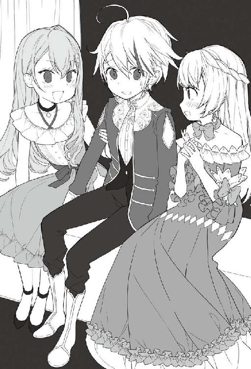
そう言ってテレスティアは自分の腕をカインの腕に絡ませた。
（それでいいのか王女殿下!!）
言葉では言えないので、心の中でカインは叫ぶ。さすがに精神は、前世でも高校生まで生きたことで、十歳に欲情することはない。絶世の美少女だとしても......。
「テレスずるい。私も！」
今度はシルク嬢も反対側の腕を絡ませる。
両腕を絡ませてくる二人のお陰で、身動きのとれないまま、王都へと向かった。
最初は、襲撃の記憶を思い出したのか、震えることもあったが、その度に魔法をかけ、次の日、そしてその次の日には二人とも落ち着き震えることはなくなっていた。
カインの気持ちは美少女二人に挟まれてどうにかしてほしいと思っていたが、その気持ちを知らずか、カインを挟み美少女二人はとても盛り上がっている。
「カイン様、私のことはテレスとお呼びください」
「私もシルクでいいよっ！」
「そ、そんな、王女殿下に向かって......」
「テ、レ、ス！ いい？」
「──はい......テレス様」
「様はいらない」
「......わかりました──テレス」
「私もっ！ シルクって呼んで」
「......はい──シルク」
二人はカインに名前で呼ばれ満足したように頷く。
精神年齢が高くても、女の子にはやはり勝てなかった。レイネと同じように誤魔化すことはできずにカインはうな垂れる。
そして次の日、無事に王都に到着した。
これまでの三日間は魔物の襲撃もなく静かだった。ただ、両隣の美少女二人に挟まれた状態で過ごしたことにより、王都についた頃にはカインはげっそりとしていた。
王都の入口で受付を済ませ、貴族専用の入口から馬車は門を潜る。
「王都の中に入りましたし、もう安全ですからそろそろ私は自分の馬車へ戻りますね」
カインはやっと解放されると思いながら二人に伝える。
「何言っているのですか、カイン様はそのまま私達と王城へ行くのですよ。王城の横に騎士団の詰め所がありますから。うちの騎士から、ガルム様にはそう伝えてありますから大丈夫です」
たしかにアイテムボックスの中には、まだ騎士の亡骸が入っている。早く家族のもとへ届ける必要もあると思い頷いて同行した。
王城の入口でテレスティアとシルクと一度別れ、王都まで同行した騎士と騎士団の詰め所につくと、護衛と同じ白銀の鎧を着た騎士が出てきた。
団長が王都を不在にしていて、副団長は王城に緊急の用件で行っているため、カインは応接室に通され待たされることになった。
誰もいない部屋で一時間ほど待っていると、扉が急に開かれた。
入ってきた騎士は、他の騎士より豪華な騎士服を着ていて二十代後半に見える赤毛のイケメンだった。
「すまん、待たせたな。先行した騎士たちからすでに説明を受けた。王女殿下と公爵令嬢の二人を守っていただいて感謝する。そして同胞をここまで運んでもらってすまないな。私は近衛騎士団副団長をしているダイム・フォン・ガザートという」
二人の無事と同胞の死を噛み締め、少し寂しい表情をしたダイムがカインに軽く頭を下げる。
「カイン・フォン・シルフォードです。グラシア領主の三男になります。騎士たちは二人を守るために、五十体近くいたオークに立ち向かったのです。勇敢に戦っておられました」
カインの言葉にダイムは少し頬を緩ませた。
「そう言ってくれるとありがたい。亡くなった騎士たちも報われよう。それではこちらで引き取ろう」
ダイムに案内され指定された場所に白いシーツで包まれた騎士たちの亡骸を置いた。
一般的に外で亡くなった場合は、遺品として何かを持ち帰り、遺体はその場で埋めるか燃やすことが普通だ。
並べて置かれた騎士の亡骸に祈りを捧げたあと、王都にあるシルフォード家の別宅に向かうことにした。
「それでは、私はこれで失礼いたします」
「ちょっと待ってくれ。カイン君には、これから陛下への謁見をしてもらう。もちろんガルム卿も、すでに王城に向かっているはずだ」
国王への謁見となることを伝えられたカインは目を丸くした。
10 叙爵
今、カインは王城内にある応接室のソファーに座っている。
誰もいない部屋で一人、これから謁見を行うために待機しているのだ。扉の外には、王城に勤めるメイドが控えているが。
十歳の子供一人を、この部屋で待たせる意味がわからなかった。
この部屋についた途端、執事とメイドが数人現れ、いきなり服を剥ぎ取られ、体のサイズを測られた上に、謁見を行うために新しい貴族服に着替えさせられた。
さすがに旅用の貴族服では、国王への謁見はできないからということだ。
今回の謁見の理由だが、オーク三十体を倒して、王女殿下とシルク嬢を助けたのは確かだ。
だが、騎士たちから事情は聞いているだろうし、今更何を話すことがあるのかカインは理解できなかった。
結論が出ない考えをしていると、扉がノックされ執事が入ってきた。
「カイン様、謁見の準備が整いましたのでご案内いたします」
「あ、あの......謁見の方法すら知らないのですが」
カインは初めて王都に来た。お披露目会として国王への謁見は予定されていたが、一人で行うなど考えるはずもなかったので、礼儀作法すら知らなかった。
「たしかに十歳で謁見するのは珍しいですからね。謁見の間に入ったらまっすぐ進み絨毯の切れ目のところで片膝をつき、右手を胸に当てて頭をお下げください。あとは、その場ごとでお声をかけますので平気だと思われます」
「ありがとうございます」
丁寧に教えてくれた執事にカインは感謝をする。
「それではご案内いたします」
「はいっ、よろしくお願いします」
王城の廊下を執事の後について歩いていく。廊下には絵画や鎧、他にも美術品が並べて置かれている。どれも高級そうに見え、この国が栄えていることが象徴されているかのようだ。
廊下を進み、大きな扉の前に立つように指示され扉が開くのを待った。
数分で扉が内側から開かれ、言われるがまま前に進む。左右には貴族と思われる人たちが一同に並んでいた。玉座に近い位置に父親のガルムも並んでいる。
カインは絨毯の切れ目まで進み、片膝をつき頭を下げる。
「面をあげよ」
正面から国王の声が掛かる。
先ほどの説明の通りに顔を上げる。正面の玉座に国王が座り、周りには王妃とその子供達が立っている。もちろん第三王女であるテレスティアも並んでいた。テレスティアはカインを見ながらニコニコとしている。
玉座に座っている国王は、やはり国王らしく金糸で彩られた立派な服を着て王冠をつけており、金髪で、四十代に見えるが、鍛えているようで、しっかりとした身体をし、顎髭があり貫禄を見せつける。
横から、五十代くらいで白髪頭の人が一歩前に出てきた。先ほど執事から説明を受けた宰相であろう。
「この度、テレスティア王女殿下及びシルク・フォン・サンタナ嬢が、五十体を超えるオークの群れに襲われた。しかも上位種であるオークジェネラルを含む一団にだ」
その内容に謁見の間にいる貴族達が一斉にざわめく。
「静まれ。そんな時、そこにいるカイン・フォン・シルフォードは自ら死地へ飛び込み、一人で上位種含め三十体以上のオークを討伐したのじゃ。討伐後は負傷した騎士たちを回復魔法で癒し、亡きものとなった誇り高き騎士たちも王都まで持ち帰ってきてくれた」
まだ幼い少年が一人で上位種を含む三十体以上の魔物を倒したと聞き、さらに並んでいる貴族達が騒ぐ。
上位種が率いる魔物の群れに立ち向かうには、相当な人数が必要だと理解しているからだ。
「そこで褒章を与える。陛下、よろしくお願いいたします」
宰相が説明を終え一歩下がる。
国王が頷き話し始めた。
「カイン・フォン・シルフォードよ、この度の活躍見事であった。そなたがいなかったら、ここにいるテレスティアもシルク嬢も助かっていなかっただろう。よって、カイン・フォン・シルフォードを男爵と叙する。また、白金貨十枚と王都に屋敷を与える」
並んでいる貴族達がまた一斉に騒ぐ。先ほどより大きな声だ。
無理もない、貴族の当主というのは、そう簡単になれるものではない。新しく叙爵され独立するためには相応の努力と結果が必要となり、年に一人出ればいいほうである。
騒いでいる貴族の中から、一人の貴族が前に出てきた。太った体を揺すりながら国王に歩み出る。
「お、お待ちください陛下。いくらなんでも十歳に叙爵はありえません。まだこんな子供なのですよ」
反対意見が出てきた。
（正直、俺も反対だよ。いきなり叙爵なんて......何も聞いてないし）
「──だまれ。コルジーノ侯爵。ならお主は一人で死地に飛び込み上位種含む三十体ものオークを殲滅できるのか？」
「むぐっ、そ、それはっ......だ、だからといって......」
それでも引かないコルジーノ侯爵に、次第に国王の機嫌が悪くなっていく。
「カイン・フォン・シルフォードは三男だったな。今のシルフォード家の嫡男ではない。このような優秀な子が在野に放たれてしまったらどうするのだ。この決定は変えん。コルジーノ、二度は言わん。下がれ！」
「わ、わかりました......」
国王に咎められたコルジーノ侯爵は貴族が並んでいる列に、カインの事を睨みつけながら下がっていく。
「カイン・フォン・シルフォードよ。受けてくれるな」
国王はまっすぐに真剣な眼差しでカインを見つめた。
国王の表情は真剣だ。
横に立っている宰相にカインは視線を送る。
その視線に宰相は無言で頷く。
反対側に立っているガルムの顔を見る。
すでに根回しされているらしく、表情を変えずに同じく無言で頷くだけだった。
カインは一呼吸したあとに答えた。
「あ、ありがたく......受けさせていただきます」
この雰囲気で十歳のカインに断れる勇気はなかった。
「これにて謁見を終了とする。陛下、王族の皆様、ご退出をお願いいたします」
宰相の言葉の後に、国王が退出し、その後ろを追うように王族が退出していく。
「詳細は別室で説明する。案内するからそこで待つといい」
宰相に告げられカインも退出する。メイドに案内された部屋は、先ほどとは違いテーブルが中央にあり十人位が座れるほど椅子が並んでいた。
座って待つ訳にもいかず、部屋内をグルグルと歩きながら待っていると、扉が開かれガルムが部屋に入ってきた。
「カイン待たせたな。まさか叙爵までされるとはな。宰相殿から事前に叙爵の説明を聞いたときには驚いたが、王都の屋敷も含め予想外だった。三男だと思っていたのに、最初に出世したな」
そう言いながら笑顔を向けカインの頭を撫でる。
やはり新しく叙爵されるということは珍しいことであり、父親としても誇らしいとのことだった。
二人で今後の話をしていると、扉が開き数人が入ってくる。
先頭で入ってきたのは、先ほど玉座にいた国王だ。その後に王妃、宰相、テレスティア、シルク、シルクの父親と思われる人だ。
シルクがカインを見て笑顔で手を振っている。
国の上層部が勢揃いした状況では、手を振り返すことを出来るほどカインの肝は据わっていなかった。
国王が一番先に一番奥の真ん中の椅子に座った。
「皆、ここは謁見ではない。座るとよい」
その言葉のあとに、皆、座り始める。
カインは国王の対面に座る。
「よし、揃ったな。カインよ、まず、今回は本当にありがとう。テレスティアから話は全て聞いた」
国王が頭を下げる。それに習って王妃も頭を下げた。
「カインくん、私からもお礼を言わせてくれ。シルクの父親のエリック・フォン・サンタナ・マルビークだ。本当にありがとう。お陰でシルクが助かった」
公爵であるエリックもカインに頭を下げる。まだ十歳のカインに向かって、国王と筆頭貴族である公爵が頭を下げたのだ。
カインだけではなく同席したガルムでさえ驚いた。
「陛下、王妃様、公爵閣下、頭を上げてください。私は襲われていた人がいたので、助けにはいっただけです」
カインの言葉に三人が頭を上げる。
「ありがとう。ただ、やはり王としてではなく、一人の親としてまずは礼を言わせてもらう。それでは今後の話をしようか」
国王の言葉に皆が頷く。
「それにしても、十歳のカインに叙爵してよろしいのでしょうか」
ガルムが国王に問いかけた。成人前に叙爵するのは親が引退か死去した場合にはあるが、新しく独立した貴族になる未成年が叙爵することなど皆無だからだ。
「いいのだ、ガルムよ。テレスティアの話を聞いた。十歳にして、魔法も剣技も一流、アイテムボックスまでもっている。十歳にしてその腕だ。神のご加護も持っておろう。そんな優秀な子を放置しておくほど、わが国はお人よしではないのでな」
カインを見て国王がにやりと笑う。
国王の表情に思わずカインは背中に冷汗をかいた。
「叙爵といっても、まだ十歳だ、何をすることでもないぞ。男爵ともなれば街の代官をするのが普通だが、未だ学園に通ってもおらんしな。給金は規定通りに支給する。屋敷の維持もあるしな。貴族のことで何かあればガルムに聞け」
「ありがとうございます。父に相談してやってみます」
この世界の勉強もしているし、知識も前世を含め普通より多いと思ってはいるが、街の経営ともなれば前世の知識を活かしたからとはいえ上手くいくとは断言できなかった。免除されたことにカインは安心する。
「それよりもな、大事な話がある」
国王が真剣な顔付きになった。そしてエリック公爵と視線を合わせてお互いが頷く。
「カインよ。良ければじゃが、うちのテレスティアと、エリックのとこのシルク嬢をもらってくれんかな？ もちろん正式な結婚は成人してからになるが、とりあえず今は婚約者としてじゃ」
「「！！！！！！！！！」」
ガルムは愕然とした。もちろんカインもだ。
テレスティアとシルクを見たが、二人とも顔が真っ赤になって下を向いている。
「......そ、そ、それは一体......な、なぜですか、陛下」
「カインよ。記憶にないか？ 馬車の中とか、途中の宿とか」
何があったのかカインは頭の中で思い出していく。
確かに同乗した馬車の中で、テレスティアとシルクは両隣に座って腕を組んでいた。
宿については、同じ部屋に泊まると強固な態度をとったテレスティアに根負けし、ベッドを分けて同じ部屋で一緒に寝た。同じベッドではないし、まだ十歳ということで問題ないとカインは思っていた。
「王族や、公爵家の未婚の女性が、未婚男性と宿では同じ部屋で寝て、馬車の中では腕を組んでいたとなれば、今さら他に嫁にだせまい？ それとも、わしらの娘じゃ不満だというのか？」
国王がカインに向かって目を細めながら責める。国王と公爵の二人からの無言の圧力がカインを襲う。
王族がそこまで厳しいのかをカインは把握していなかった。
どうしていいのかわからずにカインは、宰相のほうを向いた。宰相は無言でただ頷くだけだった。
（誰も否定してくれない......）
二人の圧力に負けたカインは力なく答える。
「......受け賜わりました。ただ、テレスティア王女殿下とシルク嬢の気持ちを優先させてください」
その言葉を返すだけで精一杯だった。
「言質をとったぞ。聞いたかテレスティア、シルク嬢。それで良いな、二人とも」
二人とも顔を真っ赤にして、口を抑え、涙目になりながら頷いている。
こうしてカインは十歳にして二人の婚約者を持つことになった。
時は少し遡る。
襲われた護衛の騎士たちの内二名が先行して、王城の騎士団詰所に飛び込んできた。
「緊急のご報告があります。団長か副団長にお取次を」
ボロボロの鎧を着た騎士が焦ったように飛び込んできたことに受付業務をしている騎士も驚く。
「な、何があった？ 団長は今、王都にいない。副団長がいるはずだからすぐに案内しよう。こちらだ」
詰め所にいる騎士の一人が中に案内する。
執務室には近衛騎士団副団長である、ダイム・フォン・ガザートがいた。
護衛をしていた騎士は息を荒げたまま執務室に入った。
騎士がダイムに報告をする。
「何っ！ オークジェネラル含む五十体の襲撃だと!? それで王女殿下にシルク嬢は無事だったのか!?」
騎士服を着込み、執務室で決裁を進めていたダイムが机を叩き立ち上がる。
「はい、当初十人の護衛で立ち向かい、なんとか二十体は倒しました。しかし、こちらも四人が死亡し、全員が負傷しながら戦い、もう限界だと思われた時に助けが入りました」
護衛の騎士が話を続ける。
「そこで少年が救援に来ました。ガルム辺境伯の三男で、カイン様と名乗っておりました。今年のお披露目のために王都に向かっていたので、年は十歳となります。そのカイン様が残り三十体のオークを一人で魔法と剣で殲滅し、ジェネラルもカイン様一人で倒しました。戦っていた私たちが目でやっと追えるほどのスピードで」
「そんな子供がかっ？ ガルム辺境伯の騎士ではなくて？」
「間違いありません。カイン様がオークたちを倒しました。その後、ガルム辺境伯も合流され王都までご一緒させていただきました」
「そ、それで負傷した騎士たちは平気だったのか？」
「カイン様が魔法を唱えると、まだ生きていた者は全員回復しました。もちろん私もです。ただ......すでに亡骸となった者は残念ながら......」
途端に暗くなった騎士の表情を察して、ダイムは話を変える。
「十歳にして攻撃魔法、剣技、回復魔法まで使えるのか......。これは至急、王城に報告せねばならん。報告たしかに受け取った。今はゆっくり休まれよ」
報告にきた騎士は職員の案内で執務室を退出していった。
「緊急の用件が出来た。王城へ報告に行ってくる」
職員に伝え、ダイムは焦るように執務室を出て行った。
ここは王城の中にある応接室だ。
応接室の中には、この城の主である、国王レックス・テラ・エスフォート、宰相のマグナ・フォン・テラハート侯爵、エリック・フォン・サンタナ・マルビーク公爵、そして近衛騎士団副団長であるダイムの四人がテーブルを囲って座っている。
護衛の騎士団から説明された話をダイムが話し始める。
「急にお集まりいただき申し訳ありません。実はテレスティア王女殿下とシルク嬢を乗せている馬車がオークジェネラル率いる五十体に及ぶオークの群れに襲撃を受けました」
「何っ!? 二人は無事なのか？？」
話を聞いて焦る国王とエリック公爵が机を叩き立ち上がる。
「はい、十人の近衛騎士がついておりましたが、二十体のオークを倒したところで四人が死亡。他が負傷し危ない状態だったところに、ガルム辺境伯の三男のカイン殿が一人で加勢に駆けつけました。そしてカイン殿一人で残りジェネラル含む三十体を──殲滅いたしました」
「「「なにっ!!」」」
オークジェネラルといえば単体でもＣランクとされている。五十体のオークの群れともなればＡランクに匹敵する状況だ。子供が一人で殲滅したと聞いて驚かないわけがない。
「──ガルム辺境伯の子は確か、王都の学校へ通っているのではなかったのか？」
宰相がダイムに問いかける。
「いえ、今回救援に向かってオークを殲滅したのは、今年、お披露目のために王都に向かっていた十歳の三男になります」
「──十歳でその実力とは......本当なのか？？」
常識では考えられない内容に、全員が眉間にシワを寄せる。そしてダイムから説明が続けられる。
「ガルム辺境伯に同行していた騎士団にカイン殿のことを尋ねましたが、五歳の頃には冒険者の家庭教師に師事し、ラメスタの砦では兵士数十人と模擬戦を行い、すでに上級魔法まで操る天才だと言っておられました」
「十歳で上級魔法だと......ありえん」
聞けば聞くほど本当の話かと疑いたくもなる。
「そして、そのあとが問題なのです。カイン殿はオークを殲滅したあとに騎士たち全員を回復魔法で癒し、オーク五十体と騎士の亡骸をアイテムボックスに収容し王都に向かっています」
「「「アイテムボックスも持っているのか」」」
その場にいる全員が驚いた。ダイムの話を聞けば聞くほど冗談にしか聞こえない。おとぎ話のような英雄の話を聞いているのと同じだからだ。
「十歳でそこまでの武力、回復魔法にアイテムボックスも持っている人材なんて、そんなに出てくることなんてあると思うかエリック？」
国王がエリック公爵に問い掛ける。
「そんな人、聞いたことないですよ。しかもカインくんは三男だから継承権はないはず、うちに婿で欲しいくらいだ。助けてもらったシルクもいることですし......」
そこにダイムがさらに駄目押しの説明を加える。
「すでにテレスティア王女殿下とシルク嬢はカイン殿に夢中らしく、護衛として自分たちの馬車にのせ、両側から腕を絡ませているくらいだそうです......。宿も同じ部屋とっていたとか」
「「......」」
ダイムの言葉に国王とエリックの二人のこめかみがピクピクしている。
「十歳でスケコマシときたか......。どうなのだ？ ダイム」
「いえ......。そこまでの情報は入ってきておりません」
ダイムが国王からの冷たい視線を受け、冷や汗をかきながら答える。
「マグナよ、どうしたらいいと思うかの」
「カイン殿は三男なので継承権はありません。まず叙爵して独り立ちさせるのはいかがでしょうか。将来、誰を嫁にしても問題がないようにしておくのも良いかと。しかも今回はお披露目ということで来ていると聞いておりますし、学園入学まであと二年あり、また領地に戻るかもしれません。そこで王都に屋敷を与え、王都に住むことによって、人柄が次第に見えてくると思われます。幸い、ガルム辺境伯の他の兄弟は王都に住んでおりますし問題ないでしょう」
「「それがよい」」
マグナの提案に国王とエリック公爵が同調した。
その時、部屋をノックする音が聞こえる。
「陛下、テレスティア王女殿下とシルク嬢が王城へ到着いたしました。どうしましょうか」
「すぐにここへ通せ。二人ともだ」
少し時間をおいて、テレスティアとシルクが応接室に入ってきた。
「──お父様この度は心配をおかけして申し訳ありません」
テレスティアとシルクが二人揃って頭を下げる。
「いいのだ。テレスよ、シルク嬢も無事で何よりだ」
その後、二人からも説明を受けることとなった。ダイムの説明とあまり変わらなかったが、少しばかしカインを美化しすぎている節がある。二人の中ではカインの事はすでに白馬の王子様となっていた。顔を赤くしながらもカインの事をひたすら嬉しそうに話していく。
二人からの説明を聞き、国王とエリックはため息をつく。
「それでじゃ、報告ではテレスにシルク嬢も、その助けてもらったカインにべったりだったと聞いておるがの」
その言葉で二人が顔を真っ赤にして下を向く。
「二人ともその表情を見ると、まんざらでもないようじゃの」
マグナ宰相が髭をさすりながら答える。
「カインを取り込むとして、どちらかが婚約者になって欲しいと言ったらどうだ？」
国王が二人に聞いてみた。
「「私がなりたいです」」
テレスティアとシルクが同時に言ったことで、お互いが目を合わせて二人ともさらに顔を赤くした。
国王とエリックはため息をつく。
「──それ程までの人材か、カインというのは。エリック、それでいいかの？」
国王の問いにエリックは無言で頷く。
「ただ、今回の報奨では、せいぜい男爵が限界だな。テレスとシルク嬢の二人を娶るとするなら、最低でも伯爵以上でないと降嫁させられん。まだ十歳じゃし、これから何かと仕事をさせてみるかの」
国王とエリックとマグナの三人は怪しく笑いあった。
「よし、カインをすぐ王城へ呼ぶのだ。用意ができたら謁見を開く。準備しておけ」
カインがいないところで叙爵と婚約が決まった瞬間だった。
謁見が終わり、ガルムとカインは王都にあるガルムの別宅へ戻ってきた。
馬車の中の二人は終始無言だった。
屋敷には心配そうな表情をしたサラやレイネが待っていた。
「待たせたな二人共。これから話しておきたいことがある」
真剣な表情で一言だけガルムが言い、屋敷に入っていく。
ガルムの後ろを歩くカインは疲れ果てた表情だった。
応接室に家族が揃う。今は執事のセバスもメイドのシルビアもいない。
部屋にいるのは、ガルム、サラ、レイネ、カインの四人だけだ。
「まずはカインが叙爵された。本日の謁見にて男爵となった。あと屋敷と金銭が褒美としてとらされた」
「まぁすごい！ 王女様を助けたのがそこまで評価されたのねっ！」
「カインくんすごーい！ これで成人しても安心だねっ」
喜ぶサラとレイネであったが、ガルムの次の言葉で凍りついた。
「──次が問題だ。まだ極秘だが、カインがテレスティア王女殿下とエリック公爵の次女、シルク嬢の婚約者となることが決定した」
下を向いていたカインの身体が一瞬震える。
「──どういうことかしらカインくん」
先程までとは違い冷たい声がレイネからかかる。
「どうやら二人とも、カインが助けた武勇を見ており、そのまま惚れてしまったらしい。これは陛下もエリック公爵もすでに認めている。変えられることではない」
「いつかは結婚するんだから、早く決まったってことだけよね。それにしてもあの二人とはねぇ」
レイネとは別にサラはご機嫌だ。第二夫人ということは自分の子供がいつかは二人とも平民となる可能性があった。自分の腹を痛めて産んだカインが叙爵され独立したのだ。しかも王家と公爵家からの婚約者が決定しているという。母親としては最高の報告だ。
「──それにしても、馬車で何かあったのかしら」
サラの何気ない一言で、カインの身体は反応する。
「宿の部屋が一緒だったのは知っているとは思うが、馬車でカインは両手に花状態でいたらしい。二人と腕を組みながら王都まできたそうだ。すでに陛下とエリック公爵の耳にも入っておる。未婚の女性がそこまでしたのだ、他にはもう嫁にだせないから引き取るように......とのことだ」
ガルムはさらに話を続ける。
「そこでカインは了承してしまったものでな、当面の間は公表することはないと思うが一応婚約者として決まったということだ。私は陛下に呼ばれて『お前の息子はスケコマシか!?』とか責められたぞ」
ガルムの話を聞きレイネは不貞腐れている。自分が一番可愛がっている弟に婚約者が出来ることが寂しく感じられたからかもしれない。
「ただ、レイネのお披露目会が終わってから、領地に戻るかもしれないということで、カインには屋敷を受領されることとなった。落ち着いたらそこに移ることとなる。王都にいることになるからレイネはいつでも会えるぞ」
その一言でレイネの表情は明るくなる。
「いつでもカインくんに会えるってことなのね！ それなら機嫌直してあげる」
「──それでだ、カイン、その強さはなんだ？ 家庭教師をつけたといっても最初はレベル１だったろ？ ラメスタの街の模擬戦といい、今回のオークの件といい、とても信じられないのだが」
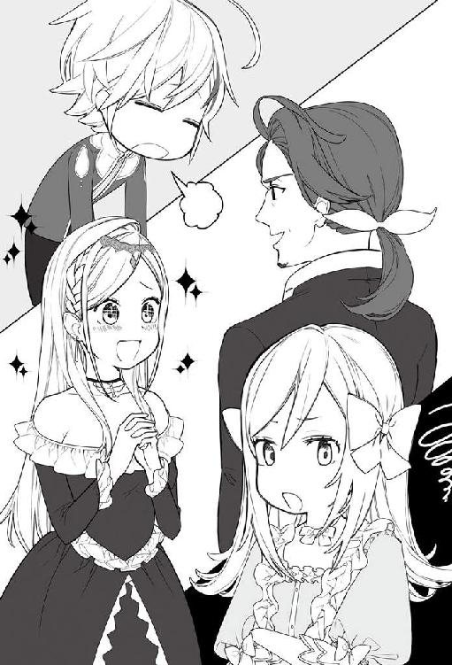
カインがガルムの言葉に冷や汗を流す。
「ステータスを見せることはできるか？ どれくらいレベルを上げたんだ？」
さすがの家族でも、今のステータスをそのまま出すわけにもいかない。
隠蔽するにはステータスを開いてから操作する必要がある。今は素の状態となっており、スキルや加護についてもレベル10と表示されてしまう。
「すいません父上、今はステータスを見せることができません。ただ、加護の影響で人より大幅な上昇率だと思います。──たしかに一人でこっそり森で魔物の狩りをしたこともあります」
ガルムに向かって頭を下げ、断りをいれる。
「──まぁ良い。今日は色々とありすぎたからな。夕食時にはマリアやジン、アレクも帰ってきてるだろう。カインはみんなと会うのは久しぶりだろう？」
「そうですね。ジン兄様やアレク兄様はずっと王都にいらっしゃったので小さい頃に少しだけお会いした記憶があります」
「そうよね～。私だって小さい時に会った記憶しかないもの」
「夕食までゆっくりするといい。部屋に案内させる」
王都のシルフォード家のメイドに案内され部屋に入る。
ベッドに飛び込み天井を見上げる。
「さすがにこのステータス見せるわけにもいかないよな......」
『ステータス』
【名前】カイン・フォン・シルフォード
【種族】人間族 【性別】男性 【年齢】十歳
【称号】辺境伯家三男 転生者 神の使徒 神童 魔物の森の天敵 自然破壊者 竜殺し スケコマシ
【レベル】２８５
【体力】４，８９７，２４０／４，８９７，２４０
【魔力】９４，５７３，４９０／９４，５７３，４９０
【能力】ＳＳＳ
【魔法】
創造魔法レベル10 火魔法レベル10 風魔法レベル10
水魔法レベル10 土魔法レベル10 光魔法レベル10
闇魔法レベル10 時空魔法レベル10 生活魔法
【スキル】
鑑定レベル10 アイテムボックスレベル10 武術レベル10
体術レベル10 物理耐性レベル10 魔法耐性レベル10
【加護】
創造神の加護レベル10 生命神の加護レベル10 魔法神の加護レベル10
大地神の加護レベル10 武神の加護レベル10 技能神の加護レベル10
商業神の加護レベル10
どこから見てもやりすぎとしか思えない。オークの群れを殲滅したことにより、さらにレベルが上がっていた。
今回は断ることができたが、ガルムを含め家族にも疑われることになるだろうとカインはため息をつく。
成人までステータスを家族に隠すことができたら、冒険者となり自由に生きようと思っていたが、今回、叙爵され独立した貴族になったことで予定は崩れていく。
教会でまた神々に相談しようと思ったカインであった。
ベッドに転がりステータスを眺めていると、部屋がノックされシルビアが入ってくる。咄嗟にステータス画面を閉じ、何事もなかったかのようにシルビアのほうを向いた。
「そろそろ夕食の時間になります。マリア様、ジン様、アレク様もお帰りになられております」
「うん、わかった。今行くよ」
ベッドから起き上がり部屋を出て、シルビアに案内されダイニングへ向かう。
すでにダイニングにはサラとレイネが待っていた。カインはレイネの隣に座る。
少し時間が経ち、ガルム、第一夫人のマリア、長男のジン、次男のアレクが入ってきた。
「カイン、大きくなったな」
二人の兄が笑顔を向ける。カインが五歳の洗礼の時には、すでに二人はマリアを含め王都で生活しており、小さい頃に遊んでもらった記憶しかなかった。
「ジン兄様、アレク兄様、ご無沙汰しております」
カインはこの屋敷で生活をしたかったが、すでに新しく屋敷を拝領することが決まっているため、そこに移るまでの間だけこの屋敷にいることになっている。
食事をしながら、今回叙爵され男爵となったこと、屋敷が与えられたことが伝えられた。十歳で叙爵されることは普通ありえないことなので、初めて聞いた者は皆、一様に驚いていた。そして婚約のことをガルムが伝えると、マリア、ジン、アレク共に先ほど以上の驚きの声があがった。下級貴族である新興男爵に王女殿下、公爵令嬢が嫁ぐなど叙爵以上にありえないからだ。
興奮したジンとアレクは次々と質問を浴びせてくる。
「カインは屋敷が与えられたらそこに住む予定なのかな？」
「その予定です。人の手配も王家からしてもらえるとのことで」
「近くだったらすぐ会えるから安心だね。それにしても王女殿下とサンタナ公爵家のご令嬢か......色々と大変そうだね」
「......はい、そうですよね......」
一同に苦笑いしかできなかった。それでも一家が勢揃いしたこともあり、雑談も進み楽しい食事の時間は瞬く間に過ぎていった。
お披露目会まではまだ数日あるということで、今日は王都を散策することにした。
もちろん一人で行かせてもらえるはずもない。
サラ、レイネと一緒に馬車に乗り、御者は執事のセバスがしてくれている。
「レイネ、カイン、どこか行きたいとこある？」
サラが聞いてくる。
洗礼時に神々と会うことはできたが、デタラメな数値になったステータスを含め神々に訪ねたいことがあり、教会に行きたいと思っていた。
「教会へ行ってみたいです。王都に無事に着きましたし、五歳の洗礼を受けてからまだ行っておりませんので」
「そうね、カインは加護が多いからお礼をしておいたほうがいいわね」
「教会に行ったら、その後は洋服を買いにいきたい！」
「そうしましょう。セバス、最初に教会に行ってくれる？」
「承りました、奥様」
城下街を馬車が進んでいく。窓から見える王都の街並みは綺麗に区画され整備されている。王都の人口は三十万人、エスフォート王国全てで約百万人と言われているが、戸籍という概念がないためそこまでしっかりと把握は出来ていない。
馬車で街並みを進むと、二十分ほどで教会に到着した。王都の教会はやはりグラシア領にある教会より規模が大きかった。マリンフォード教国より各国に一人だけ派遣される司教がいるからであろう。
馬車から降り教会に入っていく。
入口でシスターにお布施を払い、祈祷する場所へと進む。
礼拝堂の正面には、七柱の神体が飾られている。この神体もグラシア領よりも立派だった。
七柱の神々の中心には創造神ゼノムの像が飾られている。実際に会ったことのあるカインは記憶と見比べるが正直似ていないと苦笑する。
膝をつき祈りを捧げるとカインの視界を光りが覆い尽くしていく。
目が慣れてくると、以前、洗礼の時にきた真っ白い世界だった。
テーブルが正面にあり、相変わらず七柱の神々が座っていた。
「ご無沙汰しております。王都に無事に着きましたので、洗礼のお礼を兼ねて教会にお伺いしました。ここに来ることが出来るか心配でしたが良かったです」
カインは頭を下げ挨拶をする。
「フォッフォッフォッ。やっときたかカインよ。待ちかねたぞ。まぁお主が何をやっていたかは良く見ておったけどな」
「見ていたのですか？」
カインは疑問に思い問いかけた。
「うむ、こんな感じにな」
ゼノムが手をかざすとテーブルの上にいくつものスクリーンが現れ映像が映し出される。そこにはステータスを見て手を床についている姿や、冒険者ギルドでの戦闘、王都に来る途中であったオークとの戦闘。極めつけは馬車で両手に花状態まで映し出されていた。
「もう！ こんなの見ないでくださいっ！」
カインは自分の行動を映像で見ていると恥ずかしさで赤面していく。
「基本的にわしたちは見守ることしかできんのじゃ。お主の行動はなかなか面白くてな、ついみんなで見守ってしまうのじゃよ」
「プライベートなとこは勘弁してくださいよ、まったく......」
「まぁそう言うな。お主がここに来るのを、首を長くして待っておったのじゃ。今日はグリムとパナムから話があるのじゃ」
待っていましたとばかりに技能神グリムが話始めた。
「そうそう、カインよ。こっちの世界には娯楽が少なくての。前世の知識で娯楽の一つでもつくってくれんかのぉ」
確かにこの世界は娯楽が少ない。夜は早く寝るし娯楽で遊ぶという概念があまりない。飲んで騒ぐのが普通だ。
「娯楽といっても、知恵を出すくらいしかできませんよ。自分で作ったことないですし」
「それはわかっておる。どこかの商会と組んで作ればいいだろ。最初に作ったものをパナムに納めれば登録される。そうすれば複製されることもあるまい」
この世界でも特許と同じようなものがある。最初に考えて制作した物を商業神パナムに奉納することにより登録され、あとから複製しようとすると神罰が下る。
どのような罰があるかカインは興味があったが、「聞きたいか？」と不気味な笑顔を浮かべたため聞くのをやめることにした。
「わかりました。簡単に作れるリバーシくらいならなんとかなると思います。商会の人と相談してみますね」
「うむ、楽しみにしておるぞ」
グリムもパナムも笑顔で頷く。
「そういえば聞きたいことがあるんです。俺のステータスなんですけど、一般的に見てどうなんですか？」
カインは素直に聞いてみる。
「うむ、すでに数字で言えば人外だな。経験がついていってないが、今でも人類最強だろうな。そのまま──亜神にでもなるか？」
「亜神って......」
「神獣や神竜と同類だな、もうかなり近くなっておるが。まぁわしらにはまったく及ばないがのぉ」
ゼノムはカインを見つめ笑っている。
知らない間に人類最強と言われるまで成長していることにカインは驚きを隠せない。
「ただ、一人でできることには、限界があるのはわかっていたほうがいい。無理はするなよ。そろそろ時間じゃな。また来ると良いぞ」
ゼノムの言葉を最後にカインの視界はまた光りに包まれた。
気が付くと、礼拝堂だった。
七柱の神体に頭を下げ礼拝堂を後にし、シスターにお礼を言い教会を出た。
「カイン、礼拝終わったの？」
「うん。神様たちにお礼を言ってきました。沢山の加護をありがとうございますって」
「次は洋服を見に行きましょう！ 王都のお店見るの楽しみね」
馬車に乗り込み、また街中を進んでいく。商業街に出て一軒の店の前で馬車は止められた。
「到着いたしました」
御者のセバスが店に着いたことを告げる。
馬車から降り店に入ると、そこは平民の上級クラスあたりの品揃えのお店だった。貴族好みの華美な店でないのが好感を持てる。サラとレイネに連れられてフロアを登ると、そこは女性専用の売り場だった。
「えっ、ここって女性専用......」
二人が服を選んでいる間、フロアには男性が誰一人おらず、待っているにはとても辛い時間が続く。
二人はカインに気にした様子もなく、次々と服を持ち更衣室に入っていく。居心地が悪くこっそりと一度店を出た。
通りは商店が立ち並んでおり、数軒隣に雑貨の店があったので暇つぶしにそちらに向かう。
店に入ろうとしたら、見知った顔があった。いや、見知った〝耳〟といったほうが正解だ。
久しぶりに見る顔にカインの頬が緩む。五年が経ちお互いに成長しているがすぐにわかった。
「おーい！ パルマ～！」
グラシア領のお披露目会に来てくれていた猫耳娘のパルマだ。
「えっ、あっ、カイン様？ なんでこんなとこで......」
商品を並べていたパルマは、急に現れたカインに驚き慌てた感じでアワアワしている。
パルマが慌てていると店の奥から声がする。
「おーい、パルマ。知り合いでも来たのか？」
店の人が出てきた。パルマの父親のサビノスに似ているがもう少し年上に見える。
「おっ、パルマの知り合いかい？ 可愛い坊ちゃんだな」
「伯父さん、カイン様は貴族様だよっ！」
「えっ！！！ これは失礼しました」
伯父と呼ばれた男性は礼儀正しく頭を下げてくる。
「カイン様ごめんなさい」
猫耳をシュンとさせパルマが謝るが、カインは猫耳に夢中だった。
（相変わらず可愛い！ その耳を触りたい）
「気にしないでください。一人ですし。普通はわからないですよ。カイン・フォン・シルフォードです。グラシア領主の三男です」
猫耳に夢中だとは悟らせないようにカインは答える。
「──辺境伯様の......これは大変申し訳ありませんでした」
爵位を聞き上級貴族の子息だと知ると、土下座しそうな勢いで謝りはじめた。
「本当に全然気にしていませんから。それよりも店の商品を見せてもらってもいいですか？」
「はいっ！ どうぞご覧になってください。あ、申し遅れました。パルマの伯父でタマニスと申します。弟のサビノスがいつもお世話になっております」
「こちらこそよろしくお願いします。そういえば、パルマはなんで王都に？ グラシア領の商会はいいの？」
父親の元を離れ王都に来ているパルマの理由が気になった。
「今は王都の伯父さんの店で修行しているんです。お父さんが仕入れで王都に来た時に一緒にきたんです」
「そうなんだ？ ならこれから良く会うことになりそうだね」
「カイン様は王都のお披露目会ですよね？」
「うん、それでレイネ姉様も今年から学園に入学することになるから、家族揃って王都に住むことになったんだ。戻る予定もあったけど、王都に来る途中で──色々とあってね、陛下から叙爵されることになって、王都に屋敷をもらったのでそこに住むことになりそうなんだ」
「カイン様が貴族の当主様にですかっ!? それはおめでとうございます」
パルマは胸の前で手を合わせ目を輝かせている。
横でタマニスは辺境伯の子供というだけでも気が重いのに、独立した貴族の当主だと聞き、改めて恐縮する。
「ありがとう。これからよろしくね」
そう言って店の中を見て回る。雑貨がメインで置かれていて、木製の製品などもある。
木製品の加工ができるなら、神様に頼まれていた娯楽品であるリバーシを作れるかもしれないと思った。
パルマやその父親のサビノス、ここにいるタマニスを含めて良い印象を持てるので、商品の話をすることにした。
「パルマ、タマニスさん含めて相談があります。いいかな？ 実は、娯楽品を作りたいと思っているんです。それで制作と販売をお願いできないかと」
タマニスはカインの言葉を聞き、一瞬で真面目な商売人の顔になる。
「カイン様、奥へどうぞ。こちらで打ち合わせしましょう」
商会の奥には商談するための応接室があり、カインは勧められた席に座る。
カインは用意してもらった羊皮紙に内容を書いていく。八マス×八マスの絵を描き、三センチ位の両面を白と黒で塗った丸いものを六十四個必要だと書き加えていく。他にも詳細なことを書き込んでいく。
「リバーシといいます。まずは試作品を作ってもらいたい。それを商業登録してもらってからは制作と販売を任せたい。どうでしょう？」
カインの問いにタマニスは鼻息を荒くして勢いよく頷く。
「是非、やらせてください。アイデア料のみで制作と販売を任せてもらうとなると売上の二割を納めることになりますがよろしいですか。これは商業神様の契約をする場合の一般的な割合となります。内訳は三割が材料費、売上税一割、運送料二割、当商会の費用が二割になります」
タマニスが契約についてカインに説明していく。内容についても問題なく承知する。
「それで十分です。試作品ができたあとに確認させてください。その時に使い方も教えます。試作品の費用も置いておきますね」
カインは懐から小袋を取り出し、その中から金貨一枚をテーブルに置く。
これは叙爵された時に報奨金としてもらったものだ。白金貨十枚を受領したのだが使い道もあるわけでもなくアイテムボックスの中で死蔵されている状態なので金貨一枚程度なら問題ない。
「これでは多すぎますっ!!」
タマニスが焦って返してくる。
「これは先行投資と思ってください。試作品が出来て確認したあとは、量産体制に入ってもらいます。そのための資金にしてもらえればいいのです。儲かったら返してくださいね！」
笑顔でカインはタマニスを説得する。
「わかりました！ 是非やらせてください。サラカーン商会として、弟のサビノス含め全力でやります」
タマニスは椅子から立ち上がり姿勢を正した後、右手を胸に置き決意の表情を見せた。
「出来上がったら、シルフォード邸に連絡していただければお伺いしますので」
話が終わり、家族と買い物途中なので馬車に戻ると告げ店を出た。
馬車に戻るとすでに買い物は終わっていたらしく、レイネが怒った顔をして店の前で立っていた。大量に購入されたと思われる服を、セバスが馬車に積み込んでいるところだった。
「もう！ カインくんいつの間にかいないし！ 試着した姿を見てもらおうかと思ってたのに！」
「レイネ姉様の洋服は家でゆっくり見せてください。試着だけではわかりませんから」
カインは笑顔で答える。
「もうっ！ 帰ったら楽しみにしていてねっ！」
機嫌が直ったレイネはそのまま馬車に乗り込んだ。
単純な姉で良かったと思うカインであった。
但し、帰宅したあとに宣言通りに一通りの洋服を全て見ることになり、二時間ほどレイネに付き合うことになったのは仕方ないことだった。
作製を依頼して、一週間程でリバーシの試作品が出来上がったとサラカーン商会から連絡がきた。
セバスに御者を頼み店に向かうと、タマニスが興奮した様子で商品を出してきた。
商品はまだ少し荒削りな部分があり、いくつか指摘しつつ遊び方を教えた。
リバーシは子供から大人まで楽しめる娯楽品だ。ルールは簡単ですぐに覚えられるが奥は深い。
しかも制作は単純で量産も問題なくできる。
ルールを説明しながら一度対戦してみる。さすがに初めてリバーシをするパルマに負けるはずもなく完勝ではあったが。
「カイン様！ これはすごいですよっ！ 絶対に流行ります！」
負けたパルマでさえ大はしゃぎだ。隣で観戦していたタマニスも腕を組んで頷いている。
「まずは、完成品を登録しましょう。それで複製ができなくなる。ただ、他の商会が作れなくなるのは三年間だけなので、その後は誰でも作って販売することが出来るようになります」
特許期間みたいなものだとカインは納得する。三年間の独占が認められればかなりの数が出回るだろう。
「はい、それで構いません。あと、作る時に貴族用と一般用と二種類作りましょう。貴族や豪商は高級品を欲しがると思いますし。その代わり一般用は誰にでも買えるくらい値段を抑えたいと思っています。娯楽の普及が目的なので。貴族用で五十セット、一般用で千セットをまず作りましょう。売れ行きに応じて追加作製をするという感じで」
カインの説明にタマニスが少し渋い顔をする。
「そこまでこの商会では、余剰資金がないかもしれません。販売価格を貴族用が大銀貨一枚、一般用を銀貨一枚としたときに制作費として......えっと......」
さすがの数字にタマニスも少し考えている。
「制作費が三割で考えると、貴族用が銀貨三枚で合計百五十枚、一般用が大銅貨三枚で大銅貨三千枚、合計すると金貨四枚と大銀貨五枚ですね」
カインが暗算でさっと答える。
「カイン様、計算もすごい速いですっ！」
パルマが目を輝かせ尊敬した目を向け、タマニスもカインの計算の速さに感心するが表情は暗い。
「カイン様、さすがにそこまでは、当商会では捻出できません。ここに全て運営資金を投入してしまうと、他の物が購入できなくなります」
タマニスが申し訳なさそうな顔をし答える。
「それについては問題ありません。初期資金は僕が出します。持っていてもまだ使う予定がありませんしね」
カインは小袋から金貨五枚を取り出し机に置く。いくら貴族の当主とはいえまだ十歳の子供が金貨を簡単に出すことにタマニスは驚き、そして顔を引き締めた。
「カイン様ありがとうございます。サラカーン商会として、全力でやらせてもらいます」
タマニスは椅子から立ち上がり深々と頭を下げる。
「いいんですよ。実際に売れてからそのお金で返してもらえれば問題ありませんから。あくまで先行投資です」
「わかりました。まず、契約書を作成します。出来上がった商品と共に商業神様に奉納いたしましょう」
タマニスは契約書を羊皮紙に書き始める。契約書は三枚作成し、タマニス、カイン、商業神に商品と一緒に奉納することが一般的である。
中堅以上の商会には、簡易的な祭壇があり、そこに商業神を祀るのが基本とのことで、サラカーン商会にももちろんある。前世の神棚みたいなものだなと納得しながら、試作品として出来上がったリバーシと契約書を置きタマニスが祈り始める。
祭壇が一瞬光ったと思ったら、契約書とリバーシはすでに消えていた。
「おぉ!!」
思わずカインは驚きの声が出してしまった。
「こうやって、契約書を奉納することによって、確実に守りますと誓いを立てるのです」
「見せてくれてありがとうございます。それでは制作お願いします。販売は一ヶ月後を目安に行きたいと思います。あ、高級品のほうを十組ほど私が買いますので保管しておいてください。王家にも渡しますので王家用には豪華なものを一つ用意してもらえますか」
「お、お、王家にですかっ!? わかりました。商会の全ての力を使ってやらせていただきます」
王家と聞いて、タマニスは顔を青ざめている。
中堅規模の商会では、王家に商品を納入することはまずない。大手が独占しているからだ。
いきなり王家という言葉を聞けば、驚かないほうがおかしい。
カインの中では神との約束もあり、どうしてもつくる必要があった。
（商品が消えたということは、あの神様たちのところにいったのかな？ 楽しんでくれればいいんだけど）
実際に、この一ヶ月後に販売すると瞬く間に大人気となり、制作した在庫はあっという間になくなった。量産体制に入ったが、それでも生産が追いつかず、タマニスにとっては嬉しい悲鳴となった。
それはまた先の話。
王都にあるシルフォード邸では、カインがお披露目会に着る服の試着会となっていた。
参加者は、商会の人、サラ、レイネ、シルビア、そして主役のカインだ。
一度のお披露目会のために仕立てるのは勿体無い気がするが、貴族にとって十歳のお披露目会は、大事な事だと説明された。国王への謁見を含め、親たちも子供達を見極める為に必死になっている。
なぜなら、有力貴族の子が有能であれば、娘や息子を送り込みたいのだ。この国は一夫多妻制ということで、貴族は数人の側室を持っている。政略結婚や派閥の柵もあることを考えれば、将来有望な子供を見つけることができるこのお披露目会が、いかに大切なのかが理解できる。
ちなみにガルムに嫁は二人いるが貴族の中では少ない方だと説明された。しかもサラは元冒険者である。若いときは他の貴族の娘を何度も押し付けられそうになり、その経験をラメスタの街への道中で説明したのだ。
辺境伯といえば上級貴族に分類され、それも仕方ないことだと思われる。見染められ側室に入ることができれば、下級貴族にとっては辺境伯と縁を結べることになるのだ。
派閥同士の婚姻が一般的には多いが、ガルムは辺境伯として中立の立場でいる。隣国と接していて、いつ戦争になるかわからないのに、派閥なんかに構ってられるかと愚痴っていたことを、カインは思い出した。
カインの場合は、ガルムの息子だということで、確実に辺境伯と同じ中立だと思われている。
公表はしていないがテレスティアとシルクと婚約を結んだことにより、先々は国王派と思われても仕方ないだろう。高々と笑う国王とエリック公爵の顔が思い浮かびカインは苦笑する。
いくら前世の記憶があるといっても、経験は高校生と十歳だ。年を合わせてもたかが知れている。
百戦錬磨の王族と公爵相手に勝てる気などしなかった。
そんなことを考えていると、レイネから声が掛かる。
「カインくん！ ちゃんと聴いてる？」
「ごめんなさいレイネ姉様、ちょっと考え事していました」
「まったくっ！ カインくんは銀髪だから、この濃い青の生地がいいなって言っていたの」
生地を改めて見たが、濃い青というか蒼色でなかなかいい感じに思える。
「レイネ姉様が選んだくれた色いいですね！」
レイネが選んだ色を褒めると満面の笑顔を返し、デザイン選びに精を出し始めた。
（やはりレイネ姉様はちょろいな......）
少し邪な考えをしながらも生地合わせは進められていった。
「では、この生地をベースに作ってもらえますか」
皆が納得したことでサラが改めて商人に頼む。
「承りました。カイン様に合う服を是非とも作らせていただきます」
商会の人が商品をまとめ、頭を下げて意気揚々と退出して行った。
そして仕立てを頼んだ服は数日で出来上がった。商会の人が頑張ってくれたお陰で予定よりも早く仕立てられた。
出来上がった服を試着して、少し手直しをしてもらったことで、とても良い出来栄えとなった。
「カインくんならどこへ出ても恥ずかしくないわ」
レイネが何度も頷きながら断言する。
そういえば、レイネも二年前にお披露目会に出たんだと思い出す。
同じ年でいい人はいないのか聞いてみたが、まったく駄目だったそうだ。
レイネ曰く、旦那候補は「カインくんと比べても見劣りしない人」と決めているらしい。
弟と比べること自体をどうかと思い苦笑してしまう。
そうしている間に時は過ぎ、お披露目会当日となった。
11 王都お披露目会
王都でのお披露目会当日。
屋敷から出かけるのは、ガルム、サラ、カインの三人だ。
執事のセバスが馬車の御者をしている。
レイネはお披露目会とは関係ないので、家で留守番だ。
「レイネ、マリアの言うことを聞くのよ」
サラがレイネに伝える。
「わかっています、せっかくカインくんのお披露目だったから見たかったけど、着替えている時ずっと見ることが出来たから少しは満足できたし」
レイネは着替える時にずっと部屋にいたのだ。しかもシルビアも一緒に。
「カイン様が着替えるのに、専属のメイドがいないでどうするのですか」
と言いながら、キラキラした目でレイネと隣に並びずっと眺めていただけだったが。
「それでは行ってくる」
ガルムが最初に馬車に乗りこむ。
「レイネ姉様、いってきますね。シルビアも留守頼んだよ」
「いってらっしゃいませ」
サラもカインと共に馬車に乗り、セバスの合図で馬車は出発した。
「カインよ、お前はこの前の謁見で男爵になった。その年で独立して叙されることはまずない。今日のお披露目でも注目されるだろう。十分に注意しろよ。特に娘を紹介してくる親には注意だ。王女殿下とシルク嬢と婚約したことはまだ内密だからな」
「わかりました、父上。上手く対応してみます」
「十歳とは思えない考え方だよな......まったく」
カインの返事にガルムも呆れている。
馬車はゆっくりと貴族街を進み、屋敷から十分程度で王城についた。
「そろそろ、王城に到着いたします」
御者をしているセバスから声がかかった。
「いよいよですね、なんだか緊張します」
そして王城に到着し馬車から降りる。
案内されたホールでは、貴族と子供達がすでに話に花を咲かせていた。
見回しただけでも子供だけで三十人位だろうか、両親を含めると百人近くがホールにいる。
両親もグループごとに分かれて、ワインを飲みながら会談をしているように見える。
（あれが派閥なのかな）
一番多いグループには叙爵の時に反対してカインの事を睨みつけたコルジーノ侯爵がいた。
周りから囲まれている状態なので、派閥でもまとめ役になっているのだろう。
見た目が少し生意気そうな子供を連れており、その子供の後ろには二人の子供がついている。
ホールに入り家族で挨拶に回る。王家の人たちはまだ来ておらず、ガルムに連れられエリック公爵のところへ向かうと、隣にはシルクもいた。カイン達に気づきカインに向かって笑顔で小さく手を振る。
シルクに向かって小さく手を振り返したところでエリック公爵と目が合った。
エリック公爵はシルクとカインの顔を順番に見返してニタリと笑顔を向ける。
（その笑顔──怖い......）
「エリック公爵、先日は色々とお世話になりました。改めて紹介します。三男のカインです」
ガルムが紹介を始める。先日、謁見の後に話をしたが、あの時の話は非公式となっており、公の場では初めての挨拶となっている。
「辺境伯ガルム・フォン・シルフォード・グラシアの三男、カイン・フォン・シルフォードです。よろしくお願いいたします」
姿勢を正して一礼し挨拶をする。
「これはこれは、英雄カイン男爵ですね。公爵をやっておりますエリック・フォン・サンタナ・マルビークです。改めてうちのシルクを助けてもらってありがとう」
エリック公爵が笑顔で挨拶を返す。
「うちの次女のシルクになります。これからも色々とよろしくお願いするね」
エリック公爵がウインクし、シルクを前に出す。
「シルク・フォン・サンタナです。カイン様には危ないところを救っていただきありがとうございます」
シルクは、薄いピンクのドレスを着ていた。長い髪は頭の上でセットされ、どこかの王女様と言われてもおかしくはないほど綺麗だった。
「シルク嬢、ドレスも良く似合っています。──とても綺麗だ。どこかの王女様と言われても遜色ないですね」
（高校生プラス十歳の俺だ、十歳児を見ても可愛いとしか思えないし）
軽い気持ちでシルクのことを褒めた。
だが、シルクには効果抜群だったようで顔を真っ赤にしてしまう。
「カイン様......本当に似合っています？」
上目遣いをしながらカインに聞く。
「うん、とっても似合っているよ。素敵ですシルク嬢」
頬を染めたシルクに改めて伝える。
「カイン様もその蒼色の服とっても素敵です。カイン様にとても似合っておりますわ」
カインとシルクの二人が見つめ合っていると、エリック公爵がわざとらしく咳き込んだ。
「ガルム辺境伯、カイン男爵は十歳でここまで女性の扱いに慣れているとは......大丈夫なのですか？ 先々心配ですなぁ」
「いやはや、姉のレイネがお転婆でしてな。気を付けないと機嫌を悪くするのでそれで慣れているのかと」
二人とも笑っている。挨拶が終わりカイン達の後ろには、エリック公爵に挨拶をする列が出来ていた。
「それでは、またあとで」
と言って、エリック公爵の元を離れる。シルクがカインに向けて小さく手を振っていたので振り返した。
「カイン、女性の扱いに慣れすぎてやしないか？」
ガルムがカインの耳元で話す。
「レイネ姉様は、おだてるとご機嫌になりますからね。相手の顔見て気をつけるようにしているんです」
「──本当に十歳らしくないな」
年相応に思えないカインに苦笑するガルムだった。
ガルムと旧知の貴族たちに順番に挨拶をしていく。やはり先日の叙爵のこと、オークたちを殲滅した時の話になった。他にも年上と年下のどちらが好みかとか......。ガルムの言った通りになったことでカインは心の中で苦笑するも実直に返答していく。
やはり貴族の親としてみれば、上級貴族の嫡男に娘を嫁に出したいのが本音だろう。それか叙爵されて独立した貴族だ。辺境伯の子供であり、十歳で叙爵されたということは優秀だと思われているのだろう。まだ十歳なら婚約者も決まってはいないはずと次々に娘を紹介するが、カインはテレスティアとシルクという絶世の美少女を見ている。心が浮つくこともなく、当たり障りない言葉で返事をしながら挨拶に回っていく。
会談しながら挨拶して回っていると、音楽がホールに響き渡った。その音楽が徐々に静まっていき止まると同時に国王と王妃、第三王女テレスティアが入場してきた。
国王が中央の玉座に座り、その横には王妃が、反対側にはテレスティアが座った。
一段高いところに座っているお陰でテレスティアが良く見える。白いドレスでティアラを乗せている。薄く化粧もしていて美少女に更に磨きがかかっている。
他の貴族の子供たちも、テレスティアの美しさに頬を赤くし見惚れている。
そして国王の挨拶がはじまった。
「今日は遠いところから集まってもらって感謝する。今ここにいる子供たちは、今年十歳になる。将来、この国の中枢で働いてもらい、この国が発展するように日々努力してもらいたい。それでは乾杯をしよう」
来場者がグラスを持つ。子供達はもちろんジュースだ。
「乾杯」
「「「「「「「「「「乾杯」」」」」」」」」」
乾杯が終わるとホールにはゆっくりとした音楽が流れ始める。
乾杯が終わったあとは、皆、子供を連れて国王のところに挨拶に向かう。
但し、挨拶に行くにしても序列があり、上級貴族からという暗黙の了解があった。
カインは進んで国王と話をしたいと思っていなかったが、挨拶に行かない訳にもいかず、順序についてはガルムに任せている。
数組が挨拶を終えたところで、ガルムから声が掛かる。
「そろそろ陛下のところにいくぞ」
その言葉にカインは頷き、ガルムと共に国王のところに向かう。
「これは陛下、テレスティア王女殿下おめでとうございます。三男のカインでございます」
「カイン・フォン・シルフォード男爵でございます。本日はお招きいただきありがとうございます」
ガルムとカインが挨拶する。
「ガルム、カインよ、よく来てくれた。今日は楽しんでくれ」
「カイン様、今日の服も素敵です。よくお似合いです」
「テレスティア王女殿下もとても美しいです。出てきたときは、女神が現れたかと息をするのを忘れる位に見惚れてしまいました」
カインの言葉にテレスティアの顔が真っ赤に染まっていく。
「──ガルム、どうやったらこんなスケコマシに育つのだ？ 見てみろ、テレスティアを」
国王が視線をテレスティアに送ると、熟れた林檎のように真っ赤な顔して、両手で頬を抑えクネクネと身悶えていた。
国王もガルムもその姿に顔を引きつらせている。
「陛下、本日は献上したいものがありますのでお持ちいたしました。アイテムボックスから出してもよろしいでしょうか」
カインが国王に許可を願い出る。
「うむ、構わんぞ」
国王が頷いたことを確認し、カインはアイテムボックスからひと組のリバーシを取り出した。
王家に献上するために特別製として作られており、シリアルナンバーも〝０００００１〟と彫ってある。重厚感のある板に彫師が精魂込めて彫刻を行った、制作費だけで金貨一枚した特別製だ。
「王都のサラカーン商会と手を組み、開発した娯楽品になります。名前を『リバーシ』といいます。商業神様に登録を行い、今後販売する予定でございます。まずは販売する前に献上をと」
「うむ、娯楽品とな。カイン、この式が終わったら応接に案内させる。これの詳しい話を聞きたい。良いな？」
先ほどまでの笑顔とは違う無言の圧力がカインに襲いかかる。
献上品を渡すだけのつもりが、面倒なことになりそうな予感がしてカインは額に汗をかく。
「──わかりました。終わりましたらお伺いいたします」
後ろには国王に挨拶する列ができており、早々に横にずれ次の人に譲る。
テレスティアは、まだ顔を赤くしたままで頬に手を当てて妄想しているようだった。
「カイン、知らない間にそんなことにまで手を出していたのか」
ガルムもカインの行動力には呆れ顔だ。
「先日、母上とレイネ姉様と買い物に行ったときに、グラシア領でのお披露目会にきてもらっていた商会の人と会ったのです。それで相談をさせてもらって制作してみました。まだいくつか持っているのであとで渡しますね」
「まったく、魔法、剣技、アイテムボックスの次は商売か。想像以上のことを......」
「男爵を拝命して、給金が出るとのことでしたが、もらった屋敷の維持を含めると、足りないかもしれないと思い商売を考えました。ただ、子供の私では信用もありませんし、商売はできないのでアイデア料をもらって制作と販売を委託することにしたのです」
「わかったわかった。カインはもう叙爵されたし立派な貴族だ。自分で責任を持ってやってみるとよい。私はこれから色々と回るつもりだ、たまには子供らしく子供達だけで話してこい」
「カイン、変な子に引っかからないようにね～」
そう言い残しガルムとサラは大人だけが集まる集団に向けて行ってしまった。
解放されたことにより、カインは子供たちの集団の様子を伺う。
すでに親同伴の挨拶は終わっており、子供たちもいくつかのグループに分かれていた。その中で一番多い子供たちのグループに向けて歩いて行った。
グループの会話には入らず後ろに立ち、子供達の会話を聞いていく。
この会場で知り合いはテレスティアとシルクしかおらず、子供同士の会話を聞きながら時間を潰しているとシルクが近づいてきた。
「カイン様、お一人なの？ テレスはまだ陛下といるから一緒にお話しよっ」
そう言って、両手にジュースを持ってきた。グラスをひとつ受け取り近くの椅子に座って二人で話す。
「思ったより人が多くてびっくりしたよ。テレスのとこで話しているわけにもいかないから、カイン様がいてくれてよかった」
「シルク、そろそろカイン様はやめようよ。様はいらないよ」
「んー。ならカインくんで！ カイン男爵って呼んだほうがいい？」
いたずらっぽい笑顔を浮かべたシルクにカインは頬を緩ませる。
「いやいや、カインくんのほうがいいです」
楽しい会話を続けていると、三人の男の子が二人に寄ってきた。
「これはシルク嬢、ご機嫌うるわしく。本日も素敵なドレスですね」
「ハビット様、こんばんは。ありがとうございます」
カインに対しての態度とはまったく違う素っ気ない顔で、シルクは挨拶を返す。
そして、またカインの方を向き、いつもの笑顔のシルクに戻る。その変わり様に少し驚きながらもカインは話を続けた。
三人組の一番後ろについてきた取り巻きの一人が声を掛けてきた。
「そこのお前、コルジーノ侯爵の嫡男ハビット様がきているんだ。挨拶くらいできないのか？ しかもハビット様がシルク嬢に話しかけているのに邪魔するとは」
コルジーノ侯爵の名前が出たことでカインは眉間にシワを寄せる。
謁見の時に睨みつけてきた侯爵の顔を思い出したからだ。
「はい、こんばんは。ハビット殿、初めましてですね。カイン男爵です」
カインはあえて家名を名乗らなかった。先日叙爵されたことにより『男爵』とは名乗ったが。
少しばかり引っ掛けた回答にカインは黒い笑みを浮かべる。
そして予想通りに取り巻きが見事に引っかかった。
「男爵の子息風情が、侯爵様の嫡男、ハビット様に向かって『殿』付けとはどうなのだ？ 様をつけないか様を!!」
同調するようにもう一人の取り巻きも同じく息巻く。
「そうだ、僕ら二人も子爵の息子だ。男爵の息子なら僕らにも様付けをしろ」
シルク嬢は、この二人の言っていることを理解できずに首を傾げる。
「二人とも待て。カインとやらは、姓を名乗れないほど貧乏男爵なのであろう。今謝罪してくれれば二人のことは僕が抑える。シルク嬢も心配しているからな」
ハビットはシルクが気になるらしく、チラチラとシルクの顔色を伺っている。
シルクに男らしいところを見せたいようで胸を張って答える。
「ちょっと、カインくんは男爵の息子じゃな──」
「ちょっと待って」
「え？」
シルクが話そうとしたところを、カインが手で制した。
「すいません。侯爵の息子『様』、子爵の息子『様』、改めて名乗りますね」
「息子様」というおちょくられた言葉に、三人とも怒りを覚えた。
取り巻きの一人がカインの胸ぐらを掴もうとする。
「ガルム・フォン・シルフォード・グラシア辺境伯の三男、カイン・フォン・シルフォード男爵です。男爵の息子ではなく僕が男爵です」
三人に満面の笑みを浮かべカインは答える。
その言葉に、三人の動きが止まった。もちろん胸ぐらを掴もうとしていた取り巻きもだ。
いくら下級貴族の男爵といえど叙爵されて独立した貴族である。付き合いの関係で、上級貴族の子息のほうが上位だと思われるが、上級貴族の子供より叙爵された貴族のほうが上位なのである。
しかもガルム辺境伯は、コルジーノ侯爵と同じ派閥でもない。辺境伯と侯爵は職務が違うだけで同等である。
その辺境伯の子息であり、男爵本人に対して、散々失礼な対応をしたことに、三人とも焦りを覚える。
「カイン様は、この間、私とテレスティア王女殿下の馬車がオークの群れに襲われた時に、一人で三十体以上も倒して私たちを助けてくれたの。それで先日、男爵に叙爵されたのよ」
シルクがなぜか胸を張り答える。
「......僕も親にそのことを聞いた。剣も魔法も一流で一人でオークジェネラル率いる群れを殲滅したと。そして僕たちと同じ年で叙爵された子がいると」
取り巻きの一人が親に聞いた話を説明していく。
その言葉を聞いて、ハビットと取り巻きが震えている。
そして一歩一歩下がっていく。
「し、し、失礼しました。男爵とは知らず。ぼ、僕たちは用事がありますのでこれで失礼します」
ハビットが身体を翻しそのまま逃げていった。
もちろん取り巻きもハビットを追うように一緒に逃げていく。
カインは邪魔者がいなくなったことで席について、ジュースを一口飲み一息つく。
「それにしてもカインくんって結構腹黒いのね。初めて知ったよ。笑顔が悪いこと考えているってすぐにわかったもん。それにしてもあの三人の驚いた顔ったら──」
シルクが目に涙を溜めて笑っている。
思わずやってしまったと思ったカインは失敗した顔をする。
「こ、こ、これは......」
動揺するカインにシルクはいたずらっぽく微笑む。
「今度、テレスにも話しちゃおうっと」
その言葉でカインはさらに動揺する。
「なんてね！ 今度デートしてくれたら黙っていてあげる」
カインは肩を落とし、女性には勝てないと思い頷く。
「......うん。是非に」
（なぜか十歳に負けた気がする）
「やった！ じゃぁ父様にあとで言っておくね！」
カインの気持ちを他所に、シルクはデートが出来ることに喜んだ。
レイネの事をいつも丸め込んでいたおかげで、多少自信はあったがシルクには勝てる気がしないと悟った。
先ほどまでの出来事をシルクにからかわれながら話していると、テレスティアも解放され二人に向かってきた。
「やっと解放されました。カイン様はずっとシルクと話していましたね！ 楽しそうでいいですね......」
ちょっと拗ねているテレスティアの顔を可愛いと感じ、思わずカインの頬が緩む。
「そういえばねぇ～さっきね、カインくんがくろ──」
「ちょ、ちょっと待った！」
カインは思わずシルクの口を抑えた。片手でシルクの口を抑え、片手で自分の指一本を口にあててシーっとやっている。
「カイン様、未婚の女性の唇を触るなんて......。これはエリック様にご報告が必要ですね」
テレスティアがニコニコしながら答える。目はまったく笑っていないが。
「あっ、ごめん」
シルクの口から手を離す。
「カイン様、正直に言ってください。シルク、何があったの？」
心配そうにするテレスだった。
「ん？ なんでもないよ。カインくんと今度デートするって話」
あっさりシルクがバラしてしまったことにため息をつく。
「デ、デ、デートですって！ シルクだけずるいっ！ それにいつのまにか『様』から『くん』で呼んでいるし！ ずるいですわ。私もカイン様とデートしたいです」
顔を赤くしてテレスティアがカインを問い詰めていく。
「──わかりました。テレス、今度デートしよう」
カインがそう言うと、テレスが耳まで赤くしている。
「絶対行きますわ。楽しみにしております」
真っ赤な顔をしたテレスティアは拳を力強く握る。
その時、三人の後ろから声が掛かった。
「何処に行くのだ？」
「もちろんカイン様とデートですわ！」
デートが決まったことにより、笑顔になったテレスティアが振り向きながら答えた。そして相手を見て固まった。
そこには国王が立っていた。
にこやかな笑顔だが、もちろん国王の目は笑っていない。よく見ると額には青筋が立っている。
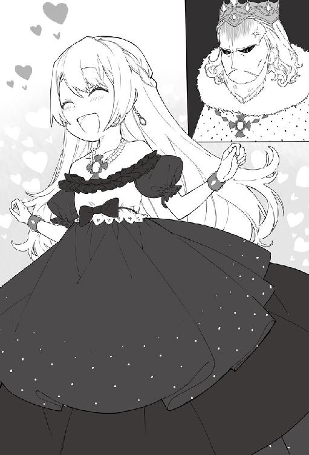
国王の顔を見てカインは青ざめる。
「──ふむ、カインよ。テレスのことでも、別室でじーっくりと話す必要がありそうだな。そろそろお披露目会も終わる。先ほどの遊戯の話もあるし、男同士、心行くまで話そうではないか」
そう言って、カインの背中をバンバンと叩く。
とても子供に込める力ではないとカインは苦笑する。
（ちょっと痛い。普通の子供なら泣いているぞ）
「......はい、陛下、わかりました。後でお伺いいたします」
力なく頷くしかなかった。
お披露目会も終わり、今はいつもの応接室だ。集まっているのは国王、王妃、テレスティア、宰相、エリック公爵、シルク、ガルムにサラ、カインの九人が円卓を囲んでいる。
カインは保管しているリバーシをアイテムボックスから三組出しテーブルに置く。王家献上用は一組しか作製しなかったことで、テーブルに置いたのは貴族用のものだ。一般向けより彫刻が施され豪華に仕様になっている。
ルールは簡単で一人で順番に黒白の石を順に置きながら説明していく。
同席者は周りを囲んで説明を聞いていたが、すぐに理解出来、二人組となってゲームを始めていく。
「これは面白い！ ルールは簡単だし、置き方を考える必要もある。子供から大人まで楽しめるな！」
国王も手を叩き大喜びしている。もちろん他の皆もすでに夢中だ。
「一般向けには銀貨一枚で買えるようにしてあります。少し高級にした貴族用でも大銀貨一枚で買えるかと」
「うむ、それくらいなら問題ないな。それにしてもカインは商売もできるのか。自分で商会を立ち上げてみるのもいいかもな」
王都に来たばかりで伝手がなく、今回はサラカーン商会と手を組んだが、想像以上に良いものが出来た。ノウハウもないことから、当分の間は今のまま商売を続けるつもりでいた。
国王が予想以上にのめり込んでしまい、カインはリバーシに散々付き合うことになった。
満足し散開になるまで二時間ほどの時間を要した。
存分にリバーシを楽しみ、満足してくれたことで、帰路につくことになった。
「では、陛下。これで失礼いたします」
頭を下げて一礼し、ガルムと共に退出しようとする。
「──ちょっと待て、そういえばうちのテレスとデートに行くって言っていたな？ どういうことだ？ そこに座って説明してみろ」
国王の言葉でカインは固まった。ガルムもその言葉に苦笑する。
「そういえば、カインくん。うちのシルクともデートの約束をしたみたいだね？ 婚約するとは決まっているけどまだ内密で動いているから気をつけるようにね」
さらにエリック公爵が爆弾を落とし追い打ちをかける。
その後、国王と公爵から散々責められたカインは、ぐったりとして帰宅することになった。
12 屋敷拝領
お披露目会から数日が経ち、カインはサラカーン商会と屋敷の往復を繰り返していた。
国王にリバーシを献上し、気に入ってくれたことをタマニスとパルマに説明した時は本気で驚いていた。完成してまだ間もないのに、いきなり国王に献上と聞けば仕方ないことだろう。
これから一般向けに販売するにあたり、相当数を用意する必要があることを話し合っていた。
商談も終わり屋敷に戻ると、王城より呼び出しのための使者が待っていた。
「カイン男爵、陛下が王城でお待ちですのでこのまま馬車で同行願います」
応接室に入って早々に使者からカインに伝える。
「申し訳ないのですが......今すぐにですか？ 普通なら日を改めるとか......」
「陛下から『すぐに連れてこい』と承っております」
申し訳なさそうな顔をした使者に断るわけにもいかず、そのまま使者の馬車に乗せてもらい王城へ向かった。
王城に着くとメイドが待っており、いつもの応接室に案内される。
席に着くと部屋の端でメイドが紅茶の用意を始めた。
さすが王城というべきであろうか、用意された紅茶は高級品で香りが良くとても美味しく感じられた。紅茶を味わいながら時間を潰していると国王とマグナ宰相が部屋に入ってきた。
カインはとっさに席を立ち礼節をとった。
「待たせたな、五月蝿いコルジーノがいてな、なかなか話が終わらなかったのじゃ」
「美味しい紅茶を出していただきましたので、楽しませていただきました」
国王がいつもの席に座り、隣にマグナ宰相が座る。二人が座ったのを確認してからカインが席に着いた。
「まず、お主に渡す屋敷が決まったのだ。元々は子爵家が持っておったが、脱税に横領、誘拐奴隷等犯罪のオンパレードだったからの、取り潰しして全て没収した。今は王家が管理しておる。それをお主にやると決めようとしたらコルジーノのやつめ、反対してきて長引いたわい」
（息子といい親といい......）
コルジーノ侯爵の顔を思い浮かべてカインは呆れる。
「誰が何を言おうがわしが決めた事だから問題ない。この先通うことになる学園にも王城からも遠くないから便利じゃぞ。あとでマグナに案内図を貰うといい。これで用事は済んだな。──ではやるぞ」
国王はそう言いながらリバーシをテーブルに乗せる。
「エリックのやつがなかなか強くてな、発案者であるお主とやれば少しは強くなれるじゃろう？」
国王のハマりっぷりに宰相のマグナもカインも乾いた笑いしかできなかった。
カインは対面に座り順番にパチリ、パチリとリバーシを打ち始める。
「あ、そこ置いたら角取られちゃいますよ。ほら」
「あっ！ お主!! 王に向かって少しは容赦しろっ！」
「陛下、強くなるために経験したかったのでは？」
「むぐぅ、ではここじゃ！ どうじゃ」
国王と十歳のカインが真剣にリバーシを打っている。
時にうなり声を上げながら真剣な顔をした国王が石を置いていく。その姿を眺めながらマグナ宰相はため息をついた。
二時間ほど続けられたが、国王は一度もカインに勝つことなく終了した。「次こそは勝つぞ！」と息巻いていたが、次の面会があることを宰相から咎められ、渋々ながら諦めて部屋を出て行った。
「カイン殿、陛下がすまんな。これが屋敷の案内図と鍵になる。執事のほうは今、公募を出しているので決まったらそちらに教えよう。メイドは若手を数人、王城から派遣することになると思う。家具類は前のやつで悪いがそのまま置いてあるから好きにしてくれ」
カインは案内図と鍵を受け取った。
「マグナ宰相、ありがとうございます。屋敷は執事やメイドが必要な広さなのですか？」
貴族の屋敷ということもあり、カインは少し不安になる。
「ガルム辺境伯の屋敷ほどは広くはないが、貴族の屋敷だ、それなりの広さになる。貴族となると人を雇うことも大切な役目だからな。金は使わないと経済が回らないぞ。まぁそのことを今話しても仕方ないか。また陛下から相手をするように呼ばれると思う。その時はよろしく頼む」
「わかりましたマグナ宰相、屋敷ありがとうございました」
マグナは一言告げて国王を追って部屋を出て行った。
まだ夕食までには充分な時間があるので、馬車を断り王城を出て一人で貴族街を歩いていく。拝領された屋敷は貴族街より一般街に近いところにある。
王城から歩いて三十分ほどで拝領した屋敷についた。
「ここか、思ったより広いな」
目の前には百メートル四方の敷地で中央の奥に二階建ての洋館が建っている。
建物は凹のような形になっており、真ん中に入口が見える。
少し傷んだ門を開け、手入れがされておらず草が生えっぱなしになっている庭の中を歩き扉の鍵を開ける。
誰も住んでいない屋敷は埃が溜まっていた。扉を開けたことにより吹き込んだ風が埃を巻き上げていく。窓から差し込む陽の光が舞い上がった埃に反射して幻想的に輝いていた。
ホールの天井から下がっているシャンデリアも魔石の魔力が切れているため、灯りは窓から差し込む陽の光だけとなっている。
『光球』
手から光の球が浮かび上がり、ホールを明るく照らしていく。
ホールの装飾品は全てなくなっており、がらんとしていた。
「派手な装飾品は全て没収されているか、シンプルになっているからこっちのほうがいいな」
建物は扉の正面が階段と玄関ホールとなっており、右側にダイニングとリビング、キッチンなどがあった。左側はパーティーができるほどのホールと応接室などがある。もちろん貴族の屋敷ということで浴室もある。
二階にあがると両側に部屋がいくつもあり、主寝室から客室まで部屋を覗きながら確認していく。
「──こんなでかい家を、一人で切り盛りできるのかな。それにしても汚いな......ちょっと掃除でもするか......」
両手で魔力を練り、建物全体を魔力で覆うように広げていく。
『建物清掃』
魔法を唱えると建物内が一気に綺麗になっていく。壁の染みも絨毯の汚れも流れるように全て落ちていった。
『建物補修』
続けて魔法を唱えると、建物全体が光で覆われ新築時と同様に新しく変わっていく。
覆われていた光が消えると屋敷がまったく新築と変わらない状態になっていた。
「これでいいかな。あとはまた新しい執事さんに相談すればいいか」
数多くある部屋を覗きながら、自分の好みに合わせて必要に応じて魔改造していく。取り付けられている窓も魔改造されたことにより強度を増し、さらに透明感で溢れている。前世の知識を活かしながら魔改造された部屋を見て満足そうに頷いた。すでに各部屋に設置されているシャンデリアも魔力を流したことにより煌々と部屋を照らしている。
「あとは住んでからでいっか......」
先ほどまでと外観は変わらないが、新築同様に綺麗になった屋敷を見上げてカインは満足し、扉の鍵を閉めてからガルム邸に戻ることにした。
「お帰りなさいませ、カイン様」
屋敷に戻るとシルビアがホールで出迎えた。
「ただいま。そういえばシルビア、少し話があるんだけどいいかな」
「はい、大丈夫ですよ」
シルビアがいつものように笑顔で答える。
「さっき、陛下から拝領した屋敷を見てきたよ。ここの屋敷よりは小さいけど十分な広さがあった。マグナ宰相が執事や、メイドを手配してくれることになっているんだけど、できればシルビアにも僕の屋敷に来て欲しいかなって思って。もちろん父上に確認が必要だけどね」
シルビアはカインの言葉を聞き、涙目になりながら頷いている。
「もちろんカイン様についていきますよっ。カイン様のお世話は私の仕事ですから。連れて行ってくれなかったら、お暇をもらってでもカイン様のところに行くつもりでした」
シルビアが胸を張って答える。年頃とも言うべきか、ボリュームがある胸を強調されるとつい視線を向けてしまう。さすがに十歳の身体では欲情することはなかったが。
「夕食の時にでも、父上に話しておくね。とりあえず疲れたから部屋で休むよ」
シルビアにそう告げ部屋に戻っていった。
夕食の時間となり、皆がダイニングに揃ったことで食事が始まる。
「カイン、今日陛下に呼ばれたのは何用だったのだ？」
ワインを味わいながらガルムが声を掛ける。
「拝領する屋敷が決まったので、鍵をいただいてきました。あとは陛下とリバーシの相手を。その後、時間がありましたので、拝領した屋敷を見てきました」
「......リバーシか、先日、わしも陛下の相手をさせられたぞ。エリック公爵が強すぎると言っていたな。それにしてもいよいよカインも独り立ちか......、執事やメイドはどうすると言っておった？」
「マグナ宰相が手配してくれるそうです。執事については公募になると言っておりましたが」
「執事は大事だからな、貴族は他方に出掛ける事が多い。留守の間、屋敷を守ってくれるのも執事の仕事だ」
ガルムは後ろに控えているセバスに軽く視線を送る。
「それで、父上にお願いがあるんです。シルビアのことですが新しい屋敷でも今まで通りに僕の専属メイドとして引き取りたいのですが」
カインは一度食事を止めてテーブルに手を突き頭を下げる。その姿を見たガルムは頬を緩めた。
「うむ、それは構わんぞ。カインが産まれた時から世話してもらっていたからな。全員知らないより、一人でも知っているのがいたほうが良いだろう」
「父上、ありがとうございます」
「ガルム様、私からもお礼を言わせてください。カイン様が産まれた時から、仕えさせていただきありがとうございます。これからもカイン様に誠心誠意仕えさせていただきます」
シルビアが頭を下げてお礼を言う。
「三歳の時からシルビアに文字などを教えてもらったから、今があると思っています。こちらこそよろしくね」
カインがシルビアに礼を言う。
「カインくん、もう行っちゃうのー？ 寂しくなる......」
ガルムとカインの会話を聞き、レイネが拗ねた表情をしている。やはりまだ十二歳ということもあり弟と離れるのは寂しいのだろう。
「レイネ姉様、ここから遠くない場所ですからいつでも会えますよ。引越しするときに屋敷も見せますよ」
「そうねっ！ 会いたくなったらすぐにでも行くわ」
笑顔に戻ったレイネを含め食事は和やかに進んでいった。
カインが屋敷の整備をしてから一週間ほどで引越しすることになった。
引越しが早まった理由は、執事とメイドたちがすでに決まっており、屋敷に派遣されているからだ。
家族にお披露目するために、セバスからすでに今日行くことを新しい執事に伝えてもらっている。シルビアもすでに、あちらの屋敷で待つことになっていた。
カインは部屋に置いてある荷物を整理していた。全てアイテムボックスに仕舞っているため手ぶらだ。王都についてから少しの間であったが世話になった部屋を魔法で綺麗にしてから外に向かう。
外に出るとすでにガルムが待っていた。
「私からの叙爵祝いだ、受け取るが良い」
後ろに停まっている馬車はいつもシルフォード家が乗っている馬車と違っていた。二頭の馬に引かれた馬車は、派手さはないが、しっかりとした作りで、シルフォード家の紋章が描かれている。
ガルムの心配りにカインは頬をゆるませ感激する。
「父上、ありがとうございます。大切に使わせていただきます」
頭を下げて感謝をする。
「カインはそういうところには気がつかないしな、この前も王城から歩いて帰ってきたと聞いたぞ。貴族は政敵も少なからずいるのだ。何があるかわからんから馬車に乗る必要がある。まぁカインの実力を知らないで襲ってきたら逆に痛い目に遭うだろうが......」
ガルムはラメスタの街であった訓練風景を思い出し苦笑いした。
（やっぱり普通の貴族は王城から歩いて帰るようなことはしないよな......）
カインも自分の行動に反省しながら馬車の中を覗くと、中で六人ほどが対面を向いて座れるようになっていた。
ガルムの馬車は十人乗れる大型だが、カインにはこれくらいの大きさで丁度いいと感じられる。
まだ新しい馬車に乗り込むと、レイネも同乗してきた。新しい馬車に興味があるのだろう。馬車二台でカインの屋敷へ向かうことになった。
「これがカインくんの新しい馬車かぁ～」
カインの隣に座り馬車の中を見回している。
ガルムの屋敷からカインの新しい屋敷までは馬車で十分程度の距離にある。
すでに門兵が二人配置されており、馬車が着くと門が開かれその間を通っていく。
馬車はそのまま敷地内を進み屋敷の正面入口の前でとまった。
扉の前には、新しい執事をはじめ数人のメイドが整列して待っていた。
メイド長として少し違うメイド服を着ているのはシルビアだ。
シルビアはまだ二十歳だが、カインが産まれてから十年間近く世話をしてもらっている。
新しく配属されたメイドはシルビアよりも少し若い子が多かった。
執事ももちろん若かった。まだ二十歳過ぎくらいだろう。茶髪を後ろに流し、スラっとした佇まいの美青年だ。
執事が一歩前に歩み出て挨拶を始める。
「ガルム様、カイン様、お待ちしておりました。新しくカイン様の執事となりました、コランと申します。セバスの甥になります。カイン様の執事の公募が出たと聞き、すぐに応募させていただきました。セバスよりカイン様の鬼才ぶりは聞いております。これからよろしくお願いします」
挨拶を終え一礼する。その姿はまだ若いのにとても様になっていた。
カインはセバスの甥ということを聞き、視線をセバスに送ると、にこやかにウインクしてきた。
（セバスさんは知っていたみたいだな。セバスさんの親戚なら安心できそうだ。シルビアもいることだし）
シルフォード男爵家で雇うことになったのは、執事兼家令のコラン、メイド長のシルビア、他にメイドが三人、料理長が一人、料理補助が一人、馬丁兼庭師が一人だ。
貴族として給金が出ることは聞いていたが、領地を持たない新興男爵がいきなり七名も雇っても平気なのかと心配すると、七名全員の人件費を足しても月に金貨一枚あれば足りるとガルムから教えられた。
国王から叙爵時に頂いた白金貨もまだあり、一般向けについに発売されたリバーシの売上も、今後入ってくる予定となっており当面の問題はないと安心する。
メイドが扉を開き、家族で屋敷に入る。
「外壁もそうだったけど、新築と同じくらい綺麗ねっ。こんな新しい屋敷もらってよかったの？」
サラがホールを眺めながら聞く。
「数年前だが子爵邸のときに私も来たことがあるが、ここまで綺麗ではなかったぞ」
ガルムもサラに同調する。
「私たちも、数年間使用されていないということで、まずは掃除をしようと思っていたのですが......、屋敷に来た時には埃一つない状態で、灯りも魔力が充填されており問題ありませんでした」
シルビアも不思議そうに答える。
「あ、それ僕が掃除しておいたの。この間来た時に魔法でね！ ついでに魔法で補修したらこんなに綺麗になった」
カインの無邪気な答えにガルムもサラも呆れた表情をする。
「──カインが規格外だということを忘れていたな」
そう言うとガルムは、天を仰いだ。
カインが先導し家族を家の中へと案内する。どこを見ても新築と変わらない状態となっており、文句の言い様がない。
ダイニングからリビング、そしてホールへと順々に回っていく。
一階が終わったことで一度玄関ホールに戻り二階への階段を登っていく。
主寝室のベッドにはすでに真っ白なシーツが敷かれていた。
だが、部屋にあるのはベッドと机だけとなっており、芸術品などは皆無だ。
「まだカインは十歳だから、芸術品はわからんな。......まぁ後で説明するか」
たしかに、この屋敷には芸術品がまったく置いてなかった。以前は置いてあったのだろうが王家に全て没収されていると聞いていたので特にカインは気にしていなかった。
「芸術品って何がいいんですか？ 絵も壺もあまり知識がないので......」
「うむ、絵や壺、鎧などを飾る場合が多いな。大型の魔物の剥製とか飾る場合もあるぞ」
「魔物の剥製でもいいんですねっ！ なら正面に飾ってみます。剥製ならすぐに魔法で創作出来ると思いますから」
カインは家族から一人で席を外し玄関ホールに向かった。
死蔵しているアイテムボックスの中を考えながら探っていく。
（やっぱり入ってきて驚くものがいいよね？ これだよな......一番強かったし）
玄関ホールは二階まで吹き抜けとなっており、天井が高く確保されている。
カインがホールの中央に出したのは、顎の下から串刺しにしたレッドドラゴンだった。
地竜や飛竜ではない。魔物の森の奥地に拠点を構えていたドラゴンの中でも上位種にあたる魔物だ。
ホールに置かれたレッドドラゴンの死体は、首を伸ばすと本体は高さ八メートルくらいある。
置かれたドラゴンに手を向け、イメージを固めながら魔力を練っていく。
『創造制作』
カインの手から放たれた光がドラゴンを包み込んでいく。
光が消えてなくなると、そこにはまるで生きているような赤いドラゴンが構えている。
目の前に襲いかかろうとする様に目を見開き、口からは牙が剥き出しになっている。翼を広げ、爪を構え、目の前に立つと生きているようにしか見えない。
もちろん呼吸もしていないし、ただの剥製だ。
「ポーズもこれでいいな、迫力もあるし、下手な芸術品よりこっちのほうが格好いいだろ」
カインは飾られたドラゴンの剥製を前にし、仁王立ちし、腕を組み満足して頷く。
この時カインは気付いてなかった。
ドラゴンに対する価値観の基準が前世のままだったこと。
ドラゴンは格好いいと思っていたこと。
だがカインの価値観とこの世界の価値観はまったく違っていた。
この世界ではドラゴンは恐怖と災厄の象徴だ。
もし街にこのドラゴンが現れれば炎を撒き散らし、大惨事となり百人以上の騎士団が派遣されるだろう。
小さな村なら一日で消滅すると言われる天災級の魔物だ。
この飾っているドラゴンも冒険者ギルドではSSランクに区分される。
もちろん冒険者ギルドに登録もしてないカインにとっては、そんなことは知る由もない。
満足してガルムたちの元に駆け足で戻った。
「魔物の剥製を中央ホールに飾ってみました。芸術品が少ないですが大丈夫でしょうか」
カインは満足した剥製の出来に、意気揚々と答えた。
「うむ、そうか。あとで見てみよう」
そのまま二階の執務室などを案内していく。
「「きゃぁぁぁぁぁぁぁぁぁぁぁぁぁぁぁぁぁ！！！！！」」
下の階から悲鳴が屋敷に響き渡った。
ガルムとカインは悲鳴を聞いて互いに目を合わせ、ガルムは帯刀している剣に手を添える。
「玄関ホールのほうから聞こえました。僕が先行します」
普段から帯剣していないカインは、アイテムボックスから剣を取り出し構える。
階段から下をそっと覗くと、中央ホールで腰を抜かしたメイドたちがいた。
震えるメイドたちの視線の先には、先ほど魔法で創作したドラゴンの剥製。
「あ、説明するのを忘れていた」
誰にも伝えることなくドラゴンの剥製を置いたことに、冷や汗をかくカインだった。
後ろから追って来たガルムがカインに問いかける。
「──カイン、何の魔物の剥製を置いたのだ？」
ガルムの冷たい視線がカインを差す。
「────ドラゴンです......」
申し訳なさそうな顔をしてガルムに答える。
「............」
ガルムは何も言わず剣を納めため息をついた。
「とりあえず、すぐ全員集めるのだ。説明しておかないとまた同じことになる」
ガルムの提案にカインが頷く。
そして今、玄関ホールにはガルムたち家族、執事から従者一同まで集まっている。
従者達は目の前に置かれている『モノ』を見て震えている。
「すいません、何も言わずに『コレ』を置いてしまって......」
カインが指を向けた先には、ホール中央に生きているようにしか見えず、今にも襲ってきそうな構えをしているドラゴンの剥製だ。
「──カイン、このドラゴンをどうしたのだ？」
ガルムから冷たい声が飛んでくる。
「──一人でこっそり魔物の森で狩りしていたときに遭遇したので倒してきました......。今までの魔物で一番強かったですね」
「「「「「「............」」」」」」
家族、従者共々カインの言葉に絶句であった。
ドラゴンとは恐怖の象徴である。
もし出会ったのならその時点で生きることを諦めなければならない。
生き残ることが出来たのなら奇跡と言われてもおかしくない。
各国の最上位冒険者でも犠牲を出してやっと倒せると言われているSS級の魔物だ。
そんなドラゴンを軽く「倒した」と言われても信じられるはずもなかった。
十歳の子が一人で倒すなど誰が想像できるのか。
「──あとで、じっくりと話をしような」
「......はい」
ガルムの一言にカインは力なく返事をしただけだった。
「それにしてもこのドラゴンはレッドドラゴンだ。このクラスだとSSランク級は確実にあるぞ。これだけ綺麗な状態では見たこともない。この剥製を売るだけで白金貨千枚は確実だな......。下手な装飾をおくよりもこっちのほうがいいかもしれん。カインもあと二年経ったら冒険者登録をするのだろう？」
ガルムの言葉にカインは脳内で勘定をしていく。
（白金貨千枚って......百億円か！ すげぇ！）
「白金貨千枚ですか......。そこまで価値があるものだとは。十二歳になったら学園に入学する前に冒険者登録をするつもりです」
死蔵している魔物を売りたいからとは口が裂けても言えなかった。
「──そうか、無理しないようにな。お前に言っても無駄かもしれないが......」
ガルムと話していると、また奥から悲鳴が聞こえる。
今度はサラの声だった。
「今度は何があった？？」
ガルムと二人で悲鳴が出た先に向かう。
向かった先はトイレだった。
そこへ、すっきりしたサラがトイレから出てきた。
カインの顔を見つけ目を見開き満面の笑みを浮かべる。
そしてサラはカインの前に立ち両肩を捕まえる。
「カイン!! なにあのトイレ!! すごいの。あの『ジョアー！』って水で洗浄してくれて乾燥まで。あれうちの屋敷にもつけて!! もう今日にでもつけてほしいわ!!」
原因が分かったことでカインは安心した。
前世の知識を使いトイレを設置したことを思い出す。
もちろんシャワー洗浄機能付き便器だ。この世界では洋風便器は同じような形であったが、魔石に魔力を込め水を流すだけの簡易的な物が主流となっていた。廃水の処理も問題なく出来ていたが、前世を知っているカインとしては満足できなかったことで自重をせずに創り上げた。
座った右側に操作部をセットして、そこを触ると内部の魔石から水が出る仕組みだ。
魔力についても、便座に座ると自動で使用者から少しだけ吸収するようになっている。
「わかりました母上、今度そちらの屋敷にも付けますよ。父上よろしいですか？」
「うむ、構わん。私も試してみる」
ガルムもトイレに試しに入っていく。
トイレの中からは「うほほほ」と声が聞こえてきた。
少し時間を置いて、恥ずかしそうにガルムが出てきた。
「これはすぐに屋敷に取り付けてもらいたい。王都の別宅だけでなくグラシア領にもだ。これも売りに出すのか？」
「そのうち売り出すつもりです。でも家族に売るつもりもないので取り付けに行きますよ」
「──それは助かる」
「それにしてもカインはほんと常識外のことをしてくれるねぇ～。ドラゴンといいトイレといい。私たちじゃ想像もしなかったわ」
基本的にサラは自分の子供なので、何事にも寛容でいる。
屋敷の見学が終わり、家族がリビングで寛いでいた。
皆は帰るが、今日からカインはここに住むことになっている。
レイネは「ここに住む！」と叫んでいたがサラに首根っこを掴まれていた。
やはり同じようにトイレに夢中なようだった。
そして扉の前に馬車が付けられると、サラとレイネが先に馬車に乗り込んだ。
最後に乗り込もうとしたガルムが、思い出したようにカインに告げた。
「あ、そうだ、新しく王都に屋敷を構えた貴族は、お披露目パーティーを開く必要があるからな。早めに開くようにしろよ」
その一言を告げガルムは馬車に乗り込み、そのまま出発していった。
馬車を見送ったカインはガルムの言葉を理解し、次第に顔は引きつっていく。
「なんですかそれっ！！！！」
ガルムの最後の一言で絶句したカインだった。
13 屋敷お披露目会
ガルム一行を見送ったあと、リビングのソファーでカインは寛いでいた。
「まさか屋敷のお披露目会を開く必要があるとは......」
ガルムの最後の言葉が脳内で繰り返されていく。
「コラン、知ってる？」
新しくシルフォード男爵家の執事となったコランに視線を向けた。
「存じております。執事の見習いをしている時に習いました。リストについては後日、叔父のセバスと打ち合わせを行う予定になっておりました。最近は新たに叙爵される方はおられませんでしたし、数年ぶりかと思います。謁見の場で叙爵はされますが、各貴族と横の繋がりを持つために開かれると聞いております」
コランは執事としても優秀だった。
「まずは皆に改めて挨拶をしておきたい。全員集めてもらっていいかな？」
カインの言葉に頷いたコランが一礼をして退出していく。
数分後にはメイドや料理長などを含め全員がリビングに入室してきた。
一列に並んだ前にカインは立つ。
「仕事をしている最中にすまない。改めてカイン・フォン・シルフォード男爵です。まだ子供なので色々と助けてもらうこともあると思います。どうぞよろしく」
カインが並んでいる従者たちの正面に立ち挨拶をする。
「「「「「「「よろしくお願いいたします」」」」」」」」
カインに頭を下げて挨拶を返した。
挨拶が終わると各自持ち場へ戻っていき部屋にはカイン、コラン、シルビアの三人が残った。
「それじゃ、まずさっき言っていたお披露目会の事を詳しく教えてもらえるかな？」
カインの言葉にコランは頷き説明を始める。
新しく独立し貴族となった者や、代替わりをした場合はパーティーを開き、貴族を呼ぶことによって顔を売る必要がある。特に王都に屋敷を持つならば必ず開かなければならない。明文化されてはいないが暗黙の了解なのだそうだ。
その為に貴族の屋敷にはホールが必ずといっていいほど備えられている。
説明が終わり、カインは頭を抱える。王都に来たばかりで知っている貴族はほぼ皆無に等しい。国王や公爵家の上級貴族は話したことはあるが、新興男爵がいきなり呼べるはずもない。
「お呼びするお客様については、セバスと相談してリストを作成いたします。カイン様はご確認いただければ問題ありません」
コランの力強い言葉にカインは胸を撫で下ろす。
「うん、その件についてはコランに任せるよ。僕ではわからないし」
「わかりました。お任せください」
カインの言葉にコランは深く頭を下げた。
数日が経ち、セバスとコランがリストを作成し案内状を送った。
お披露目会は二ヶ月後だ。
王都内に屋敷を構えている貴族に案内状を送るのだが、領地に戻っている場合もある。
その場合は、領地まで案内状が届けられるため、遠い領地を治めている貴族では十日以上もかかる場合もある。
しかも全員が参加するわけでもなく、場合によって領主は代理を出してくるか、お祝いの手紙だけで済ますことが多いとコランは説明していく。
（パーティーのたびに王都に来ていたら大変だもんね）
コランの説明にカインは納得する。
案内状を送りたくなかったコルジーノ侯爵にも出すことになった。
カインは渋ったが、上級貴族までは一応案内状を出すのが常識だと諭されたからだ。
エリック公爵とマグナ宰相には色々とお世話になったことから、案内状は送付したが国王には出していない。
王家に案内を出すこと自体ほとんどないそうだ。
国王に案内状を出すのは上級貴族と言われる伯爵家以上の代替わりの時のみとなっている。
いくらリバーシを打った仲とはいえ、新興男爵が王家に案内を出せるはずもなかった。
案内を出してから十日ほど経った時、王城から使者がカイン邸を訪れ、すぐに王城へ来るように連絡がきた。
今回は自分の馬車に乗り王城へ向かう。
歩いていこうとしたらコランに止められたからだ。
「それだけはやめてくださいっ。貴族としての体面があります」
止めるのに必死だったので、素直に言うことを聞いて馬車で向かうことになった。
王城に到着すると門ではすでに話が通っているようで、そのまま素通りして入口に向かう。
扉の前ですでに待っていたメイドにいつもの応接室に案内される。
カインはソファーに座り、用意された紅茶とお菓子を摘みながらのんびりと待っていた。
（それにしても急な呼び出しってなんだろう......まさか......）
少し時間が経ち、国王、エリック公爵、マグナ宰相が部屋に入ってきた。
カインは立ち上がり礼節をとる。
部屋に入ってきた国王は不機嫌そうな顔をしている。
マグナ宰相は相変わらずだがエリック公爵は笑顔だ。
国王が座り、その後にエリック公爵とマグナ宰相が席に着く。カインは最後に席についた。
「カインよ。なんだか屋敷のお披露目会があるらしいの。エリックとマグナのところには案内状が届いているのだが、わしのところには来ておらんのだ。なぜじゃ？」
冷たい視線をカインに向ける。
（機嫌が悪い理由はこれかよ！）
「叙爵したのはわしじゃ。そしてテレスティアの婚約者であるお主が、なぜ未来の妻の父親に案内をださないのだ？ エリックはわしのところに案内状を見せつけて自慢しやがったのだぞ!!」
「カインくんを責めるのは駄目ですよ？ お披露目会で陛下を呼ぶのは上級貴族のみとなっていますからね」
エリック公爵が満面の笑みを浮かべながら国王を諭し始める。
「そこじゃ！ お主は普通の貴族ではない！ そしてわしの未来の義息子だ。なぜ呼ばない？」
机を叩き国王が反論する。
王城に呼ばれた時にこうなるかもしれない可能性を、コランからすでに言われていた。
カインはアイテムボックスから一通の案内状を取り出し、テーブルに置いた。
「──いえ、陛下には手紙ではなく、直接お渡したほうがよろしいのではないかと持ち歩いておりました。ただ、新興の男爵が陛下をお呼びするのは前例がなく、ましてや王城に気軽に来れるはずもありません。お渡しするのが遅れてしまい申し訳ありません」
謝りながら、案内状を国王に差し出す。
国王の前に案内状を差し出すと、先ほどまでの不機嫌な表情が一瞬にして和らいでいく。
「うむ！ そうじゃろう。エリック、言ったじゃろ？ ちゃんとわしの分があるはずだと」
エリック公爵もマグナ宰相も苦笑いだ。
「当日はテレスティアも連れて行く予定だ。料理に酒、楽しみにしておるぞ」
さすがに予定が詰まっている中でカインを呼び出したこともあり、案内状を手に取りご機嫌で部屋を出て行った。マグナ宰相も国王について退出していく。
「カインくんも大変だね～。男爵の屋敷お披露目で陛下が来ることなんて絶対ないのに。あの調子だと絶対行くね！ 頑張ってね～」
笑顔のエリック公爵もカインに手を振り退出していく。
「ふぅー、やはりコランの言った通りだったか。案内状持ってきて良かった」
貴族に案内状を送る際に、異例だが必要かもしれないとコランから助言されていたことで、念のためアイテムボックスの中に保管していた。
改めてコランの優秀さに感心する。
カインは廊下で控えているメイドに声を掛け、帰ることを告げた。
すでに用意されていた馬車に乗り、カインは屋敷に戻った。
応接室にコランを呼び、ことの次第を話し始める。
「──陛下がお見えになるのですか......それなら相当な準備をしないといけませんね」
「やはり、コランの言うとおりだった。あの時、案内状を持ち歩いてなかったら大変だったよ。ありがとう」
「陛下はカイン様を気にかけられておりますので、もしかしたらと思って助言させていただきましたが功を奏してよかったです」
「料理や酒に関しては、父上にも相談しよう。料理人も応援に来てもらうように手配しておく」
「わかりました、私もセバスと相談して準備を進めさせていただきます」
こうしてお披露目に向けた準備が始まった。
次の日、ガルムの屋敷に報告するために向かった。
王城での出来事を説明していくと、ガルムが驚く。
「なにぃっ！！！ 陛下までくるだと！！！」
さすがに国王が来ると聞いては仕事どころではなかった。
「王家を呼ぶのは上級貴族だけとなっており、案内状を出すのも失礼だということで出さなかったのですが......」
ガルムはため息をつき、椅子に寄りかかる。
「その対応で間違っていない。案内状を持ってなかったら不機嫌だけでは済まなかっただろう。それにしても料理人やメイドはこちらからも応援を出すとして、他に必要なものはあるか？」
「私兵の騎士も貸していただければ助かります。まだ私兵と呼べるのは誰もいませんので。あと料理とお酒ですかね。食器などはこちらで用意します」
「うむ、こちらで手配をしておこう。それにしても陛下が来られるのなら相当な準備が必要になるな」
「本当ですよね......」
わがままな国王の顔を思い浮かべながら、二人してため息をつくしかなかった。
カインはガルムとの約束を取り付けると早々に屋敷に戻った。
コランが屋敷で働く人を全て集める。一列で並んだ従者たちの前にカインが立ち今回の件を説明していく。
「今回のお披露目会だが──陛下も来ることになった。皆、大変だろうが頑張ってほしい」
その一言で全員の顔が青くなる。
新興男爵家に勤めたと思ったら、最初のパーティーで国王が来るのだ。
一般的にはありえないことであり、驚かないはずがない。
一人のメイドが手を上げた。
「どうしたの？」
「なぜ、カイン様のお披露目会で国王様まで来ることになるのでしょうか......」
テレスティアと婚約しているのは、コランとシルビアの二人しか知らない。
コランも最初話した時は腰を抜かすほど驚いていた。
「──それは......第三王女であるテレスティア王女殿下が僕の婚約者だからだ。まだ発表はしていない。学園に入学後、落ち着いたら発表する予定だ。君たちも黙っていて欲しい」
今後のこともあり、従者達には話すことにした。
「えっ......」
「「「「「ええぇぇぇぇぇぇぇええええええ！！！」」」」」
屋敷の中に従者達の驚きの声が響いた。
コラン、シルビアの二人は知っていが、王女殿下が新興男爵のカインに嫁に来ると知っては驚かないはずがない。
あまりの従者たちの驚き様にカインは苦笑いする。
「王女様がカイン様の婚約者......王女様が婚約者......」
一人のメイドは理解できずに繰り返し呟いている。
従者達が落ち着きを取り戻すのに少しの時間を要した。
各自仕事に戻り、リビングにはカイン、コラン、シルビアの三人がテーブルを囲んでいる。
「パーティーをするにあたって、食器などを購入する必要がありますがどうしましょうか」
コランが訪ねてくる。
「それは、僕がなんとかする。カップも含めてだ」
世界事典と創造制作を使い食器の制作をするつもりでいた。
魔力は十分にあり食器やグラスを制作しても問題ないと思っていた。
「コラン、サラカーン商会のタマニスさんに酒の手配を頼んでおいてくれ。細かいものも頼んでいいから」
「わかりました」
一通りコランに手配を頼みカインはホールに向かう。
ホールに置いてあるテーブルのところに行き、徐々に魔力を高めていく。
「グラスで有名なのはヴェネツィアングラスだよな、やっぱり。つくり方は世界事典で調べながらどんどん創るか」
この世界では貴族の食器といえば銀製が多い、平民に関しては木食器が主流となっている。ガラス製品もあるが、窓などに使用されるのが一般的とされ、食器に使われることがないことから、カインは前世に倣ってガラス製品を創り出すことにした。
世界事典で調べたものを次々と魔力を練りながら創り出していく。
グラスもワイングラスなど数種類創り、料理をのせる大皿も大量に創りあげていく。
来客へのお土産にはヴェネツィアングラスのペアグラスを用意した。
途中、シルビアが様子を窺いに来たが、テーブルに並んでいるグラスの余りの美しさにうっとりと見蕩れていた。
食器やグラスの制作が終わり、フォークやナイフも勢いで創りあげていく。
貴族の間では主流となっている銀製だが、持ち手には装飾が施され高級品だとすぐにわかる。
出来上がった食器類をシルビアに運ぶように伝えたが、メイド一同もやはり美しさに見蕩れて一つ一つ大事そうに運んでいく。
数日掛け食器の制作が全て終わったことで、カインは料理のメニューについて考えていた。
「せっかくのパーティーだ。誰もが驚く料理を出したい」
前世の知識とレシピを調べながら紙にペンを走らせていく。
前世と材料名は違うものはあるが、同じような調味料も多々あることで味を整えられると思い、レシピを色々と調べて、料理長とレシピを記載した紙を見ながら打ち合わせをしていく。
料理長はカインから教えてもらうレシピに目を輝かせていた。今までに聞いたこともないレシピを教えてもらえるとなれば、料理人のプロとしては最高の喜びだと教えられた。
試作を何度も繰り返し、満足いくものが出来上がっていく。
この試作期間に一番喜ばれたのはもちろん試食だった。
貴族でも食べたことのない料理が次々と並んでいくとあれば、平民である従者たちにとっては毎食がご馳走となる。
シルビアに関してはカインが厨房に入ると、察知したように近くに待機していることが多かったのは言うまでもない。
そして二ヶ月という期間は、あっという間に過ぎていった。
お披露目会当日を迎えた。
事前準備は十分に出来ている。
ガルムの家からも料理人やホールの手伝いのための従者が大勢来ることになり、料理人が十名、ホールスタッフは二十名の総勢三十名の従者が準備をしている。
国王が来ると知っているからこそ、ガルムとしても手を抜くわけにもいかなかった。
お披露目会が開始される夕刻近くとなり、次々と来客が馬車でカイン邸の門を潜っていく。
カインは扉の外で待ち、次々とくる来客と挨拶を交わし、従者にホールまで案内するように指示していく。
最初に案内した男爵は、扉を抜けた途端、ホールに飾ってあるレッドドラゴンの剥製を見て、腰を抜かして驚いたため、事前に説明をすることになった。
国王は少し遅れて参加すると聞いているので安心しながら対応していく。
当初、「わしが一番に行くぞ」と国王が息巻いていたが、男爵の開催するパーティーに国王が一番に待機していたら、他の貴族が困惑するとマグナ宰相から咎められ、渋々承知していた。
何も言わなければ一番に来るつもりだったと後からマグナ宰相に教えられ、さすがのカインも苦笑するしかなかった。
案内状を送付した全ての貴族が来るわけではなく、欠席する貴族からは領地からお祝いの品と手紙が届けられ、代理の者が出席することもある。
順次従者がホールへと案内していく。
男爵、子爵家からの来客が落ち着いた頃、見覚えがある紋章をつけた馬車が門を通り抜けてくる。
エリック公爵家の馬車だ。
エリック公爵は妻とシルクの三名で参加となった。
公爵家ということで、カインはホールまでの案内を自ら行った。
事前に説明はしたが、ホールに飾ってあるレッドドラゴンの剥製のあまりの迫力に、驚きの声を上げたのは言うまでもない。
「最初のホールから驚かせるとはねぇ～。しかもこの屋敷ここまで新しくなかったよね？ もっと古い気がしたけど」
屋敷の中を見渡したエリック公爵の鋭いつっこみにカインは視線を外す。
「この家に将来住むんだぁ」
隣で少し暴走気味のシルクは、綺麗に彩られたホールを眺めて呟く。
エリック公爵夫妻はシルクの言葉を聞いて、カインに視線を向け微笑んだ。そして一言。
「まだ早いからね？」
その言葉にただ頷くカインであった。
案内した貴族全てが、最初のホールでレッドドラゴンの剥製に圧倒される。
事前に説明をしたのにも関わらずだ。
いくら説明を受けたとはいえ、ホールに入った瞬間にSS級のレッドドラゴンの剥製が飾られているのだ。
しかも無傷の状態で生きていると見間違える程の出来栄えとなっており、驚かないはずがない。
そして来客者はパーティーホールに入ってまた圧倒される。
この世界では金属のグラスが貴族共通の認識になっている。
テーブルに並べられているグラスは全てヴェネツィアングラスとなっており、一つ一つが照明の灯りに照らされて神秘的に反射し輝いている。
各自が実際にグラスを手にとり見蕩れている。
この世界では見たこともない赤や青の見事なまでの色彩で彩られた美しいグラスを見た誰もが同じ行動を取っていく。
オードブルが乗せられている皿は、料理の色合いを損なわないように、クリスタルガラスにて創られている。
当初、江戸切子のような日本工芸のグラスを用意しようかと思ったが、この世界は中世ヨーロッパに近いこともあり、それならヨーロッパのガラス工芸のほうが良いかと思い、世界事典を最大限に利用し創り続けていた。
ひたすら膨大な魔力を駆使し、魔法でグラスと皿を作り、最後は魔力がなくなり一度気絶した。
莫大な魔力を持っているが、創造制作は消費魔力が半端ではないことを改めて思い知らされた。
定刻となり、ある程度の来客予定者が揃ったことで、カインがスタッフに視線を送り、それに頷いたスタッフが次々と温かい料理を運んでいく。
今回の料理は前世のレシピから選んだものが主流となっている。
この世界では、やはり上級貴族よりいい食材を集めるのは難しい。
それなりの金額を出せば食材を揃えることも出来るが、それでは意味がなかった。
それなら完全に切り替えて異世界の料理にすることにした。
ローストビーフ、ハンバーグ、フライドポテト、からあげなどこの世界にはない料理だ。
そしてドリンクについても、この世界の主流はワインだが、スパークリングワインを作った。
炭酸の飲み物自体がないことで、仕入れたワインから創造制作を駆使し創りあげることにした。
カインは未成年のため、アルコールは飲めず、幾度となく従者に試飲をさせながら感想を聞き、確認していったが、従者全員が驚いたのは言うまでもない。
あまりの美味しさにシルビアは、毎回試飲に参加しお代わりを要求したほどだ。
未成年で飲めないカインに「もう少し味わわないとわかりません」と必死にせがんでいた。
もちろん炭酸が苦手な人もいると思い、普通のワインも用意してある。
子供用のノンアルコールジュースももちろん用意した。
世界事典と創造制作のおかげでお披露目会で使用する料理のレシピとスパーグリングワインなど全ての準備が整った。
時間も定刻を迎え、お披露目会を開催することにした。
貴族と同伴した家族を含め百人近い人がホールに入っている。
カインがゆっくりと中央の壇上に立つ。
「本日は、お忙しい中、若輩な私のためにお集まりいただきありがとうございます。縁あって陛下より男爵の位と屋敷を拝領し、本日、無事にお披露目をすることができましたカイン・フォン・シルフォードでございます。ささやかではございますがお酒と食事を用意させていただきました。本日はお楽しみください。これから乾杯用のグラスをお配りいたしますので少々お待ちください」
カインの言葉を合図にメイド達が、お盆に乗せたスパークリングワインが注がれたグラスを来客に配っていく。
乾杯用で特別に用意した彫刻されたクリスタルグラスを受け取った貴族たちは、その美しさに目を奪われた。
カインが全員にグラスを配られたことを確認し、高々とグラスをあげる。
「グラスが行き届いたかと思います。それでは乾杯」
「「「「「「「「「「「乾杯」」」」」」」」」」」」
美しいグラスを掲げ、貴族たちはその中身を口に流し込んでいく。パチパチと口の中で弾ける感触に驚きの声を上げた。
「なんだこの飲み物は......、口の中で弾ける感触がたまらん。そして飲んだあとの爽やかさ。この冷たさが良い。それにしてもこのグラスの美しさは......」
無色透明で彫刻されたような美しいグラスに、会場内のあちこちで驚きの声があがる。
まずは最初の掴みに成功したことでカインは笑みを浮かべる。
そして彩られた物珍しい料理を口にした貴族はまた驚く。
この世界にはハンバーグなどなかったのだ。
柔らかな食感と溢れ出る肉汁に旨さを噛み締め目を大きく見開く。
出席した貴族たちの表情は皆明るい。
「カイン！ あとでこの料理のつくり方教えろ！」
手伝ってくれているガルムまでこの有様である。レイネに至っては料理のところから離れない。
「父上、料理長にレシピを渡してありますから、今後家でもつくれますよ」
「この飲み物といい、料理といい初めてだ。今度その情報を教えろよ」
さすがに前世の知識とは言えず、「考え抜いた創作料理です」と、適当にごまかす。
「カインくん、このグラス素晴らしいね。どうだろう。私のとこにも少し卸してくれないかな？」
食事を軽く済ませたエリック公爵が寄ってくる。
「本日来ていただいた方には、お土産としてこのテーブルに並べられたグラスをペアでつけてお渡しする予定ですよ」
「おぉ、それはありがたい！ できればこの飲み物も欲しいかな」
「では、数本一緒に用意させましょう。冷たくして飲むのが美味しくいただくコツです」
「うんうん、ありがとう。ほら、あそこを見てみなよ。普通は男を捕まえるには胃袋をって言うけど、シルクのほうが捕まえられているね」
エリックが笑って指を向けた先には、レイネと一緒にご飯に夢中になっているシルクがいた。
シルクにも気に入ってもらえたことでカインは笑みを浮かべる。
そのままエリック公爵と雑談をしていると、そっと寄ってきたコランが耳元で囁く。
「陛下と王妃様、テレスティア王女殿下がお見えになられました」
「うん、わかった。お迎えの準備をしよう」
カインは頷いたあと、壇上に向かう。一段高い場所から見回すと美酒を片手に話は弾み、来客者の笑顔がよく見える。
「皆様、楽しい会談の途中で申し訳ありません。ただいま陛下がお見えになられました。これから入場いたしますのでよろしくお願いします」
カインの言葉でホールにいる貴族たちから、また驚きの声が上がった。新興男爵のパーティーに王家がわざわざ来たのだ。普通ならありえないことであり、皆、動揺しながらも動線となる通路を空けた。
そして扉が開かれ、国王を先頭に王家の面々が入場してくる。
整列した貴族全員がその場で頭を下げる。
国王はそのまま壇上まであがり、カインの隣に立つ。
「皆、会談しているところを済まないな。うちのテレスティアを助けてもらった小さな英雄のお披露目じゃから来させてもらった。本日の主役はカイン男爵じゃ、気にせずに楽しむとよい」
国王が一言だけ伝え壇上から降りて従者に案内され、食事のテーブルに向かった。
メイドが皿に料理も盛り、国王に差し出していく。
一緒に乾杯で使用したスパークリングワインを注いだグラスも置く。
国王はドリンクが入っているグラスに目を向けると大きく見開いた。
そして恐る恐る飲み物を口に運んで流し込んだ瞬間、グラスを見た時以上に目を見開く。
「むむ、なんだこの飲み物は!? しかもこのグラス、ガラスで出来ておるじゃないか。しかもこの透明度、そしてこの模様、見たこともない。カイン！ これはどうした？」
「ははっ、ここにあるグラスと皿は私が創りました。料理に関しても助言させてもらっております」
「少し王家に回せ、代価は払う」
「わかりました。今日のために全て出してしまっていますので在庫がございません。出来上がりましたら献上いたします」
「うむ、それにしてもこの料理はなんだ？ この肉は柔らかいのに肉汁が溢れ出してくる。この料理もお主が考えたのか？」
「はい、今回の料理は料理長に助言して作ってもらいました。この柔らかい肉は『はんばーぐ』といいます。褒めるなら料理長をお願いいたします。よろしければあとでレシピをまとめて王城に献上いたします」
国王がカインの答えに満足そうに頷いた。
「カイン、わしは満足じゃ。テレスもそうじゃろう？」
「はい、お父様、カイン様、今日はお招きいただきありがとうございます。カイン様のお召し物、とっても素敵です」
隣でこっそりとハンバーグを頬張っていたテレスティアが顔を上げ返事をする。口元にソースがついているがカインは見なかったことにした。
「ありがとうございます、テレスティア王女殿下。王女殿下の素敵なドレス、とてもお似合いになっておりますよ」
カインの言葉にテレスティアは顔を赤くして照れるが、口元についたソースはそのままとなっている。
その姿に気づいた王妃が慌ててテレスティアの口元をナプキンで拭いた。
テレスティアは王妃に小さな声で教えられると、さらに顔を赤くする。
「もう！ カイン様！ すぐに教えてください！」
顔を赤くしたテレスティアに責められるが、カインはその姿に愛らしさを感じた。
ほっこりとした雰囲気だったのだが、国王の一言で一気に醒めることになった。
「カイン、聞きたいことがある。あのホールに飾られているレッドドラゴンはお主が倒したのか」
国王の顔が先ほどまでと違い真剣な顔つきとなっていた。
「────はい、その通りです」
「うむ、わかった。お主の実力も含めてな。後日、また話し合うことになりそうだな」
「......わかりました陛下」
国王に一礼してから離れた時に、コランが耳元で囁く。
「コルジーノ侯爵と嫡男ハビット殿がお見えになられました」
コランの報告にカインは顔をしかめる。建前上案内状は送ったが来るとは思っていなかった。
面倒なのが来たとテンションを下げながらカインは出迎えに向かう。
玄関ホールの扉を出たところで、馬車から二人が降りてきた。
「なんだ小さい建物じゃの。こんな犬小屋みたいなとこでお披露目しているとは男爵もたかがしれておるな」
「父様、そうですね、うちの屋敷に比べるまでもありません」
馬車を降りた途端に文句を言っている二人に愛想笑いをしながら、カインは挨拶をする。
「これはこれは、コルジーノ侯爵閣下、ハビット殿も本日はありがとうございます。小さな屋敷ですが是非ともゆっくりしてください。ホールにご案内いたしますのでこちらにどうぞ」
カインは先導し玄関ホールを開ける。事前に来客者には説明しているが、カインはもちろん説明する気などない。
玄関を開けるとそこにはレッドドラゴンの剥製が飾られている。
何も知らない二人は、入口に入った瞬間、目の前にあるレッドドラゴンと目が合う。
まるで生きているかのように牙を剥き出しにし、翼を広げて爪を立てている姿が目の前に現れたのだ。
「「ヒィィィィィ！ ド、ド、ドラゴン......」」
二人揃って腰を抜かし、四つ這いになってそのまま逃げようとした。
「これは申し訳ございません。これはレッドドラゴンの剥製でございます。グラシア領は魔物の森の隣にございますので、そこで狩った魔物を飾らせてもらっております」
カインは頭を下げるが、相手からは見えない顔は黒い笑みを浮かべていた。
カインの言葉に持ち直したコルジーノ侯爵が息巻く。
「芸術品を置かず、このようなものを置いておくとは品がないのう。さすが辺境の出身ということか」
剥製と知ると、途端にかなり強気に出てくる。
「はい、叙爵されたばかりでまだ芸術がよくわかっておりません。今後、閣下のご指導がいただければ幸いです」
「うむ、わかった。これからも指導してやろうじゃないか」
下手に出るカインに気分を良くしたコルジーノ侯爵が少し気持ちの悪い笑顔を見せながらも頷く。
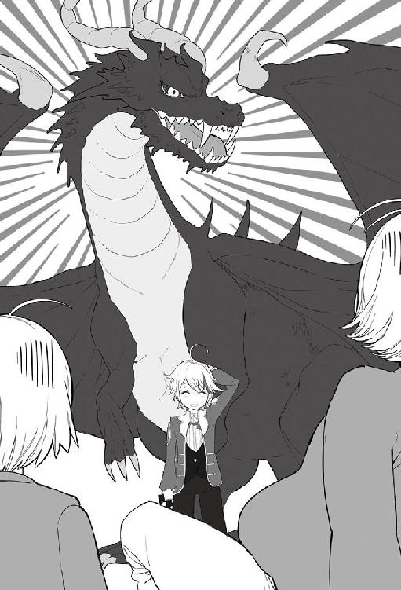
「もう全員いらっしゃっておりますので、ホールへご案内いたします」
カインが再度頭を下げて二人を案内する。
「うむ、主賓はやはり遅れて登場しないとな」
「父様、男爵風情のパーティーですから出席者もたかがしれております。はやく行きましょう」
今回のお披露目で一番の主賓は王家の人たちだ。もちろんエリック公爵やマグナ宰相も来ていることは口にしない。
ホールの扉を開けて中に案内する。
コルジーノ侯爵とハビットを、王家や上級貴族の人たちが視線に入らないように案内する。
下級貴族である子爵家や、男爵家は王家よりも遅れてくるコルジーノ侯爵に冷たい視線を送る。その視線に気づかない二人は、堂々と周りを威圧するようにホールを進んでいく。
空いているテーブルに案内すると、すぐにメイドを呼び止め飲み物を用意するように伝えた。
メイドは乾杯の時に使用したクリスタルグラスとスパーグリングワインをテーブルに置き、グラスへと注いでいく。
「乾杯に使わせていただいた炭酸が入った飲み物です。ハビット殿にはアルコールが入っていない飲み物になっておりますのでご安心してお飲みください」
「男爵程度が用意した飲み物など、たかがしれておる、はやくだせ」
メイドがすぐにドリンクを注いだグラスをコルジーノ侯爵とハビットに手渡していく。
渡されたグラスを見てコルジーノ侯爵は目を見開く。
今までに見たこともないような豪華なガラス製品ということで、飲む前にグラスを掲げ見入っている。
そして一口飲んで、さらに驚きの声を上げた。
「──これはすごい。このグラスの出来栄えもそうだが、酒も美味い」
文句をつけるつもりがつい本音が出てしまっていた。
メイドに取り分けられた料理を載せた皿が、次々と目の前に置かれていく。
一口食べて、また目を大きく開く。
「なんだこの食べ物は。今まで食べたことがない！」
「沢山用意してございますので、ごゆるりとお楽しみください」
取り分けた料理をコルジーノ親子が夢中になって口に運ぶ。
テーブルマナーも出来ていない状態で食い散らしていく。
その姿を周りにいる子爵、男爵の下級貴族が冷たい視線で遠巻きに見ている。
スパーグリングワインだけでなく、他のワインも次々と平らげていく。
「カイン男爵、このグラスの在庫を全てよこせ。酒もだ。あと料理のレシピも帰るまでに用意させろ」
「それはさすがにできません。本日来て頂いた方にこのグラスのペアをお渡しいたしますのでそれでどうか......」
カインは横暴な態度をとるコルジーノ侯爵に、礼儀正しく返事を返していく。
「二つでは足りん。百はよこせ。侯爵家が使えばお主も株があがるじゃろ」
「さすがにそれは侯爵閣下でも、申し訳ありませんが了承できません」
「なんだとっ!! 上級貴族である侯爵家当主の言うことがきけないのか？ 男爵風情が！」
酒が入ったことにより、さらに強気になったコルジーノ侯爵がカインを捲し立てる。
（あ、そこまで言っちゃった......もうすぐ後ろにいるのに......）
カインは探査を使い、このホールにいる王家や上級貴族の位置を把握していた。
そしてカインが一番期待していた人物が現れた。
「それは横暴ではないのかな？」
「うるさい、下級貴族の男爵は上級貴族の侯爵の言うことを聞けばいいのだ！」
下級貴族のパーティーということで、上級貴族であるコルジーノ侯爵は爵位が一番上だと思っている。口を挟んできた貴族に文句を言おうと振り返った。
コルジーノ侯爵の顔色が一瞬にして変わり青ざめていく。
「──ふむ、それではわしもお主に言えばいいのかな。国王の言うことは聞けばいいのだと」
振り返った先に立っていたのは国王だった。
しかも国王に対して「うるさい」と言ってしまったことに酔いが一気に醒めていく。
「こ、これは陛下、大変申し訳ございません。陛下がなぜこのような下級男爵のところへ」
重そうな腹を抑えながら片膝をつき挨拶をする。
「なぜかって？ 娘のテレスティアを助けてもらった相手だ。来て当然だろう。他になにかあるのかな？」
「い、いえ、そうでございますね」
先ほどまでの強気はどこにいったのか、コルジーノ侯爵は額をフキンで拭きながら国王の言葉に頷く。
「それでじゃ、さっきのグラスをよこせだの、レシピをよこせとか騒いでおったが、本気で言っているのかな？ そういう態度を常にとっているなら──この国の上級貴族としてふさわしくない。今後のことを考える必要があるが......」
国王が真顔でコルジーノ侯爵に問い掛ける。
コルジーノ侯爵の青ざめた顔がさらに白くなっていく。
「滅相もございません。あまりのグラスの出来栄えと酒、料理の完成度の高さに感動して教えて欲しいと乞うたのです」
「──ふむ、それなら良いが、あまり飲み過ぎるなよ？ ここにはエリックやマグナの他にも上級貴族が来ておるからな。他の貴族の見本となるように振舞うように」
コルジーノ侯爵に告げ、国王が先ほどまでいたテーブルに戻っていった。
コルジーノ侯爵は立ち上がり、周りを見渡す。
周りにいるのは下級貴族の子爵や男爵たちだけではなかった。視界にはエリックやマグナ、伯爵家も入ってきた。皆から冷たい視線が突き刺さる。国王に対してあのような態度を取ったのだ。無理もない。
「きゅ、きゅ、急用があったのだ。ハビットよ、今日はもう帰るぞ。カイン男爵、すまないな急用があったことを思い出した。これにて失礼する」
表情は青ざめたままハンカチで汗ばんだ額を拭きながらカインに告げた。
「急用なら仕方ありませんね、大したもてなしもできずに申し訳ありません」
頭を丁寧に下げるカイン。
「うむ、それでは失礼する。ハビットいくぞ」
「待ってください、父様」
二人は逃げるようにホールを退出していった。
やっと邪魔な二人がいなくなってくれたことで一息つく。
「おつかれさま、見ていたよ」
ドリンクを両手に持って現れたのはシルクだった。
「わざと煽ったのね、あちらから陛下たちが見えないようにしていたし、カインくん頭下げているとき、顔が黒い笑みでにやけていたよ」
痛いとこをつかれカインは苦笑いする。
やはり見ている人は見ていると思ったカインだった。
お披露目会も終盤に差しかかってきた。
美味しいお酒が出れば飲む量も増える。休息を含めてトイレにも行きたくなる。
この屋敷のトイレはとても特殊だ。全ての便器はシャワー洗浄付便器になっている。
しかも洗面所は一面鏡貼りとなっている。この世界で一般的な金属を磨いた鏡ではない。前世にある鏡だ。魔法により創られた透明度と精度の高いガラスができるからこそ出来る代物であった。
案の定、トイレのために退出した来客者からは驚きの声が上がった。
近くにメイドを待機させて説明するように手配していたので、大きな混乱にはならなかったが、特に女性陣には好評のようだった。
曇りのない鏡で自分の全身の姿を確認できることができるのだ。
男性陣はそこまで使う機会がないが、鏡には皆、一様に驚いていた。
「カイン男爵、あれはなんですの！ あのトイレについているものです。あれが欲しいですわ！」
カインの肩をいきなり掴み、興奮した様子で問いかけてきたのは王妃だった。
「王妃様、シャワー洗浄付便器にございます。魔石を組み込み制作した試作品になります」
カインが素直に答える。設置されているのはこの屋敷とガルム邸だけとなっており、ほぼ全員が初めての使用となる。
サラとレイネの二人掛りで興奮して強要されれば、カインもつけないわけにはいかなかった。
メイドたちの使用人用トイレにもつけてあげたら、泣いて喜ばれた。
あまりの喜び様にカインも照れくさかったことを思い出す。
「すぐに商品化しなさい！ あれは革命です。女性にとって絶対に必要なものです！」
王妃は興奮が冷めずカインの肩を離さない。
「なにがあったのだ？ そんなに興奮して......」
さすがに興奮した王妃の様子を疑問に思い国王が寄ってくる。
「なにかではありません。お手洗いに行ってみなさい。あれをすぐに王城につけるようにお願いしていたのです。あなたからもお願いしてください」
「うむ......、良くわからんがわしも行ってみるか」
王妃の言葉で疑問に思いながらも、国王はメイドに案内されトイレに向かった。
そして数分後に顔を少し赤くし戻ってきた。
「カインよっ！ あれは明日にでも王城につけるのだ！ わかったな!!」
国王からもまったく同じ答えがでてきた。
テレスティアとシルクももちろん同じ反応だった。
少し恥ずかしそうに「カイン様、実は──」と伝えるのがとても可愛く、カインは思わず抱きしめたい衝動に駆られるほどだった。
「わかりました。まだ試作品ですが在庫が少しありますので、早々にお付けするようにいたします」
「まったくカインは想像の斜め上をいくわい」
便器と鏡を取り付けてもらえることになって、ご機嫌な国王と王妃だった。
お披露目会も終わり、来ていただいた来客者にはペアグラスをお土産に持って帰ってもらった。
包装して渡してはいるが、割れ物のため、中身については伝えてある。
受け取った来客者達は中身が先ほどまで使用していたグラスであることを聞いて喜んでいる。
実際に帰り際にいくつか買いたいとの話を受けているが、今回のパーティー用で全て使ってしまっているため、王家に献上の後でしたら構わないと伝えている。
このグラスを買えると知った上級貴族たちは、大満足して帰っていった。
貴族の夫人やご令嬢たちには、グラスよりも鏡とトイレに興味津々であり、いつ発売になるかと詰め寄られた。
もう少し試作の完成度が良くなってから販売する予定ですと伝えてある。
リバーシを含めてサラカーン商会で、今後販売する予定にしていた。
見送りが全て終わりカインは一息ついた。
「父上、色々とありがとうございました。おかげで無事に終わることができました」
ガルムに向かってカインは感謝し頭を下げた。
実際にカインの従者だけでは対応できる物量ではなかったのだ。ガルム邸で勤めている従者たちの協力があってこそ今回のお披露目会が成功したとカインは思っていた。
「かまわん。私の息子だしな。これで他の貴族たちには顔が売れたはずだ。今後はある程度一人でやらないといけないぞ。まぁカインのことは心配していないというより、逆にやりすぎる気がして心配だが」
「そこらへんは自重しながらやっていくつもりです」
カインもガルムの言葉に苦笑いするしかなかった。
今回のパーティーに自重という言葉はなかった。前世の知識をフル活用したこともあり大成功に終わったが、あまり前世の知識を取り入れすぎるのは良くないと思っている。
急激な変化は時に問題が発生すると思っているからだ。
リビングで寛いでいる間に、ホールでは従者たちが清掃を行っている。大人数の従者がいたことで全ての後片付けがすでに終わっていた。
手伝ってもらった従者たちに手当として一人五枚の銀貨を支給していく。
メイドたちは一ヶ月働いて大銀貨一枚の給金となっているが、衣食住の保証はされているとはいえ、それでも少ない。
今回のパーティーで一日頑張ったことにより、半月分の給金を貰えたと思えば誰もが笑顔を浮かべる。
今後もこの従者たちに頑張ってもらう必要があると思えば少ない出費だとカインは考えた。
14 近衛騎士団
お披露目会の次の日に、鏡と便器を設置するために王城に行くことにした。
まだ制作数が少ないため、王家のプライベートスペースだけ先行して取り付けを行う。
土から出来る便器と低級の魔石から出来ている洗浄機能付きの便器に、代金として白金貨が支払われることになった。
国王、王妃を含め、王族の面々が実際に使用し感激しながら、価値を考慮してこの金額になった。
叙爵のときにいただいた報奨金も使いきっておらず、リバーシの売れ行きも爆発的となっており、カインのアイテムボックスの中の資金は増えていく一方となっていた。
ひたすら便器を作る日々を繰り返し、要望があった上級貴族の屋敷についてもトイレの設置も終わり、数日間カインはのんびりと過ごすことが出来た。
すぐにまた王城に呼び出されることとなったが。
下級貴族の男爵を毎回呼び出す国王って......と苦笑しながら、カインは馬車に乗り王城へ向かった。
お披露目会の時に言われていたヴェネツィアングラスを十個用意してアイテムボックスに仕舞っていく。
いつもの応接室に案内され、美味しい紅茶とお菓子をいただく。
またリバーシの相手かなーなど気楽に考えていたら、国王とマグナ宰相が入ってきた。
「待たせたな、この間のお披露目はご苦労だった。わしも楽しませてもらったぞ。それにしてもお主も結構黒いところがあるのだな。十歳のくせに。コルジーノにわしがいるのを教えなかったであろう？」
「いえいえ、初めてのパーティーでしたから、そこまで気が回らなかっただけです。そんな悪意があった訳では......」
にやりと笑った国王からの核心をついた突っ込みにカインは冷や汗を流す。
「まぁよい、あのグラスのほうは出来上がったなら買い取るぞ」
「本日は少ないですが十ほど用意いたしました。こちらになります」
テーブルの上に赤や青で彩られたグラスを十個並べていく。
国王が一つとり、グラスを掲げ品定めしていく。
「──素晴らしい出来だ。これはお主以外にも作れたりするのか？」
「魔法を使い創っているので、なんとも言えません。おかげで魔力切れを起こし一度倒れました」
「──そうか、まぁ良い、定期的に王城へ納めてくれると助かる。代金は──一つ金貨一枚でいいか？ 十あるから白金貨一枚じゃ」
「えっ!?」
そこまで高価だとは思っておらず、国王がつけた値段にカインは驚いた。
「なんじゃ、不満か？ それなら一つにつき金貨二枚までならだすぞ」
材料代無料の魔法だけ創った物が白金貨になった。莫大な魔法消費と異世界の知識が必要な物だけに他に誰も作れない物だが。
「いえ、金貨一枚で十分です」
「それなら良い、すぐに用意させよう」
国王が手元にあった鈴を鳴らす。
すぐに扉がノックされ、執事が部屋に入ってきた。国王が用件を告げると一礼してから退出していく。
「すぐに代金を持ってくるようにいった。それでじゃ、本題なのだがな......」
先ほどまでと違って国王もマグナ宰相も表情を引き締める。
「カインよ、剣技も魔法も一流だな。あのエントランスに飾っていたドラゴンを見ればわかる。あれほど綺麗な状態で狩るのは相当な実力が必要だ」
先ほどまでとは違う表情をした国王が、鋭い視線をカインに送りながら話を続ける。
「カイン、お主、定期的に近衛騎士団と宮廷魔術師の訓練に参加しろ。学園に入学するまではあと二年ある。今はやることはないはずだ。......わかったな？」
まったく断れる雰囲気を出していない国王に、早々に諦め頷いた。
「──はい。わかりました......」
十歳にして、近衛騎士団と宮廷魔術師の訓練に参加することになった。
「その代わりだが、宮廷魔術師の書庫の閲覧許可を出しておこう。お主、魔法の本を小さい頃からずっと読んでいたとガルムから聞いておるぞ。まだ見たこともない本もあるだろうしな」
国王からの提案に目を輝かせカインは頷いた。
家に保管されていた魔法書は上級までしかなく、火の超級『獄炎地獄』は原理を知っており、無詠唱と莫大な魔力があったからこそ魔法書を読まずに出来たのだ。
他の超級以上については資料がないため、イメージが湧かず、莫大な魔力を消費し、上級魔法を大規模な威力にしただけとなっていた。
「ありがとうございます！ とても嬉しいです」
「なんじゃ、そんなときだけは十歳児かお主。内容は十歳児の読む物ではないがな」
国王はカインの無邪気っぷりに頬を緩ませる。
「あと陛下、お願いがあるのですがよろしいでしょうか」
「無理なことでなければ、構わんぞ」
「まだ十歳なので冒険者登録ができません。グラシア領にいたときに倒した魔物があるのですが売ることができず、アイテムボックスの中で保管したままになっています。王城で素材を引き取ってもらうことはできますか」
「魔物の素材なら喜んで引き受けよう。ゴブリン程度の低級はいらんぞ。ある程度の素材なら流通に回しても、研究にしても色々と使い道があるからな」
答えたのはマグナ宰相だった。
「それくらいなら構わないだろう。逆に王家が潤うことになるしな」
国王もマグナ宰相に同調し頷く。
「アイテムボックスに入っているのでいつでも出せます。どこに置きましょうか」
「それなら近衛騎士団の詰所の倉庫がいいだろう。あそこからなら運びやすいはずだ。私から連絡しておこう」
国王とマグナ宰相の許可が出たのは大きい。アイテムボックスの容量的には問題はないが、いつまでも使わない魔物の素材を入れておきたくない気持ちがあった。
「今日はリバーシもやりたいが......」
国王がマグナ宰相の顔色を伺うが、真っ先に宰相は顔を横に振った。
「なりません。本日は会議もありますし、時間があまりないですからね」
宰相に止められ国王は残念そうな顔をし、ため息をつく。
「ならば仕方ない。カインまたそのうちな」
国王はそのまま席を立って、部屋を出て行った。
「そのまま近衛騎士団の詰所に行くと良い、話はすぐに通しておく」
マグナ宰相はそうカインに告げ、王の後を追っていった。
一人残されたカインは部屋を出て、近衛騎士団の詰所に向かった。初めて王都を訪れた際に、来たことがあり、場所は覚えている。
近衛騎士団詰所入口で要件を伝え、中に入ると見知った顔があった。
「お、久しぶりだね、英雄カイン男爵」
待っていたのは、近衛騎士団の副団長であるダイムだった。
「ご無沙汰しております。英雄ではないですよ、ダイム副団長。マグナ宰相に言われて魔物の素材を置きにきました」
「さっき、マグナ様からの伝言を伝えに従者がきたよ。案内するからついておいで」
そうダイムは言いカインを手招きする。
ダイムの後をついて行き、小さな倉庫に案内される。
「この倉庫の中でいいかな？ 魔物を置く場所はここにしているのだが」
小屋は五メートル四方くらいの小さな倉庫だった。
小さな魔物であれば十分なサイズだが、アイテムボックスに入っている魔物の素材は大型のものが多数あり、この中では入りきる量ではなかった。
「ダイム副団長、申し訳ないですけど、この部屋の広さだと入りきらないです」
カインが正直にダイムに伝える。全部出すつもりはないがＡクラス程度の魔物の素材ならすぐに集まるので、それ以下の魔物は全て出すつもりでいた。
「──いったい、君のアイテムボックスの中にはどれだけの素材が入っているのだ？」
「この小屋でしたら、十は必要かと。大きいものはここに一匹入れたらもう入らないかもしれません」
カインの言葉を聞き、さすがのダイムも目を見開く。
「もしかして、屋敷に置いてあると噂されているレッドドラゴンクラスが入っているのかい？」
ダイムは屋敷のお披露目には来ていないが、どこかで情報を仕入れたのであろう。
「さすがにあのクラスは入ってないですよ。もっと小さいのです。それでも六メートル級の地竜が何匹か入っていますけど」
「ちょっと待ってくれ。地竜って、魔物のＡランクに区別され、冒険者でもＡランクのパーティーで一匹倒すという地竜かい？」
「Ａランクかはわかりませんが──地竜です。冒険者ギルドに登録していないので、そこらへんはわからないですけど......」
「ますますカイン殿はわからない人ですな。とりあえずこの外に出してくれれば、騎士団で運ぶことにするよ」
「わかりました、ここに出しますね」
アイテムボックスから次々と魔物の死骸を並べていく。
六メートル級の地竜に、十メートル級の地蛇、オーガキングにオーガの群れ、オークもかなり出した。中には上位種も混ざっている。
アイテムボックスから吐き出した魔物で小さな山が出来ていた。
「これで全部です」
アイテムボックスの中が綺麗にさっぱりしたことでカインは満足する。
「............」
目の前に次々と置かれた魔物の山を見てダイムは固まっていた。
アイテムボックスのスキルを持っているだけでレアだと言われている中、化け物と言われてもおかしくない量を保管しているカインを見て開いた口が塞がらない。
並べられていく魔物に関してもありえない状況だった。
ＡランクからＣランクと言われる魔物を気にせず次々と出していくのだ。
（──これをカイン殿が一人で狩ったのか？ ありえない......）
Ａランクの冒険者でもここまでは出来ないだろう。
Ｓランクと言われる冒険者たちでさえ、この量を狩ることが出来るのか疑わしい。
そんなことを知らないカインは、魔物で出来た小山を見上げ満足した顔をしている。
恐る恐るダイムはカインに視線を合わせた。
「──カイン殿、あなたは勇者かい？ もしくは神の使徒とか......」
その言葉を絞り出すことしかダイムはできなかった。
カインは『神の使徒』という言葉を聞き、思わず身体がビクっと震えた。
「......え？ いえいえ、普通にガルム辺境伯の三男ですよ......」
少し緊張した表情をしながらカインは言葉を返す。
「──深くは詮索しないよ。これだけの量では査定も少し時間がかかると思う。代金は後日渡すように手配するけどいいかい？」
「陛下にグラスの代金を頂いたので、そこまで焦っていません。用意が出来ましたらご連絡いただければお伺いします」
実際にカインは金銭について困っていない。
リバーシが爆発的な人気となり、投資した金額は全て戻ってきていた。
レッドドラゴンを討伐した時の宝石や、今後、商売で扱う予定となっているヴェネツィアングラスとシャワー洗浄付便器を売りに出したら、もっとすごいことになるだろう。
「それでは、僕は帰りますね」
カインが帰路につこうとすると、ダイムが後ろから肩を掴む。
「カイン殿、まだ時間は早いよ？ ちょっと騎士団の訓練に付き合わないかな？ とりあえず見学だけでもいいから」
ダイムは本当にこの山となっている魔物を倒す実力があるのか確かめたかったことから、思わず呼び止めてしまった。
カインは、自身の両肩を掴む真剣な顔をしたダイムに根負けして、訓練場についていった。
そして今、近衛騎士団の訓練場の真ん中に木剣を持ってカインは立っていた。
周りには屈強な近衛騎士が三十人ほどでカインに木剣を向けて囲んでいる。
時は少し遡る。
「英雄カイン男爵だ、オーク殲滅の話は聞いているな」
ダイムがカインのことを訓練している近衛騎士たちに紹介する。
周りからは、本当にこんな子供がオークジェネラルを含む三十体を倒したのかと疑問の声があがる。
オーク殲滅の場に居合わせた騎士たちもおり、その人たちはカインを見て礼節をとった。
「今日はカイン男爵も騎士団の訓練に参加することになったから」
ダイムが訓練中の騎士たちに説明をしていく。
カインの身長は年齢相応とはいえ、まだ百五十センチにも満たない。百八十センチを超え、鍛え上げられた身体をしている騎士とは頭一つ以上の差があった。
「いいのですか？ 見た目も本当に子供ですよ？ しかも十歳ですよね？ 近衛騎士団が本当に相手をしていいのですか......」
カインの実力を知らない一人の騎士がダイムに問い掛けた。
「そう思うのなら、最初にやってみなよ。カイン殿頼むよ」
ダイムに問いかけた騎士が片手に木剣を持ち一人、前にでる。
「カイン殿、まずはそちらに手を譲ろう。先にかかってきなさい」
近衛騎士は国の騎士の中では一番上級職にあたり、エリートとされている。そこに所属しているという自信が感じられる。
鍛え上げられた身体で木剣を構える。
カインは全身に魔力を行き渡らせ、小さい声で『身体強化』を掛け騎士に飛びかかる。
想像以上の速さで飛びかかってくるカインに、騎士は驚きながらも剣を合わせる。
バキッ
木剣まで魔力を通しているカインの木剣に耐えられるはずもなく、騎士の木剣は一瞬にして折られた。その姿に驚いた瞬間にカインが目の前から消える。
「えっ」
騎士は驚く暇もなく、背中につつかれる感触を味わう。
「これで終わりです」
カインを見失った騎士は、いきなり後ろに現れ、木剣で背中をつつかれたことに驚愕する。
「──参りました」
騎士は折れた木剣を下げカインに一礼した。
「──信じられません。ここまでの実力だったとは......まったくカイン殿の動きが見えませんでした」
周りで見ていた騎士たちも同じように困惑している。
「あれ見えたか？」
「目で追うのがやっとだった......」
「目の前であれをやられては相手は消えたと錯覚してしまう。そしていきなり後ろからだろ？ 相手するの無理だろ」
カインの動きを目の当たりにした騎士たちは口々にそう言う。
「さすが英雄カイン男爵だね、ここまでとは......さすがに想定外だったよ。一人では物足りないだろう、今いる三十人とやってみようか」
「ええっ!? ちょっとそれは......」
ダイムの無茶振りにカインもさすがに驚く。ラメスタの時と同じようになっているが、今、周りを囲んでいる騎士はエスフォート王国最強と言われている近衛騎士団だ。
ステータス的にも全員を瞬殺することも出来るカインだが、瞬殺したら騎士団のプライドが折れ、確実に国王に話が行くと思いカインは考える。
「よし、それでは始めよう。皆かかれ！」
「本当にやるんですかっ!?」
ダイムの合図によって、カインの実力を知り気を引き締めた近衛騎士団三十人が、カインに木剣を構え取り囲んでいく。
そして先ほどの状況になった。
騎士たちも先ほどのような油断はせず、魔力を循環させて『身体強化』をかけていく。
いつでも飛びかかれる緊迫した状態となっている時にいきなり声が掛かった。
「これは何事だっ!!」
騎士たちの動きがその声で一瞬にして止まった。
声を掛けた一人が囲んでいる騎士達を掻き分け円の中に入ってくる。
薄緑髪の二十歳位に見える綺麗な女性だった。
近衛騎士たちより豪華な装飾をされた騎士服を着ており、薄緑の色をした髪を後ろで結び邪魔にならないようにしている。
長く伸びた耳からエルフだということがわかる。
淡麗な佇まいのエルフの騎士一人の言葉に、近衛騎士団全員の動きが止まったことに対してカインも驚きを隠せない。
騎士たちが剣を下ろし姿勢を正した。
「こんな子供を相手に大勢で剣を向けるなど近衛としてのプライドはないのか！ 近衛騎士団がこんなに大勢集まって何をしている!?」
近衛騎士たちを怒鳴りつけたあと、カインの方を向いた。
身長はエルフの騎士の方が大きく頭半分ほどの差があった。
「君、大丈夫だった？」
エルフの騎士は厳しかった表情を緩ませカインの頭を撫で始めた。
十歳への対応ならそれが普通だろうと思う。
そしてエルフの騎士はカインをいきなり抱きしめた。
「こんな怖い人たちに囲まれて怖かったよね？ もう私が来たから平気だよ。迷子でここに来ちゃったんだね。両親はどこだい？」
「──団長、その方は......」
ダイムがカインを抱きしめているエルフの騎士に申し訳なさそうな顔をしながら声を掛ける。
この綺麗なエルフの女性が『団長』だと言うことを知り、カインは驚いた。
「ダイム、あなたというものが一緒にいながら、なぜ止めなかった」
カインのことを抱きしめたまま、目を細めてダイムを叱咤する。
「その子は以前、話に出ていたカイン男爵ですが......。あの英雄の......」
ダイムが申し訳なさそうに団長に答える。
「まさか!? こんな子供がっ??」
さすがに団長も抱きしめている子供が〝英雄〟と言われるカインだと知り驚いたようだ。
団長がカインをじっと見つめると、口元が緩んでいく。
「──そうか、そうなのか、あの英雄か。フフッ、では代わりに私と模擬戦をしようか」
『模擬戦』のはずの団長の言葉が『決闘』に聞こえたカインは焦りを覚える。
団長がいきなり模擬剣を持ち出して構えはじめる。
「団長、まずは自己紹介が先かと......」
ダイムが団長に申し訳なさそうに伝える。
「剣士はまず剣でわかり合うべきだ。それで分かる」
周りの騎士はため息をつきながら距離を開けていく。そして騎士団長が模擬剣を構える。
「また団長の悪い癖が......。強いのを見るとすぐ模擬戦を挑むんだよな。団長は剣聖の称号持ちだろ？ カイン男爵といえど無理じゃないかな」
（あの......、聞こえていますけど。なに剣聖って）
「カイン男爵いくぞ！」
「ちょっと待ってくださいよっ！ 武器がっ！」
カインが持っているのが木剣であり、騎士団長は模擬剣である。強度の差は比べ物にならない。
カインは止めようとするが団長は構わず突っ込んできた。
人とは思えないスピードでカインに迫っていく。身体強化を使ったのだろう。
団長は射程に入ると剣を上から一閃する。
カインは半歩だけ横にずれてその剣を躱す。そして逆に剣を横から一閃する。
団長は簡単に避けられたことに目を大きく見開き、カインが横に振った木剣を模擬剣で受け止める。
カインは後ろに飛び、距離を取った。
「カイン男爵、子供だと思って油断していたよ。これなら本気で楽しめそうだ」
火照った顔でニヤリと笑みを浮かべ、団長が何かを呟くと周囲に風を纏った。
「いくよっ」
さっきとは一段階違うスピードで剣を振る。
さすがに余裕で躱したさっきのようにはいかなかった。
カインも身体強化を使い団長の振った剣を逸らすようにして受け流していく。
その後も二人は人とは思えない速度で剣を打ち合っていく。
「おい、カイン男爵、団長とまともに打ち合っているぞ。しかもさっきより早い。まったく信じられん......」
周りを囲んでいる騎士たちが呟く。
二人のスピードは周りの騎士団でも目で追うのがやっとの状態であった。
このままではいつまで経っても終わらないので、カインがもう一ランク身体強化を上げることにした。
『思考行動加速』
カインの思考と動きは一気に加速し、視界がスローに見えていく。
そして一気に団長の剣を弾き返すと、そのまま首元に木剣を突きつけた。
「これで終わりですね」
カインが首元に突きつけた木剣を下ろし団長に伝える。
団長は目を大きく見開いた後、頬を染める。
そして誰もが想像もしていなかった一言を放った。
「────決めた、私はあなたと結婚する」
「えっ？」
「あっ？」
「「「「「えぇぇぇぇぇぇぇええええええええええええ！！！！」」」」」
周りを囲んでいる近衛騎士団一同が顎が外れそうなほど口を大きく開き絶句した。
もちろん一番驚いたのはカインだった。そして同様にダイムも言葉にならない驚きの声を上げた。
皆がフリーズしている中、団長は頬を染めながら説明を始める。
「私が王都にきたのは、私より強い人を探すためだ。そして──今、巡り会えた」
頬を染めながらカインのことを抱き締める。
あまりの出来事にフリーズしていたカインの思考がようやく動き出す。
「いきなり結婚と言われても、僕はまだ十歳ですよ？ 騎士団長のことも何も知りませんし」
「たしかにそうだったな。私の名前はティファーナ・フォン・リーベルト。エスフォート王国で近衛騎士団長を任されている。爵位は名誉子爵だ。北の森を治めるリーベルト公爵の娘だが、年齢は気にしなくていい。私はエルフだから三百年は生きる。容姿も当面は変わることはない。これでも一応容姿には自信はあるぞ？」
公爵令嬢の婚姻を本人の一存で決めていいはずがない。
公表はしてないがすでにカインには婚約者が二人いる。このままではまずい状況となるとカインは考える。
「公爵令嬢が一存で結婚を決めるのはいけないと思います。僕はまだ十歳ですし、家族と相談してください」
「家から出るときに結婚相手を見つけるまでは戻らないと伝えてあるから平気だ」
頬を赤く染めたティファーナは自信満々で胸を張って答える。
「そうは言っても僕が困ります。父上にも、他にも相談しないといけない人がいるのです」
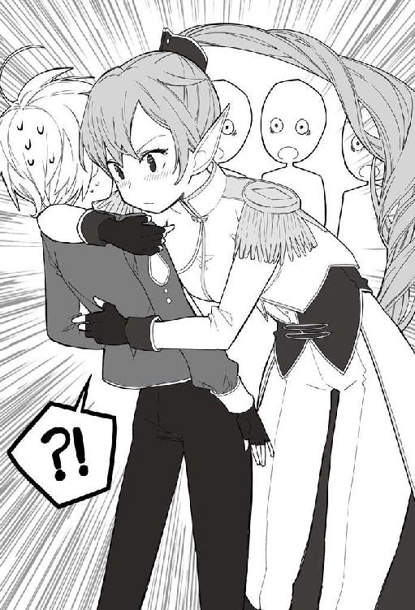
カインは副団長のダイムに視線を送る。
カインがテレスティアとシルクと婚約していることを知っている。助け舟を出してくれるはずだと思っていた、が......首を左右に振り諦めた顔をしている。
「──そうだな、私だけの一存では決められぬな、すまぬ。まずは陛下に話すとしよう」
カインとしては国王の耳に入ることが一番困るのだ。
先日、国王から「スケコマシ」と言われたばかりで、このことが明るみにでれば、また小言を言われるに違いないと小さく震えた。
「ぼ、僕は今日、用事があるので、また後日に。これにてしつれ──」
「大丈夫だ、今すぐに話をつける」
「え!?」
「ダイム、今すぐ陛下と謁見を出来るように手配してこい」
カインはすがる目でダイムを見たが、ダイムはため息をつき「わかりました」と言って王城へ向かって消えていった。
謁見の予約はすぐにとることが出来た。
ダイムが「団長が緊急の用件で」と伝えたということだった。
そして、いつもの応接室に案内され、指定席と思えるほど良く座る席に座っている。
いつもの席だが隣に座っているのがいつもと違う。
近衛騎士団長のティファーナが隣にいるからだ。ダイムは後ろで控えている。
国王とマグナ宰相が少し急いだ様子で部屋に入ってきて、中央のいつもの席に座る。
「緊急の用件ということですぐにきたのだが、なぜお主がいる？ 近衛騎士団に素材を置きに行ったのではないのか？」
騎士団長から緊急の用件でと呼ばれたはずなのに、カインも同席していることに国王は首を傾げた。
「はい......置いてきました」
国王の問いに力なく頷く。
そして団長のティファーナが立ち上がり話し始めた。
「陛下、私はここにいるカイン男爵と結婚するつもりです」
いきなりティファーナが爆弾投下をした。
「「！！！！」」
国王もマグナ宰相も絶句だ。
ティファーナの後ろで控えているダイムはため息をついている。
国王はひきつった顏を引き締め、カインに冷たい視線を送る。
「なぜそうなった？ カイン。最初から説明してみろ」
「......はい、実は──」
カインは素材を置きに行ったこと、騎士と模擬戦をしたこと、三十人の騎士を相手に模擬戦を行う寸前で団長がきたこと、そして団長と模擬戦をしたことを伝えた。
「──それで、この国最強でもある近衛騎士団長に勝ったと......そういうことだな。カイン、テレスやシルク嬢の事は話してないのか」
「それはまだ内密の事でしたので話しておりません」
カインは二人から送られる視線に冷や汗をかきながら正直に答えた。
「騎士団長が自分より強い相手と結婚したいと言っていたのは知っていたが、まさかカインだとはな......」
国王もため息をつきながら話を続ける。
「カインよ、騎士団長のティファーナが公爵令嬢なのは聞いたと思う。ただし、リーベルト領は元々はエルフの国だったのじゃ。エルフは容姿端麗じゃろ？ それで誘拐や奴隷にしようと戦争を吹っかけられることが多かったのだ。このエスフォート王国は初代の遺言で元々種族に関しては差別がない。だからこの国のひとつの領として保護しておるのだ。公爵と言っても自治領を与えているので独立国家とほとんど変わらん。ひとつの国の王女だと思え。そしてその王女に求婚されているのだ。わかるか？ カイン」
素直にカインは頷く。国王はカインが頷いたことで視線をティファーナに向ける。
「ティファーナよ、まだ内密な話だがそなたには話しておく。ここにいるカインはうちのテレスティアとエリック公爵の娘のシルク嬢とすでに婚約が決まっておる。それを聞いて、お主はどうするのだ？」
国王が正直に婚約の件をティファーナに伝えた。
カインは下を向いたまま国王の話を聞く。
王女殿下と公爵令嬢をすでに婚約者にしていると知り、ティファーナは少し驚いた顔をした。そしてすぐに顔を引き締め、斜め上の発言をしはじめた。
「陛下とエリック公爵がお認めになるほどの逸材ということですね。なら、ますます私は結婚したいと思っております」
その想定外のティファーナの言葉に、今度はカインが絶句した。
「ちょっ......」
カインは止めてもらおうと思ったのに、国王が先に話し始めた。
「わかったわかった。おぬしの気持ちは認めよう。まずはレーサン殿に手紙を書け。許可がもらえてからの話じゃ。わかったな」
国王に認められたことが嬉しかったのか、ティファーナは先ほどまでの緊張した顔がパーっと明るくなる。
「わかりました。さっそく父に手紙を書きたいと思います。私の用件はそれだけですのでこれにて失礼いたします」
そう言ってティファーナは勢いよく応接室を飛び出し、後を追うようにダイムは一礼したあと、応接室を退出していった。
「では、僕もそろそろしつれ──」
「まぁ待て」
「......はい、やっぱりそうですよね」
一緒に退出しようと思ったカインは、国王に止められた。
「ちょっと話す必要があるよな？ カイン。そのまま帰るつもりだったりはしないよな？」
国王とマグナ宰相の二人から無言の圧力がカインに伝わっていく。
「私もいきなりだったので、どうしていいか今でもわかりません」
カインは素直に答えた。
「それにしてもまさか剣聖の称号を持つ近衛騎士団長にまで勝つとはな、あれは剣術レベル５と武神の加護レベル５の最高値を持っていたはずだ。うちの国の騎士で単純に一番強いから近衛騎士団長をやっているのだ。言いたいことはわかるな？」
「......ティファーナ騎士団長の体調がすぐれなかったとか......」
カインは誤魔化したが、国王や宰相がその言葉に納得するはずもなかった。
「カイン、お主──何者じゃ？」
国王が直球でカインに問いかける。
「カイン・フォン・シルフォード、ガルムの三男です......」
気持ちを落ち着かせつつ、カインはゆっくりと答える。
「ふむ、今は良い。カインよ、お主はこの国に対して害になることをするつもりはあるか？」
国王の真剣な眼差しがカインを突き刺す。
「そんなつもりはありません。陛下から男爵の位をもらい、テレスティア王女殿下とシルク嬢を婚約者として認めてもらいました。この国に尽くすつもりはありますが害する気持ちなど微塵もありません」
カインは真剣な目を陛下に向けて答えた。
その言葉を聞き国王の顔が緩んでいく。
「うむ、わかった。テレスとシルク嬢にはわしのほうから伝えておこう。まだ婚約は確定ではないしな」
「わかりました。よろしくお願いします。それでは失礼します」
カインは一礼したあと、部屋を後にした。
馬車に乗り、屋敷に帰ろうと思ったが、今回の件をガルムに報告しないと、あとでまた大変なことになると思い、行き先をガルム邸に向けた。
屋敷につくなり、ガルムの書斎に向かった。
「どうしたカイン？ そんなに急いで。何かあったのか？」
「実は──」
今日あった出来事を順番に話していく。
「なにぃ！！！！！！！ ティファーナ騎士団長に求婚されただと!?」
屋敷にはガルムの驚きの声が響いた。
「......はい。模擬戦をやっただけでそうなりました。陛下も宰相もすでに知っております」
ガルムは頭を抱えるしかなかった。
ただでさえカインには王女殿下と公爵令嬢との婚約が決まっているのだ。
さらにエルフ領のトップでもある公爵の令嬢で、この国最強の剣士がカインの妻になりたいと言っている。
すでにガルムの手に負えるものではなかった。
確かにガルムも上級貴族と言われる辺境伯ではある。
だが、王家である王女殿下や公爵家はシルフォード家より格上なのだ。
さらに言えばカインはすでに独立し、今では下級貴族である男爵でしかない。
「もう頭が痛い。今日のところはこれくらいにしてくれ、後日陛下にお伺いしにいく」
ガルムの許容範囲を超えたことで心が折れた。
「では失礼します。また何かありましたら報告に来ますね」
そう言い残しカインは部屋を退出した。
「まったくカインは......次から次へと問題を......」
あまりの衝撃的な出来事に机に伏せるガルムであった。
15 白状
王城の応接室で真剣な顔をした者たちがテーブルを囲んでいる。
国王を筆頭に、エリック公爵、マグナ宰相、ダイム近衛騎士副団長、ガルム辺境伯が座っている。
「それで、ダイムよ。この間のティファーナ騎士団長とカインの戦いはどうだったのだ」
最初に国王が口を開き、ダイムに尋ねる。
「はっ、団長は途中までは身体強化のみで戦っておりましたが、勝負がまったくつかず、途中から得意の風魔法を纏い、さらに速い剣技を振るっておりましたが、カイン殿は余裕で捌いておりました。そしてさらにスピードを上げ一瞬で勝負がつきました」
国王はダイムの説明にため息をつく。
「十歳にしてこのクラス......どうしてそこまでの強さを持っているのか。この先どうなるかわからんな。──ガルム、おぬしの子供じゃ、どうなのだ？」
疲れきった表情の国王は視線をガルムに向ける。
「こっそりと部屋から抜け出し、魔物の森へ狩りに行っていたようです。屋敷のホールに置いてあるレッドドラゴンも一人で倒したらしく、あれを見たときには私もさすがに腰を抜かしそうになりました」
屋敷に飾られているレッドドラゴンを思い浮かべながら全員が頷く。
「あれはSS級の魔物じゃ、それを一人で倒すとはとんでもない子供じゃな。その前に一人が倒せるものなのか......あれは......」
国王も同じ気持ちのようだ。
ダイムは思い出したように話始める。
「そういえば、私がカイン殿に『あなたは勇者か神の使徒ではないか？』と聞いた時に体が一瞬反応しておりました」
「「「な、なにっ！！！！」」」
ダイムの思い出したように発した言葉に全員が驚く。
「ま、まさか勇者か使徒様なのかもしれないのか......」
「先日、カインにステータスを見せるよう言ったのですが、断られました。何かあるのかもしれません」
ガルムも思い出したように言う。
「試すことはできます。『アレ』を見せてみれば」
マグナ宰相が話し始める。
「『アレ』か......。見せることで勇者かどうかはわかるかもしれないな。すぐにカインを呼んで参れ、わしは『アレ』を用意する」
いつもの応接室に国王を筆頭にエリック公爵、マグナ宰相、ガルム辺境伯、ダイム近衛騎士副団長が座る。国王の対面にはカインが座っている。
「陛下、お呼びにより参上いたしました。父上までお揃いですが、本日はいかがされましたか。グラスの件でしたらまだ出来ておりませんので、もう少々お待ちいただけたらと」
カインは、ここ最近よく目にする国の錚々たる面々にも慣れてきたことで、臆することもなく話し始める。
「カイン、ちょっと見てもらいたいものがあるのだ。マグナ『アレ』出してくれ」
大事に包装されたものを取り出す、そして開いて出てきたものは一冊の本だった。
表紙には『帝級魔法書』と書いてあった。
「これは王家に伝わる帝級魔法書じゃ。初代様が書いたとされ、代々大切に保管しておるのじゃ」
国王が説明をしていく。
「帝級の魔法書ですか!? これを見せてもらえるのですか」
宮廷魔術師の書庫を見ても、超級までしか魔法書はなかった。
初めてさらに上の帝級の魔法書が目の前に置かれているのだ、興味がないはずがない。
「うむ、カインよ、見ていいぞ」
そう言って本を差し出してくる。
ページをめくっていくと、帝級の魔法の名前や効果などが細かく書き記されていた。
新しい魔法の本ということで、カインは周りの状況を忘れ魔法書に没頭する。
「──やはりそうか......」
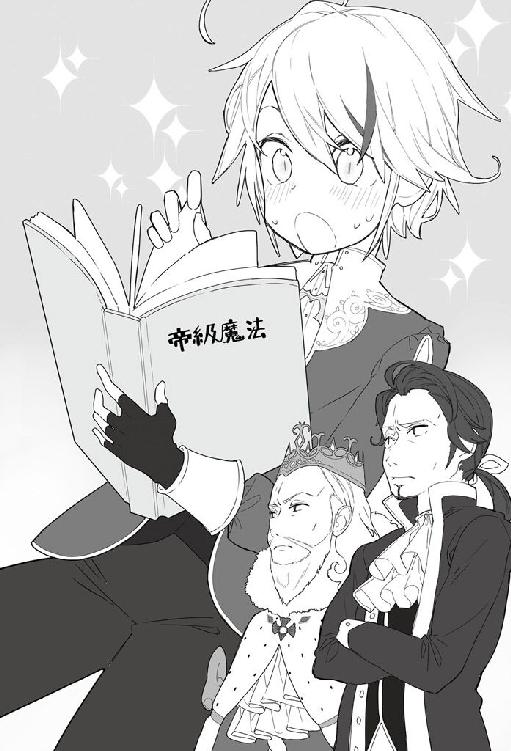
国王が呟く。他の皆は沈黙を貫いている。
カインは本を読んでいた顔を上げ、国王を見て首を傾げる。
「どうしたのですか？」
カインの問いに国王は真剣な眼差しでカインを見つめた。そして話し始める。
「カインよ、その本はな、私たちでは読めんのだ。なぜだかわかるか？」
カインは改めて本を見てみる。
たしかに書いてあることが読めるのは確かだ、書いてあるのが日本語なのだから。
「あっ！！！！！！！！！！！！！！！！！！」
応接室の中にはカインの悲痛にも思えるほどの声が響き渡った。
カインにも理解できたようだった。
そのまま、椅子から崩れ落ち床に手をついている。
「カインよ、まず座れ。それは初代国王が残してくれた書物じゃ。『にほんご』で書かれており『帝級魔法書』だとは言い伝えで知っておるが中身は誰も読めない」
先程までと打って変わってカインは青ざめた顔をして椅子に座り直す。その顔は血色が悪く絶望した時のようだ。
「──カイン、改めて問う。おぬしは何者じゃ？」
国王はまっすぐな視線でカインを見つめる。部屋にいる全員が同じ視線をカインに送った。
「──わかりました......正直に話します。但し、今はここにいる人たちだけの話にしていただけますか。そうでないと僕は......」
カインは諦めたように答え、その言葉に全員が頷いた。
「私はガルムの子で間違いありません。それは確かです。但し、前世の記憶を持っています。しかもこことは違う世界の。その違う世界とは──初代国王と同じ国。その国の名前が『にほん』です」
「「「「............」」」」
カインの衝撃的な告白に少しの沈黙がこの場を支配する。
「やはり普通の十歳ではないと思っていたが、初代様と同じ国にいた記憶とはな......」
国王が納得する。
「ほ、本当に私とサラの子供なのか？ 間違いないのか」
ガルムが心配そうにカインに質問する。
「はい、間違いありません。生命神ライム様から五歳の洗礼時に聞いております」
「「「「神と会ったのかっ!?」」」」
全員が驚く。洗礼と言っても、普通神に会えるわけではないのだ。教会でも聖女が神託を受けることはあるが直接会うことはない。
話してしまったことに少し後悔しながらもカインは説明を続ける。
「......はい。洗礼時と教会の礼拝の時に。七神ともお会いいたしました」
ほとんどバレてしまっているので正直にカインは話す。
「七神様全てか......。おぬしがガルムにステータスを見せられないと言っていたのはそのせいか？」
国王が質問を続けた。
「はい、その影響もあります。称号、能力、加護を含め見せられなかったからです」
「では改めて見せてもらってもよいか？ もちろんここだけの話にする」
「──はい」
カインは諦めたように魔法を唱える。
『ステータスオープン』
【名前】カイン・フォン・シルフォード
【種族】人間族 【性別】男性 【年齢】十歳
【称号】辺境伯家三男 転生者 神の使徒 神童 魔物の森の天敵 自然破壊者 竜殺し
神々の寵愛を受けし者
【レベル】２９８
【体力】５，８５７，２４０／５，８５７，２４０
【魔力】１０２，６４３，２４０／１０２，６４３，２４０
【能力】ＳＳＳ
【魔法】
創造魔法レベル10 火魔法レベル10 風魔法レベル10
水魔法レベル10 土魔法レベル10 光魔法レベル10
闇魔法レベル10 時空魔法レベル10 生活魔法
【スキル】
鑑定レベル10 アイテムボックスレベル10 武術レベル10
体術レベル10 物理耐性レベル10 魔法耐性レベル10
【加護】
創造神の加護レベル10 生命神の加護レベル10 魔法神の加護レベル10
大地神の加護レベル10 武神の加護レベル10 技能神の加護レベル10
商業神の加護レベル10
「「「「............」」」」
表示されたステータスを見た全員が絶句した。
誰も言葉を発することなく時間が過ぎていく。
数分の沈黙が過ぎ、最初に口を開いたのは国王だった。
「ま、まさか神の加護にレベル５以上が存在していたとは。カインよ、そこに書いてあることは本当なのか？ そうなればこの国の全て、いや、全世界の民がお主に膝をつかないといけない。もちろん王としてのわしもじゃ。神の使徒様といえば誰よりも高い位なのじゃ」
国王が衝撃的なステータスに力なく言う。
「陛下、できれば今まで通りでお願いします。私はガルムの息子であり、ただの十歳の子供です。たしかに前世の記憶はありますが今の生活に満足しております」
カインとしてもできれば今のままの関係がよかったのだ。
「──わかった、感謝する。おぬしが規格外のことをやらかす理由が、これでわかった気がするよ」
納得した国王であった。
「これから先、何かがあった時にこの国を助けてもらえるか？」
国王はまっすぐにカインを見つめた。
「私はエスフォート王国の男爵です。この国が好きですし、テレスティア王女殿下もシルク嬢も家族もいるので必ず守るつもりです。間違えは正す必要がありますが」
カインは真剣な眼差しのまま正直に答える。
国王は肩の荷が下りて安心したかのようにフゥーと一息つく。
「本来なら公爵に陞爵するべきだが、このことは秘密だからの。一足飛びに上げてしまうといらぬ疑いが掛かってしまう。今後は時期を見て少しずつ陞爵していくことにするから、そのつもりでおれ。男爵程度でいると口うるさいやつもいるでのぉ」
カインの中ではコルジーノ侯爵が思い浮かび苦笑いをする。
「今日のことを口外することは許さん。家族を含め、誰であろうとだ。皆、わかったな」
国王の厳命に全員が臣下の礼を取る。
「ステータスを見せられないと言われたときは悲しかったが、このステータスを見れば納得できる。カイン悪かったな」
ガルムは安心したようで笑顔をカインに向けた。
カインの秘密が明るみに出た日となった。
国王や父上にステータスがバレてしまってから一ヶ月が経過したが、カインはこれまでと変わらない生活を送っていた。
相変わらず、国王には王城へ呼ばれリバーシの相手をしていた。
リバーシについては、未だにエリック公爵には勝てないと愚痴っている。
そして近衛騎士団長のティファーナについては、実家からもなぜか婚約のお許しが出たそうだ。今度王都へ来るときに紹介してくれと手紙がきたそうで、ますます勢いがついてしまった。
国王もその手紙を見て、仕方なく婚約者になることを認めた。
父親のガルムについては「もう何も言わん。好きにしろ」と言われただけで諦められているようだ。
肝心のカインは最後まで認めていなかったが、国王とガルムが認めたことにより正式に婚約が決まってしまった。
発表についてはテレスティアとシルク同様に、カインが学園に入学する十二歳を過ぎてからとなる。
そして今、カインは王城の一室で紅茶を飲んでいる。
目の前には、テレスティアとシルクが座っている。
シルクはいつも通りだったが、テレスティアは真剣な眼差しでカインを見つめている。
「カイン様、なぜ、ティファーナ騎士団長と婚約することになっているのですか」
テレスティアの冷たい視線がカインに突き刺さる。
「騎士団長と模擬戦をしたらそうなってしまいました......」
テレスティアの問いにカインは力なく答える。
「カインくんだから仕方ないよね～。成人する間に何人になっていることやら。私はテレスと一緒だし、楽しいからいいけどね。うちの父も三人いるし」
シルク嬢はそこらへんについては寛容みたいでほっとする。
「お父様からは十二歳で学園に入学したら、正式に婚約を発表すると聞いておりますが、あまり婚約者を増やすようなことをしないでくださいね？」
「......わかりました」
テレスティアからの小言を聞きながらのお茶会も終わり、王城からの帰り道、出口に向かって歩いているとティファーナと会った。
「カイン！ いいところにいた。一緒に模擬戦をしよう！」
カインは会うたびに戦いを求められていた。
ティファーナは結構な脳筋だったらしく、ダイムが副官として騎士団の実務をまとめているそうだ。
その理由がティファーナといることが多くなって良くわかった。
まだ十歳ということで、そのままティファーナに手を引っ張られ連れて行かれる。訓練している騎士はいつもの通り、可哀想な目でカインを見ていた。
知らない人からみたら、騎士が子供を攫っているようにしか見えないからだ。
そしていつも通り訓練場で十歳の子供と騎士団長が剣を構え向き合っているのだ。
「またカイン男爵が攫われてきたぞ、可哀想に......」
休憩中の騎士たちが話している。
すでに日課となってしまい、誰も驚かなくなってしまっていた。
カインはステータス的に十分優位にあるため、負けるようなことはないが、これまで自分がステータス頼りの剣技だったことがわかり勉強になった。
ティファーナと模擬戦をすることにより、称号にも同じ『剣聖』がいつの間にかついていた。
ティファーナの剣技も格上のカインと行うことにより次第に上達していった。
二人の模擬戦は常に身体強化しながらとなり、他の騎士たちには目で追うことがやっとのスピードで行われているため、誰も混ざることもない。
一時間ほど模擬戦を行い、ティファーナがバテたところで終了するのが日課となっていた。
へばっているティファーナを他所に他の騎士たちに挨拶したあと王城を出た。
「ふぅ、ティファーナも強くなってきたなぁ」
感心しながらカインは王城をあとにし、貴族街を抜け商業街に向かう。
カインがアイデアを出し、製造、販売を委託しているサラカーン商会へ向かうためだ。
サラカーン商会には、定期的にアイデアを出して商品化してもらっている。
今までにリバーシ、シャワー洗浄付便器などを売り出してもらった。
ヴェネツィアングラスについては、作れるのはカインのみなので委託販売としている。
販売した商品はかなりの売れ行きとなり製造工場も商会も潤ったようだ。
「もう、カイン男爵には足を向けて寝れませんよ。このままパルマを店で修行させようかと思っていましたが、運営資金にもかなりの余裕ができ従業員を雇うことができました。十二歳になったら学園に通わせようと思っています。カイン男爵と同じ年になりますので色々とよろしくお願いします」
タマニスが丁寧に頭を下げる。パルマも店番をし帳簿をつける練習をしながら学園に入るために勉強もしているとのことだ。
「カイン様、これからもよろしくお願いします」
そうパルマに上目遣いで言われると、つい承諾してしまう。
ちなみにまだ猫耳は触らせてもらってはいない。
タマニスとパルマに挨拶をし、馬車に乗り自宅のある屋敷に戻った。
カインは書斎に入り、国王から預かっている帝級魔法書を開いて読み始める。
「日本語で書いてあるから読めるのは僕だけだけど、この本のせいでバレちゃったからな」
ため息をつきながらページを捲っていく。
魔法書には日記を交えながら魔法の説明が書いてあった。日記部分を見ながらわかったことがいくつかあった。
この日記を書いたユウヤ・テラ・ヒラサワ・エスフォート初代国王は日本で事故に合い、死んだと思ったらこの世界に召還されたそうだ。
不穏な空気から仲間と国を逃げ出し、冒険者となり名を上げていき、勇者と言われるようになり、国を興したということだった。
「転生者ではなくて、転移者だったんだ。もしかしたら他にもいるかもしれないな」
そう心に留めた、カインであった。
神界では七神がそろってスクリーンを見ていた。
「ほら、やっぱり加護レベル10なんてあげたから大変なことになったじゃない」
魔法神レノが創造神ゼノムに食って掛かる。
スクリーンには、国王たちにステータスがばれたところが映し出されていた。
「いいのじゃ、まだまだこれくらいでは足りんくらいじゃわ。もっと強くなってもらわないとな」
「そこまで強くして何か意図があるのか？」
ゼノムの答えに武神サーノスが問いかける。
「そうじゃ、まだ数年は平気だとは思うが、アーロンの封印が解けそうなのじゃ」
「「「「「「アーロン！！！！」」」」」」
ゼノム以外の神々が驚く。
「下界に落ちておるからのぉ。わしらではなんともできん。だからカインに相手してもらおうかと思ってのぉ」
「ア、ア、アーロンが出てきたら、また世界が大変なことに......」
生命神ライムが震えている。
「そうじゃ、三百年前はあやつが早い段階で封印してくれたから、被害が少なくて良かったが今度はどうなるやら」
「それならもっと強くなるように、今度教会に来たときにいいましょう。アーロンが復活したらせっかくの実りある土地がまためちゃくちゃになってしまうわ」
大地神ベラがそう言う。
「うむ、今はまだ幼いから十二歳になったら本格的に鍛えようかと思っておるわ。ちょうど師匠になりそうなやつがあそこに篭っておるじゃろ」
「たしかにあの子ならこれ以上ないくらい適任ですね。冒険者にもなるつもりだし、そこで修行をさせましょう」
知らない間に神達に方針を決められていたカインであった。
そして二年の月日が経ち、カインは十二歳となった。
閑話 テレスティアの一目惚れ
テレスティアｓｉｄｅ────
「シルク、今回も楽しかったわ」
揺られる馬車の中で目の前に座っているシルクに微笑んだ。
私は産まれてからずっと王城の中で暮らしていた。第三王女という産まれもった立場のおかげで市街への買い物もほとんど行くことが出来ない。
何をするにも王城の中で済んでしまい、王城の窓から広がる街並みを見るだけの生活。
でもエリック様の次女のシルクとは同じ歳ということもあり、三歳の時から王城で良く一緒に遊んでいることが多かった。
シルクも家が王都から数日離れたマルビーク領にあるので、帰郷している時は遊べないので寂しい思いをした。
十歳の誕生日をお祝いしてもらったあとにお父様にお願いして、シルクの実家に遊びに行かせてもらう許可をいただいた。もちろん侍女や近衛騎士の護衛をつけてもらいながらだけど。それでも飛び上がるほど嬉しかったのは言うまでもない。
馬車の窓から眺める街並みに心が躍り、市街から出た時には左右に広がる黄金色に輝く農地に感動した。初めて見る風景に侍女にあれこれと質問を投げかけていった。
一緒に領地に向かったシルクとの会話も弾み、数日の旅も苦痛ではなかった。見るもの全てが新しく私にとっては幸せな一時と思えた。
マルビーク領で数日過ごした日々は私にとっていい思い出だ。護衛は常についていたが街をシルクと歩き、雑貨や洋服のお店を渡り歩いた。
王都に帰るのはさびしかったが、お披露目会のためにシルクも一緒に王都に向かうことになり馬車で楽しく話しながら道を進んでいった。
王都まであと三日のところで馬車の外が騒がしくなった。
「オークの群れが三方からこっちに向かっている！ 王女殿下を守れ！」
外から怒声と呼べるような声が聞こえてきた。
「テレスティア様、シルク様、どうか隠れてください」
馬車に同乗している侍女のマルタから言われた。
「え、え、な、なにがあったの？」
侍女の焦った声に驚く。
「魔物の襲撃みたいです。騎士が討伐してくれますので、安心してここに隠れていてください」
その言葉で少しは安心できたが、怖くてシルクと手を握り合って二人で震えていた。
外からは怒声と群れが走るような騒音が聞こえてくる。
そして思わず見てしまった。窓の隙間からオークの群れがこちらに向かってくるのを。
怖いながらも隣にいたシルクも窓の隙間から外を凝視している。
「絶対に馬車の近くに近づけるな！ 馬車を囲むように配置するんだ！」
「三方からオークが各十体以上きます。上位種もいます！ この人数では......」
「死ぬ気で戦え！ 俺達は近衛騎士団だぞ！ 王女殿下を守らないでどうする！！！」
馬車の外では騎士たちの怒声が飛び交っている。
「ぎゃぁぁぁぁあぁ!!」
「テロット！ 平気か！」
「......」
隊長が剣を振り、オークに切り込みながら倒れた騎士のフォローに入る。
「ぐはっ」
また後ろで一人倒れた声が聞こえた。
窓から周りを見渡すと、すでに数人が事切れており、倒れてもがいている者もいた。馬車を守っているのはすでに三人だった。
護衛隊長ｓｉｄｅ────
五十体近くいたオークの群れは三十体くらいまで減っていたがすでに体力の限界だった。
オークの集団の奥にはさらにジェネラルと思われる上位種が武器を持ち襲撃を見守っている。
すでに馬車を守っているのは私を含め三人となり、どれだけの時間を持たせられるかと諦めの気持ちが湧いてくる。そして家で待つ妻の顔が浮かびながらも剣を振り続ける。
「これまでか......クソッ」
その時、どこから現れたか小さな子供が片手に剣を持ち立っていた。
「加勢いたします！！！」
その子供が発した言葉だ。オークの群れがいる中、その子供は死地に飛び込んできたのだ。
「子供がこんなところにきてはいけない！ 逃げろ！」
護衛隊長として子供を逃がすためにそう言うのが限界だった。
その子供は笑顔をこちらに向け、一言だけ言葉を放った。
「見ていてください。もう大丈夫です」
そのあとは、その子供の行動に見惚れてしまった。
魔法を連発して放ち、動きが見えないほどの剣技でオークを次々と倒していく。
「なんなんだ、この子供は......」
まだ残っている者もそう発することしかできない。
馬車を守るために剣を構えていたが、ただ、少年の剣技を見守ることしか出来なかった。
「これで終わりだっ！」
少年はその言葉を最後に剣を一閃し、気づいた時にはすでにオークは殲滅されていた。
上位種であるオークジェネラルでさえも目の前の子供の前では無力だった。
オークを殲滅した少年がこちらに歩いてくる。良く見れば貴族の服を着ていた。
ただ、魔法や剣技を見て、普通の子供ではないのは誰が見てもわかる。
自分たちではとても勝てない、けれども、王女殿下と公爵令嬢を守らなければならないという使命でその少年に剣を向けて構えた。
「馬車に寄るな、そこで止まれ！」
するとその少年が、剣の血を払ったあとに剣を納め姿勢を正した。
「申し遅れました。カイン・フォン・シルフォードと申します。ガルム・フォン・シルフォード・グラシアの三男になります」
そう言うと、さらに後ろから馬に騎乗した騎士がかけてくる。
「グラシア辺境伯の騎士である。加勢に参ったって、あれ？ なんでカイン様がいるのですか？」
後ろから駆けてきた騎士たちは、少年がここにいることに不思議そうな顔をし、周りを見渡す。
「しかも全部倒してしまっているし」
そしてシルフォード辺境伯の子供と思われるカインと呼ばれた少年が近くによって来た。
「それよりも、負傷している騎士の治療をさせてください。回復魔法が使えます」
はっと気づいて、回りを見渡す。既に事切れている騎士もいたが数人に息があった。
カインと名乗った少年が倒れている騎士たちに近づいていく。
『エリアハイヒール』
そしてその少年が魔法を唱えた。
すると見る見るうちに倒れている騎士の怪我が治っていく。私も襲撃で痛めた腕の傷がいつのまにか消えていた。
エリアハイヒールなんて回復魔法の上級にあたる魔法だ。しかも詠唱などしていなかった。
この少年はいったい......
そう思っていたら、数人の騎士に守られた馬車がやって来た。馬車の紋章は間違いなくシルフォード辺境伯家のものだ。
加勢に来てくれた騎士が皆、整列している。
そして、馬車から見覚えのある辺境伯が降りてきた。
「ガルム・フォン・シルフォード・グラシアだ。その馬車の紋章はサンタナ公爵家のものと見受けられる。ご無事か」
その言葉で、生き残ったんだとようやく実感した。
私は安全が確認できたことで馬車の中に聞こえるように声を掛ける。
「王女殿下、シルク嬢無事でしょうか。助けが入り魔物は駆逐されました。安心してください」
私は二人を守ることが出来たことに安堵の吐息をはいた。
テレスティアｓｉｄｅ────
わたしとシルクの二人は馬車の窓から見入ってしまっていた。
騎士たちが倒れていく中、いきなり現れた少年が魔法と剣でオークを倒していくところを。
シルクと繋ぎ合っている手に力が入る。
なんて綺麗な剣技なんだろう。
まだわたしと同じ歳くらいの子供なのに、綺麗な銀髪を風で靡かせ流れる様に動いてオークを倒したその少年から目を離せなかった。
護衛隊長から無事に魔物を殲滅が終わったことを告げられて、侍女が扉を開くと、私は支えられながらシルクと馬車から降りる。
馬車を降りると、王城で見知った人がいた。ガルム様だ。
ガルム様も公爵家の馬車にわたしが乗っているとは思っておらず驚いていており、いきなり膝をつき、臣下の礼をした。
わたしたちを助けてくれた少年も同じく臣下の礼をする。
「これは、テレスティア王女殿下、シルク嬢ご無事で何よりです」
「ガルム様、危ないところをお助けいただきありがとうございます」
ガルム様が来てくれたことで安心はできたが、先ほどの怖さからかまだ震えが止まらない。
それでも助けてくれた少年が気になってつい見てしまう。その様子を察してかガルム様が少年のことを紹介してくれた。
「カイン、こちらにいらっしゃるのは、第三王女のテレスティア・テラ・エスフォート様とサンタナ公爵の令嬢であるシルク・フォン・サンタナ嬢だ」
カイン様というのですね。絶対に忘れません。
その少年はすこし驚いた顔をしたあと、立ち上がり自己紹介をしてくれた。
「隣におります、ガルム・フォン・シルフォード・グラシアの三男のカイン・フォン・シルフォードでございます。テレスティア王女殿下及びシルク様においてはご無事で何よりです。急ですいませんが魔法をかけさせてもらってよろしいですか？」
え？ 魔法？ さっき見たけど、思わず動揺してしまった。
『気分鎮静化』
カイン様が魔法を唱えた途端、わたしとシルク、侍女のマルタまでが光に包まれていた。
光が消えると先ほどまでの怖さや震えがいつの間にかなくなり落ち着いた気分になれた。
「これで気分が落ち着いたと思います」
そう言ったカイン様の笑顔に目が離せなくなりました。自分の頬が赤くなっているのがわかるくらいに。
「カイン様、テレスティア・テラ・エスフォートでございます。あぶないところを助けていただきありがとうございます。とても怖かったです。もうこれで最後なのかと思っていました」
思わず、カイン様の手を握ってしまいました。両親や兄弟以外の男性の手を初めて握ってしまったかもしれません。
「あ、ずるい！ カイン様、私からもお礼を言わせてください。馬車の窓から見ておりました。疾風のごとき勢いで魔法を撃ち、剣技も格好よかったです」
シルクも出てきてしまった。あ、わたしが握っている手がシルクに取られてしまった。
「守ってくれる騎士が倒れていく中、シルクと二人でこれが最後だと思っていました。カイン様はお強いのですね、三十体のオークをお一人で討伐なさるなんて。魔法も剣技もつい見惚れてしまいました」
そのあと、カイン様とご一緒に王都へ向かうことが出来る喜びを、顔には表さないように努力しましたが、頬が緩んで仕方ありません。
魔物とわたしを守ってくれた騎士たちの亡骸の処理をするとのことで、わたしたちは馬車へ戻るように言われて、中に入り待っていた。
「カイン様......」
先ほどのカイン様の顔が脳裏に浮かび、思わず呟いてしまった言葉にシルクが反応する。
「テレスったら、カイン様にもう夢中なのね～」
シルクに言われ顔が真っ赤になったのが自分でもわかった。
少し時間をおいて騎士から出発することが伝えられた。
もう少しカイン様とお話がしたいと思い、思わず馬車から声をかけてしまった。
「ちょっといいですか、私達二人では不安なので、カイン様を私達の馬車で一緒にいてもらいたいのですが」
ガルム様もさすがにそれはと困惑していましたが、なんとか認めていただきました。
「わかりました。カイン、そちらの馬車へ乗れ」
「......わかりました」
まずカイン様を後ろの席の真ん中に案内して、わたしが隣に座りました。
そしたらシルクまでカイン様の反対側に座っているじゃないですか！
大人が二人横並びに座れる椅子なので、私たち三人が並んでも狭くない。
カイン様はなんだかもどかしい顔をしています。
そんな顔も素敵だと思ってしまいました。
「三人並んだら、キツイでしょうから私が前の席に座りましょうか」
カイン様がそんな提案をしてきましたが、せっかく横に座れるのに認められるわけありません。
そのまま思わず、腕を組んでしまいました。
わたしったら積極的すぎるかも......。
「テレスずるい。私も！」
わたしに対抗してか、シルクもカイン様の反対側の腕に絡ませているし。
途中の街で宿泊した際も、シルクと二人部屋だったのに無理を言ってカイン様と同室にしてもらった。さすがに着替えのときは外に出ていただいたけど、隣のベッドで眠っているカイン様を見て思わずにやけてしまったわ。
護衛隊長ｓｉｄｅ────
まずい。不味すぎる。このまま私は王城についてから説明できるのだろうか。
まだ幼いカイン殿が同じ馬車に乗るくらいならと軽い気持ちで許可を出してみたが、王女殿下の表情はすでに恋をしている目だった。
馬車の中からは王女殿下とシルク嬢の楽しそうな声が外まで聞こえてくる。
たしかにカイン殿には命を助けてもらった恩はある。先ほど王女殿下たちと同じ十歳と聞いたが問題のある行動はしないだろう。大丈夫だよな？
あの後、何事もなく途中の街までたどり着いたが、また問題が発生した......。
馬車の同乗は許せたが、寝室まで同じ部屋が良いと王女殿下が言い始めた。近衛騎士団にやっとの思いで入隊し、少しずつ功績をあげて、今回、王女殿下の護衛隊長にまで選ばれた。
このことを報告したら、私は首になるかもしれない。いや、寝室で何かあったら、物理的に首だけになりそうな気がする。
必死に王女殿下に懇願してみたが、「だって怖いのです」と一蹴されてしまった。ガルム様にもお願いして伝えてもらったが同じ結果だった。
カイン殿の表情を見ても迷惑そうな顔をしていたし、きっと私と同じ考えであるはずだ。
こっそりカイン殿と二人になった時に「わかってるよね？ 何かあったら......」と念押ししておいた。カイン殿も同じ考えらしく勢いよく頷いて「大丈夫です」と言い切ってくれた。
宿主を説得して二人部屋から四人部屋に変更してもらい、部屋の確認をしてから王女殿下たちを案内した。もちろん侍女にも良く見ておくように頼んだしこれできっと大丈夫なはずだ。
ダイム副団長にどう説明するか今から考えないとな......。
視界に王都が入り帰ってきたことを実感した。三日間何事も起きなくて本当に良かった。
相変わらず馬車の中からは王女殿下の楽しそうな声が聞こえてくる。朝一番で先行させたナットの奴は副団長に上手く説明してくれているだろうか。そうしないと私は......。気が重いが今回の襲撃で生き残れただけでも、運が良かったと思うしかない。
この仕事が終わったら休暇願いを出して少しの間実家に帰ろう。
テレスティアｓｉｄｅ────
もう今日王都につくというときには、カイン様との会話がとても楽しくて思わず「テレス」って呼んでとお願いしてみた。シルクだってそう呼んでいるしいいよね？
楽しい時間はあっという間に過ぎて王都に到着した。カイン様はそのまま近衛騎士団の所に行かなくてはならないのでそこでお別れとなってしまった。
シルクと一緒に王城へ入ると、お父様が会議をしている応接室に二人で通された。
心配をかけたことでお父様に謝らないと。
「お父様この度は心配をおかけして申し訳ありません」
「いいのじゃ。テレスよ、二人共無事で何よりだ」
そのあとは、今まであったことを話した。カイン様のことを話すときはうれしくなってしまい、すこし大げさになってしまったかもしれない。それでもわたしから見たらどこの誰よりもあの姿は王子様にしか見えなかった。
お父様とエリック様は二人でため息をついていた。
「それでじゃ、報告ではテレスにシルク嬢も、その助けてもらったカインにべったりだったと聞いておるがの」
お父様のその一言で、顔が真っ赤になってしまったのが自分でもわかる。チラッと隣をみるとシルクの顔も真っ赤だ。
「二人ともその表情を見るとまんざらでもないようじゃの」
マグナ様がわたし達の顔を見ながら髭を手でなぞり頬を緩ませそう言ってくる。
「カイン君を取り込むとして、どちらかが婚約者になって欲しいと言ったらどうだ？」
お父様のその一言はわたしにとっては衝撃的でした。
あのわたしの王子様でもあるカイン様と婚約だなんて......。
思わず手を挙げて即答してしまった。
「「私がなりたいです」」
隣のシルクと声が合ってしまった。
シルクと顔を合わせると二人してさらに顔を赤くしてしまったわ。
「それ程までの男の子か、カインというのは。──エリック、それでいいかの？」
お父様とエリック様が二人で顔を合わせ頷いている。
そのあと、マグナ様も含めて三人でなんだか怪しい顔になっていたけど、わたしはカイン様と将来結婚できることが決まったことで心がいっぱいになってしまった。
《了》
あとがき
このたび拙作を手に取っていただき、誠にありがとうございます。作者の夜州と申します。
「第五回ネット小説大賞」において、七千作を超える応募から期間中受賞をいただくということになり、出版するはこびとなりました。正直、どうしてこうなったのだろうと自分自身でも未だによくわかっておりません。
元々は「小説を読もう」というサイトで「読み専」として色々な方の作品を読むことを専門にしておりました。これだけの数の作品があるなら、『素人が書いても誰も気にしないだろう』と軽い気持ちで何も知らず、投稿を始めてしまったというのが正直なところです。
平成二十八年の十月末に投稿を始めてすぐに「ネット小説大賞」を知り、タグを付けるだけという気軽さもあり、何気なく登録し、すでに記憶からなくなっておりました。
正直、執筆というものを始めたばかりの素人が出版するなんて気持ちが起きるはずもありません。
文法、人称など基本的なことからわからないことばかりで、ＷＥＢ版ではいつも読者の皆様にご迷惑をお掛けしながら感想欄で指導していただいておりました。作者として申し訳ない気持ちで修正をしながら勉強をしていっておりました。一話、一話、重ねるごとに指摘された内容を繰り返さないよう気をつけて執筆するように少しずつ努力してきたつもりです。
それでもたくさんのご指摘はいただいておりましたが（汗）。
日々の更新をしていたところ、運営会社様を通して一二三書房様よりご連絡をいただき、サーガフォレストより出版しないかと声をかけていただきました。
正直なところ「こんな素人が書いた作品でいいの？」と思っておりました。
編集のＥさんも読んでいただいており、問題点もよく理解してくれたこともあって、最初から大幅な改稿にお付き合いいただきました。わからないことだらけで毎日のようにメールのやり取りをし、様々なアドバイスをいただき本当に感謝しております。ありがとうございます。
そして最後にこの作品を出版するきっかけになった「小説家になろう」で読んでいただける読者の皆様、アルファポリス様で読んでいただいている読者の皆様、本当にありがとうございました。完成品として読者の皆様に見せることが出来ることで恩返しが出来たのかなと思っております。
『転生貴族の異世界冒険録～自重を知らない神々の使徒～』は読者の皆様に育てられた作品だと自負しております。
読者の皆様からは「まだ修行が足らないよっ！」と言われるかもしれませんが、自重を知らないカインの物語はまだまだ続いていきます。それは次巻の時に次の成長を楽しみに待っていてください。
また、今回出版させていただく「サーガフォレスト」も二周年を迎え、これからも楽しい作品を世に出していきますので、他作を含め手にとっていただけると幸いです。
最後に、この拙作を手にとっていただいた皆様に改めて感謝をしたいと思います。誠にありがとうございます。これからも宜しくお願いいたします。
夜州
夜州
神奈川県川崎市在住。読み専として１年ほど過ごし、２０１６年10月より本作を「小説家になろう」にて投稿。第５回ネット小説大賞にて期間中受賞し商業デビュー。ペンネームの「夜州」の由来はＭＭＯＲＰＧのハンドルネームをそのまま使用。毎日のように乗っているＫＥＩＫＹＵと異世界ファンタジーが大好きで常に本を所持している。趣味は読書、洋画鑑賞と「小説を読もう」の徘徊。
転生貴族の異世界冒険録
〜自重を知らない神々の使徒〜
電子版発行 ２０１７年７月28日
著 者 夜州
イラスト よつば
発行者 長谷川 洋
発行・発売 株式会社一二三書房
〒１０２－００７２
東京都千代田区飯田橋２－14－２ 雄邦ビル
電 話 ０３－３２６５－１８８１
デザイン erika
©Yashu
本書の無断複製（コピー）は、著作権上の例外を除き、禁じられています。
●本書は『転生貴族の異世界冒険録 〜自重を知らない神々の使徒〜』（２０１７年６月30日 三版第１刷）に基づいて制作されました。